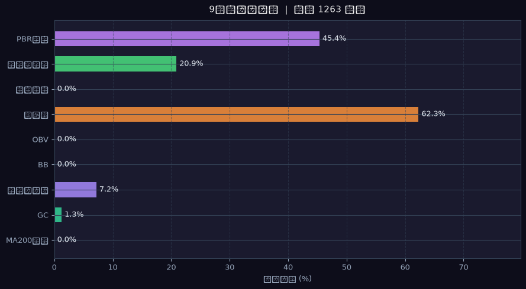
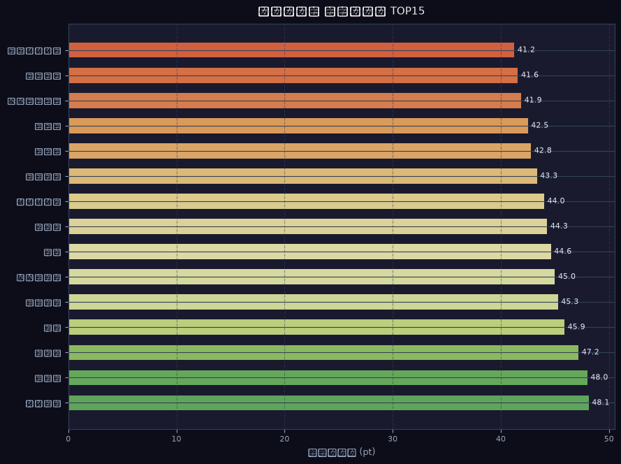

📊 セクター別集計
| セクター | 銘柄数 |
|---|---|
| ETF他 | 155 |
| サービス業 | 111 |
| 小売業 | 104 |
| 電気機器 | 101 |
| 情報・通信業 | 87 |
| 卸売業 | 86 |
| 化学 | 81 |
| 機械 | 73 |
🔔 シグナル分布
| シグナル | 銘柄数 | % | 分布 |
|---|---|---|---|
| ゴールデンクロス | 16銘柄 | 1% | |
| BB反発 | 277銘柄 | 22% | ████ |
| BBブレイク | 124銘柄 | 10% | █ |
| 出来高急増 | 264銘柄 | 21% | ████ |
| OBV上昇 | 767銘柄 | 61% | ████████████ |
📊 シグナル統計グラフ（Step2）


📈 Top5 スコアチャート（ローソク足 3ヶ月 / MA25・MA75・MA200・BB）
🗂️ BackLog一覧（バックテスト参考値 降順）
| 順位 | コード | 銘柄名 | セクター | スコア | BackLog | MA200 15pt | GC 10pt | 底値 10pt | BB 15pt | OBV 10pt | 雲上 10pt | 三役好転 10pt | 出来高 10pt | PBR 10pt |
|---|---|---|---|---|---|---|---|---|---|---|---|---|---|---|
| 1 | 4462 | 石原ケミカル | 化学 | 70 | 100.0%（3回） | ✅15pt | — | — | ✅15pt | ✅10pt | ✅10pt | ✅10pt | ✅10pt | — |
| 2 | 5355 | 日本坩堝 | ガラス・土石製品 | 70 | 100.0%（2回） | ✅15pt | — | — | ✅15pt | ✅10pt | ✅10pt | ✅10pt | — | ✅10pt |
| 3 | 6146 | ディスコ | 機械 | 70 | 100.0%（4回） | ✅15pt | — | — | ✅15pt | ✅10pt | ✅10pt | ✅10pt | ✅10pt | — |
| 4 | 6336 | 石井表記 | 機械 | 70 | 100.0%（4回） | ✅15pt | — | — | ✅15pt | ✅10pt | ✅10pt | ✅10pt | ✅10pt | — |
| 5 | 7350 | おきなわフィナンシャルグループ | 銀行業 | 70 | 100.0%（3回） | ✅15pt | — | — | ✅15pt | ✅10pt | ✅10pt | ✅10pt | — | ✅10pt |
| 6 | 7442 | 中山福 | 卸売業 | 70 | 100.0%（2回） | ✅15pt | — | — | ✅15pt | ✅10pt | ✅10pt | — | ✅10pt | ✅10pt |
| 7 | 7460 | ヤギ | 卸売業 | 70 | 100.0%（1回） | ✅15pt | — | — | ✅15pt | ✅10pt | ✅10pt | ✅10pt | — | ✅10pt |
| 8 | 7481 | 尾家産業 | 卸売業 | 70 | 100.0%（8回） | ✅15pt | — | — | ✅15pt | ✅10pt | ✅10pt | ✅10pt | ✅10pt | — |
| 9 | 7486 | サンリン | 卸売業 | 70 | 100.0%（2回） | ✅15pt | — | — | ✅15pt | ✅10pt | ✅10pt | — | ✅10pt | ✅10pt |
| 10 | 5471 | 大同特殊鋼 | 鉄鋼 | 65 | 100.0%（1回） | ✅15pt | — | — | — | ✅10pt | ✅10pt | ✅10pt | ✅10pt | ✅10pt |
| 11 | 7875 | 竹田ｉＰホールディングス | その他製品 | 65 | 100.0%（1回） | ✅15pt | — | — | — | ✅10pt | ✅10pt | ✅10pt | ✅10pt | ✅10pt |
| 12 | 8173 | 上新電機 | 小売業 | 65 | 100.0%（2回） | ✅15pt | — | — | — | ✅10pt | ✅10pt | ✅10pt | ✅10pt | ✅10pt |
| 13 | 1518 | 三井松島ホールディングス | その他製品 | 60 | 100.0%（1回） | ✅15pt | — | — | ✅15pt | ✅10pt | ✅10pt | ✅10pt | — | — |
| 14 | 3512 | 日本フエルト | 繊維製品 | 60 | 100.0%（3回） | ✅15pt | — | ✅10pt | ✅15pt | — | — | — | ✅10pt | ✅10pt |
| 15 | 8345 | 岩手銀行 | 銀行業 | 60 | 100.0%（4回） | ✅15pt | — | — | ✅15pt | ✅10pt | ✅10pt | — | — | ✅10pt |
| 16 | 8616 | 東海東京フィナンシャル・ホールディングス | 証券、商品先物取引業 | 60 | 100.0%（4回） | ✅15pt | — | — | ✅15pt | ✅10pt | ✅10pt | — | — | ✅10pt |
| 17 | 9304 | 澁澤倉庫 | 倉庫・運輸関連業 | 60 | 100.0%（2回） | ✅15pt | — | — | ✅15pt | ✅10pt | ✅10pt | ✅10pt | — | — |
| 18 | 1546 | ＮＥＸＴ ＦＵＮＤＳ ダウ・ジョーンズ工業株３０種平均株価（為替ヘッジなし）連動型上場投信 | - | 55 | 100.0%（3回） | ✅15pt | — | — | — | ✅10pt | ✅10pt | ✅10pt | ✅10pt | — |
| 19 | 1577 | ＮＥＸＴ ＦＵＮＤＳ 野村日本株高配当７０連動型上場投信 | - | 55 | 100.0%（1回） | ✅15pt | — | — | — | ✅10pt | ✅10pt | ✅10pt | ✅10pt | — |
| 20 | 170A | ＳＭＴ ＥＴＦ日本好配当株アクティブ | - | 55 | 100.0%（2回） | ✅15pt | — | — | — | ✅10pt | ✅10pt | ✅10pt | ✅10pt | — |
| 21 | 2004 | 昭和産業 | 食料品 | 55 | 100.0%（5回） | ✅15pt | — | — | — | ✅10pt | ✅10pt | ✅10pt | — | ✅10pt |
| 22 | 200A | ＮＥＸＴ ＦＵＮＤＳ 日経半導体株指数連動型上場投信 | - | 55 | 100.0%（2回） | ✅15pt | — | — | — | ✅10pt | ✅10pt | ✅10pt | ✅10pt | — |
| 23 | 2060 | フィード・ワン | 食料品 | 55 | 100.0%（6回） | ✅15pt | — | — | — | ✅10pt | ✅10pt | ✅10pt | — | ✅10pt |
| 24 | 221A | ＭＡＸＩＳ日経半導体株上場投信 | - | 55 | 100.0%（3回） | ✅15pt | — | — | — | ✅10pt | ✅10pt | ✅10pt | ✅10pt | — |
| 25 | 2664 | カワチ薬品 | 小売業 | 55 | 100.0%（4回） | ✅15pt | — | — | — | ✅10pt | ✅10pt | ✅10pt | — | ✅10pt |
| 26 | 3096 | オーシャンシステム | 小売業 | 55 | 100.0%（1回） | ✅15pt | — | — | — | ✅10pt | ✅10pt | ✅10pt | ✅10pt | — |
| 27 | 3477 | フォーライフ | 不動産業 | 55 | 100.0%（2回） | — | — | — | ✅15pt | ✅10pt | ✅10pt | — | ✅10pt | ✅10pt |
| 28 | 379A | グローバルＸ Ｓ＆Ｐ５００ ＥＴＦ（ダイナミック・プロテクション） | - | 55 | 100.0%（1回） | ✅15pt | — | — | — | ✅10pt | ✅10pt | ✅10pt | ✅10pt | — |
| 29 | 4008 | 住友精化 | 化学 | 55 | 100.0%（2回） | ✅15pt | — | — | — | ✅10pt | ✅10pt | ✅10pt | — | ✅10pt |
| 30 | 4109 | ステラ ケミファ | 化学 | 55 | 100.0%（5回） | ✅15pt | — | — | — | ✅10pt | ✅10pt | ✅10pt | ✅10pt | — |
| 31 | 4118 | カネカ | 化学 | 55 | 100.0%（1回） | ✅15pt | — | — | — | ✅10pt | ✅10pt | ✅10pt | — | ✅10pt |
| 32 | 4690 | 日本パレットプール | サービス業 | 55 | 100.0%（4回） | ✅15pt | — | — | — | ✅10pt | ✅10pt | ✅10pt | — | ✅10pt |
| 33 | 4977 | 新田ゼラチン | 化学 | 55 | 100.0%（1回） | ✅15pt | — | — | — | ✅10pt | ✅10pt | ✅10pt | — | ✅10pt |
| 34 | 5945 | 天龍製鋸 | 金属製品 | 55 | 100.0%（1回） | ✅15pt | — | — | — | ✅10pt | ✅10pt | ✅10pt | — | ✅10pt |
| 35 | 5951 | ダイニチ工業 | 金属製品 | 55 | 100.0%（4回） | ✅15pt | — | — | — | ✅10pt | ✅10pt | — | ✅10pt | ✅10pt |
| 36 | 5981 | 東京製綱 | 金属製品 | 55 | 100.0%（3回） | ✅15pt | — | — | — | ✅10pt | ✅10pt | ✅10pt | — | ✅10pt |
| 37 | 6463 | ＴＰＲ | 機械 | 55 | 100.0%（3回） | ✅15pt | — | — | — | ✅10pt | ✅10pt | ✅10pt | — | ✅10pt |
| 38 | 7812 | クレステック | その他製品 | 55 | 100.0%（2回） | ✅15pt | — | — | — | ✅10pt | ✅10pt | ✅10pt | — | ✅10pt |
| 39 | 8218 | コメリ | 小売業 | 55 | 100.0%（5回） | ✅15pt | — | — | — | ✅10pt | ✅10pt | ✅10pt | — | ✅10pt |
| 40 | 8343 | 秋田銀行 | 銀行業 | 55 | 100.0%（2回） | ✅15pt | — | — | — | ✅10pt | ✅10pt | ✅10pt | — | ✅10pt |
| 41 | 8360 | 山梨中央銀行 | 銀行業 | 55 | 100.0%（3回） | ✅15pt | — | — | — | ✅10pt | ✅10pt | ✅10pt | — | ✅10pt |
| 42 | 8368 | 百五銀行 | 銀行業 | 55 | 100.0%（2回） | ✅15pt | — | — | — | ✅10pt | ✅10pt | ✅10pt | — | ✅10pt |
| 43 | 8387 | 四国銀行 | 銀行業 | 55 | 100.0%（3回） | ✅15pt | — | — | — | ✅10pt | ✅10pt | ✅10pt | — | ✅10pt |
| 44 | 8388 | 阿波銀行 | 銀行業 | 55 | 100.0%（6回） | ✅15pt | — | — | — | ✅10pt | ✅10pt | ✅10pt | — | ✅10pt |
| 45 | 8424 | 芙蓉総合リース | その他金融業 | 55 | 100.0%（3回） | ✅15pt | — | ✅10pt | — | ✅10pt | ✅10pt | — | — | ✅10pt |
| 46 | 8541 | 愛媛銀行 | 銀行業 | 55 | 100.0%（2回） | ✅15pt | — | — | — | ✅10pt | ✅10pt | ✅10pt | — | ✅10pt |
| 47 | 8551 | 北日本銀行 | 銀行業 | 55 | 100.0%（5回） | ✅15pt | — | — | — | ✅10pt | ✅10pt | ✅10pt | — | ✅10pt |
| 48 | 2612 | かどや製油 | 食料品 | 50 | 100.0%（1回） | ✅15pt | — | — | ✅15pt | ✅10pt | ✅10pt | — | — | — |
| 49 | 3441 | 山王 | 金属製品 | 50 | 100.0%（3回） | ✅15pt | — | — | ✅15pt | ✅10pt | — | — | ✅10pt | — |
| 50 | 5816 | オーナンバ | 非鉄金属 | 50 | 100.0%（2回） | ✅15pt | — | — | ✅15pt | — | — | — | ✅10pt | ✅10pt |
| 51 | 7192 | 日本モーゲージサービス | その他金融業 | 50 | 100.0%（2回） | ✅15pt | — | — | ✅15pt | — | — | — | ✅10pt | ✅10pt |
| 52 | 7235 | 東京ラヂエーター製造 | 輸送用機器 | 50 | 100.0%（1回） | ✅15pt | — | ✅10pt | ✅15pt | — | — | — | — | ✅10pt |
| 53 | 7287 | 日本精機 | 輸送用機器 | 50 | 100.0%（1回） | ✅15pt | ✅10pt | — | ✅15pt | — | — | — | — | ✅10pt |
| 54 | 8157 | 都築電気 | 情報・通信業 | 50 | 100.0%（4回） | ✅15pt | — | — | ✅15pt | — | ✅10pt | ✅10pt | — | — |
| 55 | 1680 | 上場インデックスファンド海外先進国株式（ＭＳＣＩ－ＫＯＫＵＳＡＩ） | - | 45 | 100.0%（2回） | ✅15pt | — | — | — | ✅10pt | ✅10pt | ✅10pt | — | — |
| 56 | 1698 | 上場インデックスファンド日本高配当（東証配当フォーカス１００） | - | 45 | 100.0%（2回） | ✅15pt | — | — | — | ✅10pt | ✅10pt | — | ✅10pt | — |
| 57 | 1848 | 富士ピー・エス | 建設業 | 45 | 100.0%（2回） | ✅15pt | — | — | — | — | ✅10pt | ✅10pt | — | ✅10pt |
| 58 | 1909 | 日本ドライケミカル | 機械 | 45 | 100.0%（2回） | ✅15pt | — | — | — | ✅10pt | ✅10pt | ✅10pt | — | — |
| 59 | 1941 | 中電工 | 建設業 | 45 | 100.0%（3回） | ✅15pt | — | — | — | ✅10pt | ✅10pt | ✅10pt | — | — |
| 60 | 2011 | ＳＭＤＡＭ Ａｃｔｉｖｅ ＥＴＦ 日本高配当株式 | - | 45 | 100.0%（1回） | ✅15pt | — | — | — | ✅10pt | ✅10pt | — | ✅10pt | — |
| 61 | 2071 | スマートＥＳＧ３０総合（ネットリターン）ＥＴＮ | - | 45 | 100.0%（1回） | ✅15pt | — | — | — | ✅10pt | ✅10pt | ✅10pt | — | — |
| 62 | 2080 | ＰＢＲ１倍割れ解消推進ＥＴＦ | - | 45 | 100.0%（2回） | ✅15pt | — | — | — | ✅10pt | ✅10pt | ✅10pt | — | — |
| 63 | 2081 | 政策保有解消推進ＥＴＦ | - | 45 | 100.0%（3回） | ✅15pt | — | — | — | ✅10pt | ✅10pt | — | ✅10pt | — |
| 64 | 213A | 上場インデックスファンド日経半導体株 | - | 45 | 100.0%（3回） | ✅15pt | — | — | — | ✅10pt | ✅10pt | ✅10pt | — | — |
| 65 | 2235 | 上場インデックスファンド米国株式（ダウ平均）為替ヘッジなし | - | 45 | 100.0%（2回） | ✅15pt | — | — | — | ✅10pt | ✅10pt | ✅10pt | — | — |
| 66 | 2236 | グローバルＸ Ｓ＆Ｐ５００配当貴族ＥＴＦ | - | 45 | 100.0%（4回） | ✅15pt | — | — | — | ✅10pt | ✅10pt | ✅10pt | — | — |
| 67 | 2264 | 森永乳業 | 食料品 | 45 | 100.0%（3回） | ✅15pt | — | — | — | ✅10pt | ✅10pt | ✅10pt | — | — |
| 68 | 2513 | ＮＥＸＴ ＦＵＮＤＳ 外国株式・ＭＳＣＩ－ＫＯＫＵＳＡＩ指数（為替ヘッジなし）連動型上場投信 | - | 45 | 100.0%（2回） | ✅15pt | — | — | — | ✅10pt | ✅10pt | ✅10pt | — | — |
| 69 | 2643 | ＮＥＸＴ ＦＵＮＤＳ ＭＳＣＩジャパンカントリー指数（セレクト）連動型上場投信 | - | 45 | 100.0%（1回） | ✅15pt | — | — | — | ✅10pt | ✅10pt | — | ✅10pt | — |
| 70 | 2730 | エディオン | 小売業 | 45 | 100.0%（5回） | ✅15pt | — | — | — | ✅10pt | ✅10pt | ✅10pt | — | — |
| 71 | 2914 | 日本たばこ産業 | 食料品 | 45 | 100.0%（2回） | ✅15pt | — | — | — | — | ✅10pt | ✅10pt | ✅10pt | — |
| 72 | 3082 | きちりホールディングス | 小売業 | 45 | 100.0%（6回） | ✅15pt | — | — | — | ✅10pt | ✅10pt | ✅10pt | — | — |
| 73 | 3101 | 東洋紡 | 化学 | 45 | 100.0%（4回） | ✅15pt | — | — | — | — | ✅10pt | ✅10pt | — | ✅10pt |
| 74 | 3156 | レスター | 卸売業 | 45 | 100.0%（7回） | ✅15pt | — | — | — | ✅10pt | ✅10pt | ✅10pt | — | — |
| 75 | 3223 | エスエルディー | 小売業 | 45 | 100.0%（5回） | — | — | — | ✅15pt | ✅10pt | ✅10pt | ✅10pt | — | — |
| 76 | 356A | グローバルＸ Ｓ＆Ｐ５００ キャッシュフロー・トップ１００ ＥＴＦ | - | 45 | 100.0%（2回） | ✅15pt | — | — | — | ✅10pt | ✅10pt | ✅10pt | — | — |
| 77 | 3877 | 中越パルプ工業 | パルプ・紙 | 45 | 100.0%（2回） | ✅15pt | — | — | — | ✅10pt | ✅10pt | — | — | ✅10pt |
| 78 | 3946 | トーモク | パルプ・紙 | 45 | 100.0%（2回） | ✅15pt | — | — | — | ✅10pt | ✅10pt | — | — | ✅10pt |
| 79 | 4346 | ＮＥＸＹＺ．Ｇｒｏｕｐ | その他金融業 | 45 | 100.0%（4回） | — | — | — | ✅15pt | — | ✅10pt | ✅10pt | ✅10pt | — |
| 80 | 5076 | インフロニア・ホールディングス | 建設業 | 45 | 100.0%（5回） | ✅15pt | — | — | — | ✅10pt | ✅10pt | ✅10pt | — | — |
| 81 | 5186 | ニッタ | ゴム製品 | 45 | 100.0%（1回） | ✅15pt | — | — | — | ✅10pt | ✅10pt | ✅10pt | — | — |
| 82 | 5195 | バンドー化学 | ゴム製品 | 45 | 100.0%（4回） | ✅15pt | — | — | — | — | ✅10pt | ✅10pt | — | ✅10pt |
| 83 | 5333 | 日本碍子 | ガラス・土石製品 | 45 | 100.0%（1回） | ✅15pt | — | — | — | ✅10pt | ✅10pt | ✅10pt | — | — |
| 84 | 5384 | フジミインコーポレーテッド | ガラス・土石製品 | 45 | 100.0%（5回） | ✅15pt | — | — | — | ✅10pt | ✅10pt | ✅10pt | — | — |
| 85 | 6264 | マルマエ | 機械 | 45 | 100.0%（1回） | ✅15pt | — | — | — | ✅10pt | ✅10pt | — | ✅10pt | — |
| 86 | 6376 | 日機装 | 精密機器 | 45 | 100.0%（1回） | ✅15pt | — | — | — | ✅10pt | ✅10pt | ✅10pt | — | — |
| 87 | 6517 | デンヨー | 電気機器 | 45 | 100.0%（2回） | ✅15pt | — | — | — | ✅10pt | — | — | ✅10pt | ✅10pt |
| 88 | 6523 | ＰＨＣホールディングス | 電気機器 | 45 | 100.0%（9回） | ✅15pt | — | — | — | — | ✅10pt | ✅10pt | — | ✅10pt |
| 89 | 6901 | 澤藤電機 | 電気機器 | 45 | 100.0%（2回） | ✅15pt | — | — | — | ✅10pt | ✅10pt | — | — | ✅10pt |
| 90 | 6925 | ウシオ電機 | 電気機器 | 45 | 100.0%（1回） | ✅15pt | — | — | — | ✅10pt | ✅10pt | ✅10pt | — | — |
| 91 | 7119 | ハルメクホールディングス | 小売業 | 45 | 100.0%（2回） | ✅15pt | — | — | — | ✅10pt | ✅10pt | ✅10pt | — | — |
| 92 | 7173 | 東京きらぼしフィナンシャルグループ | 銀行業 | 45 | 100.0%（1回） | ✅15pt | — | — | — | ✅10pt | ✅10pt | — | — | ✅10pt |
| 93 | 7327 | 第四北越フィナンシャルグループ | 銀行業 | 45 | 100.0%（2回） | ✅15pt | — | — | — | ✅10pt | ✅10pt | — | — | ✅10pt |
| 94 | 7380 | 十六フィナンシャルグループ | 銀行業 | 45 | 100.0%（1回） | ✅15pt | — | — | — | ✅10pt | ✅10pt | — | — | ✅10pt |
| 95 | 7735 | ＳＣＲＥＥＮホールディングス | 電気機器 | 45 | 100.0%（2回） | ✅15pt | — | — | — | ✅10pt | ✅10pt | ✅10pt | — | — |
| 96 | 7981 | タカラスタンダード | その他製品 | 45 | 100.0%（2回） | ✅15pt | ✅10pt | — | — | ✅10pt | — | — | — | ✅10pt |
| 97 | 7995 | バルカー | 化学 | 45 | 100.0%（3回） | ✅15pt | — | — | — | ✅10pt | ✅10pt | ✅10pt | — | — |
| 98 | 8336 | 武蔵野銀行 | 銀行業 | 45 | 100.0%（2回） | ✅15pt | — | — | — | ✅10pt | ✅10pt | — | — | ✅10pt |
| 99 | 8341 | 七十七銀行 | 銀行業 | 45 | 100.0%（1回） | ✅15pt | — | — | — | ✅10pt | ✅10pt | ✅10pt | — | — |
| 100 | 8349 | 東北銀行 | 銀行業 | 45 | 100.0%（2回） | ✅15pt | — | ✅10pt | — | ✅10pt | — | — | — | ✅10pt |
| 101 | 8359 | 八十二長野銀行 | 銀行業 | 45 | 100.0%（2回） | ✅15pt | — | — | — | — | ✅10pt | ✅10pt | — | ✅10pt |
| 102 | 8361 | 大垣共立銀行 | 銀行業 | 45 | 100.0%（2回） | ✅15pt | — | — | — | ✅10pt | ✅10pt | — | — | ✅10pt |
| 103 | 8386 | 百十四銀行 | 銀行業 | 45 | 100.0%（3回） | ✅15pt | — | — | — | ✅10pt | ✅10pt | — | — | ✅10pt |
| 104 | 8392 | 大分銀行 | 銀行業 | 45 | 100.0%（1回） | ✅15pt | — | — | — | ✅10pt | ✅10pt | — | — | ✅10pt |
| 105 | 8393 | 宮崎銀行 | 銀行業 | 45 | 100.0%（3回） | ✅15pt | — | — | — | ✅10pt | ✅10pt | — | — | ✅10pt |
| 106 | 8411 | みずほフィナンシャルグループ | 銀行業 | 45 | 100.0%（5回） | ✅15pt | — | — | — | ✅10pt | ✅10pt | ✅10pt | — | — |
| 107 | 8524 | 北洋銀行 | 銀行業 | 45 | 100.0%（2回） | ✅15pt | — | — | — | ✅10pt | ✅10pt | — | — | ✅10pt |
| 108 | 8537 | 大光銀行 | 銀行業 | 45 | 100.0%（5回） | ✅15pt | — | — | — | — | ✅10pt | ✅10pt | — | ✅10pt |
| 109 | 8544 | 京葉銀行 | 銀行業 | 45 | 100.0%（1回） | ✅15pt | — | — | — | — | ✅10pt | ✅10pt | — | ✅10pt |
| 110 | 8550 | 栃木銀行 | 銀行業 | 45 | 100.0%（1回） | ✅15pt | — | — | — | ✅10pt | ✅10pt | — | — | ✅10pt |
| 111 | 8630 | ＳＯＭＰＯホールディングス | 保険業 | 45 | 100.0%（1回） | ✅15pt | — | — | — | ✅10pt | ✅10pt | ✅10pt | — | — |
| 112 | 8714 | 池田泉州ホールディングス | 銀行業 | 45 | 100.0%（1回） | ✅15pt | — | — | — | ✅10pt | ✅10pt | ✅10pt | — | — |
| 113 | 9034 | 南総通運 | 陸運業 | 45 | 100.0%（1回） | ✅15pt | — | — | — | ✅10pt | ✅10pt | — | — | ✅10pt |
| 114 | 9344 | アクシスコンサルティング | サービス業 | 45 | 100.0%（4回） | ✅15pt | — | — | — | — | ✅10pt | ✅10pt | ✅10pt | — |
| 115 | 9401 | ＴＢＳホールディングス | 情報・通信業 | 45 | 100.0%（5回） | ✅15pt | — | — | — | ✅10pt | — | — | ✅10pt | ✅10pt |
| 116 | 9502 | 中部電力 | 電気・ガス業 | 45 | 100.0%（1回） | ✅15pt | — | — | — | ✅10pt | ✅10pt | — | — | ✅10pt |
| 117 | 2072 | トップシェアインデックス（ネットリターン）ＥＴＮ | - | 40 | 100.0%（1回） | ✅15pt | — | — | ✅15pt | ✅10pt | — | — | — | — |
| 118 | 2641 | グローバルＸ グローバルリーダーズ－日本株式 ＥＴＦ | - | 40 | 100.0%（1回） | ✅15pt | — | — | ✅15pt | — | — | — | ✅10pt | — |
| 119 | 3103 | ユニチカ | 繊維製品 | 40 | 100.0%（7回） | ✅15pt | — | — | ✅15pt | ✅10pt | — | — | — | — |
| 120 | 313A | ｉシェアーズ Ｓ＆Ｐ ５００ トップ ２０ ＥＴＦ | - | 40 | 100.0%（1回） | ✅15pt | — | — | ✅15pt | — | — | — | ✅10pt | — |
| 121 | 3551 | ダイニック | 繊維製品 | 40 | 100.0%（1回） | ✅15pt | — | — | ✅15pt | — | — | — | — | ✅10pt |
| 122 | 3798 | ＵＬＳグループ | 情報・通信業 | 40 | 100.0%（4回） | — | — | — | — | ✅10pt | ✅10pt | ✅10pt | ✅10pt | — |
| 123 | 5013 | ユシロ | 石油・石炭製品 | 40 | 100.0%（4回） | ✅15pt | — | — | ✅15pt | — | — | — | — | ✅10pt |
| 124 | 5214 | 日本電気硝子 | ガラス・土石製品 | 40 | 100.0%（4回） | ✅15pt | — | — | ✅15pt | — | — | — | — | ✅10pt |
| 125 | 5697 | サンユウ | 鉄鋼 | 40 | 100.0%（4回） | ✅15pt | — | — | ✅15pt | — | — | — | — | ✅10pt |
| 126 | 5965 | フジマック | 金属製品 | 40 | 100.0%（3回） | ✅15pt | — | — | ✅15pt | — | — | — | — | ✅10pt |
| 127 | 6471 | 日本精工 | 機械 | 40 | 100.0%（1回） | ✅15pt | — | — | ✅15pt | — | — | — | — | ✅10pt |
| 128 | 6504 | 富士電機 | 電気機器 | 40 | 100.0%（2回） | ✅15pt | — | — | ✅15pt | ✅10pt | — | — | — | — |
| 129 | 6518 | 三相電機 | 電気機器 | 40 | 100.0%（2回） | ✅15pt | — | — | ✅15pt | — | — | — | — | ✅10pt |
| 130 | 6643 | 戸上電機製作所 | 電気機器 | 40 | 100.0%（2回） | ✅15pt | — | — | ✅15pt | — | — | — | — | ✅10pt |
| 131 | 6706 | 電気興業 | 電気機器 | 40 | 100.0%（4回） | ✅15pt | — | — | ✅15pt | — | — | — | — | ✅10pt |
| 132 | 6822 | 大井電気 | 電気機器 | 40 | 100.0%（1回） | ✅15pt | — | — | ✅15pt | — | — | — | — | ✅10pt |
| 133 | 6928 | エノモト | 電気機器 | 40 | 100.0%（3回） | ✅15pt | — | — | ✅15pt | — | — | — | — | ✅10pt |
| 134 | 7058 | 共栄セキュリティーサービス | サービス業 | 40 | 100.0%（3回） | ✅15pt | — | — | ✅15pt | — | — | — | — | ✅10pt |
| 135 | 7219 | エッチ・ケー・エス | 輸送用機器 | 40 | 100.0%（2回） | ✅15pt | — | — | ✅15pt | — | — | — | — | ✅10pt |
| 136 | 7727 | オーバル | 精密機器 | 40 | 100.0%（2回） | ✅15pt | — | — | ✅15pt | — | — | — | — | ✅10pt |
| 137 | 7927 | ムトー精工 | 化学 | 40 | 100.0%（3回） | ✅15pt | — | — | ✅15pt | — | — | — | — | ✅10pt |
| 138 | 8919 | カチタス | 不動産業 | 40 | 100.0%（3回） | ✅15pt | — | — | ✅15pt | ✅10pt | — | — | — | — |
| 139 | 8996 | ハウスフリーダム | 不動産業 | 40 | 100.0%（2回） | ✅15pt | — | — | ✅15pt | — | — | — | — | ✅10pt |
| 140 | 9303 | 住友倉庫 | 倉庫・運輸関連業 | 40 | 100.0%（1回） | ✅15pt | — | — | ✅15pt | — | — | — | — | ✅10pt |
| 141 | 9446 | サカイホールディングス | 情報・通信業 | 40 | 100.0%（2回） | ✅15pt | ✅10pt | — | ✅15pt | — | — | — | — | — |
| 142 | 9982 | タキヒヨー | 卸売業 | 40 | 100.0%（2回） | ✅15pt | — | — | ✅15pt | — | — | — | — | ✅10pt |
| 143 | 1477 | ｉシェアーズ ＭＳＣＩ 日本株最小分散 ＥＴＦ | - | 35 | 100.0%（3回） | ✅15pt | — | — | — | — | ✅10pt | ✅10pt | — | — |
| 144 | 1550 | ＭＡＸＩＳ 海外株式（ＭＳＣＩコクサイ）上場投信 | - | 35 | 100.0%（2回） | ✅15pt | — | — | — | — | ✅10pt | ✅10pt | — | — |
| 145 | 159A | ＮＥＸＴ ＦＵＮＤＳ ＪＰＸプライム１５０指数連動型上場投信 | - | 35 | 100.0%（3回） | ✅15pt | — | — | — | ✅10pt | — | — | ✅10pt | — |
| 146 | 1615 | ＮＥＸＴ ＦＵＮＤＳ 東証銀行業株価指数連動型上場投信 | - | 35 | 100.0%（3回） | ✅15pt | — | — | — | — | ✅10pt | ✅10pt | — | — |
| 147 | 1657 | ｉシェアーズ・コア ＭＳＣＩ 先進国株（除く日本）ＥＴＦ | - | 35 | 100.0%（2回） | ✅15pt | — | — | — | — | ✅10pt | ✅10pt | — | — |
| 148 | 1776 | 三井住建道路 | 建設業 | 35 | 100.0%（2回） | ✅15pt | — | — | — | ✅10pt | ✅10pt | — | — | — |
| 149 | 182A | ＭＡＸＩＳ米国国債２０年超上場投信（為替ヘッジなし） | - | 35 | 100.0%（2回） | ✅15pt | — | — | — | — | ✅10pt | ✅10pt | — | — |
| 150 | 1930 | 北陸電気工事 | 建設業 | 35 | 100.0%（4回） | ✅15pt | — | — | — | — | ✅10pt | — | — | ✅10pt |
| 151 | 1945 | 東京エネシス | 建設業 | 35 | 100.0%（3回） | ✅15pt | — | — | — | — | ✅10pt | ✅10pt | — | — |
| 152 | 2014 | ｉシェアーズ 米国連続増配株 ＥＴＦ | - | 35 | 100.0%（1回） | ✅15pt | — | — | — | — | ✅10pt | ✅10pt | — | — |
| 153 | 2083 | ＮＥＸＴ ＦＵＮＤＳ 日本成長株アクティブ上場投信 | - | 35 | 100.0%（2回） | ✅15pt | — | — | — | — | ✅10pt | ✅10pt | — | — |
| 154 | 2087 | ＮＺＡＭ 上場投信 ＮＡＳＤＡＱ１００（為替ヘッジあり） | - | 35 | 100.0%（3回） | ✅15pt | — | — | — | ✅10pt | — | — | ✅10pt | — |
| 155 | 2207 | ｍｅｉｔｏ | 食料品 | 35 | 100.0%（2回） | ✅15pt | — | — | — | ✅10pt | — | — | — | ✅10pt |
| 156 | 2241 | ＭＡＸＩＳ ＮＹダウ上場投信 | - | 35 | 100.0%（2回） | ✅15pt | — | — | — | — | ✅10pt | ✅10pt | — | — |
| 157 | 2243 | グローバルＸ 半導体 ＥＴＦ | - | 35 | 100.0%（1回） | ✅15pt | — | — | — | — | ✅10pt | ✅10pt | — | — |
| 158 | 2286 | 林兼産業 | 食料品 | 35 | 100.0%（1回） | ✅15pt | — | — | — | ✅10pt | — | — | — | ✅10pt |
| 159 | 2288 | 丸大食品 | 食料品 | 35 | 100.0%（1回） | ✅15pt | — | — | — | ✅10pt | — | — | — | ✅10pt |
| 160 | 2520 | ＮＥＸＴ ＦＵＮＤＳ 新興国株式・ＭＳＣＩエマージング・マーケット・インデックス（為替ヘッジなし）連動型上場投信 | - | 35 | 100.0%（2回） | ✅15pt | — | — | — | — | ✅10pt | ✅10pt | — | — |
| 161 | 2525 | ＮＺＡＭ 上場投信 日経２２５ | - | 35 | 100.0%（2回） | ✅15pt | — | — | — | — | ✅10pt | ✅10pt | — | — |
| 162 | 2530 | ＭＡＸＩＳ ＨｕａＡｎ中国株式（上海１８０Ａ株）上場投信 | - | 35 | 100.0%（1回） | ✅15pt | — | — | — | ✅10pt | ✅10pt | — | — | — |
| 163 | 2637 | グローバルＸ クリーンテック－日本株式 ＥＴＦ | - | 35 | 100.0%（1回） | ✅15pt | — | — | — | — | ✅10pt | ✅10pt | — | — |
| 164 | 2805 | ヱスビー食品 | 食料品 | 35 | 100.0%（2回） | ✅15pt | — | — | — | — | ✅10pt | ✅10pt | — | — |
| 165 | 283A | グローバルＸ ＵＳ テック・配当貴族 ＥＴＦ | - | 35 | 100.0%（1回） | ✅15pt | — | — | — | — | ✅10pt | — | ✅10pt | — |
| 166 | 2844 | 上場インデックスファンド豪州国債（為替ヘッジなし） | - | 35 | 100.0%（4回） | ✅15pt | — | — | — | — | ✅10pt | ✅10pt | — | — |
| 167 | 3177 | ありがとうサービス | 小売業 | 35 | 100.0%（4回） | ✅15pt | — | — | — | ✅10pt | — | — | — | ✅10pt |
| 168 | 3279 | アクティビア・プロパティーズ投資法人 | - | 35 | 100.0%（1回） | — | — | — | ✅15pt | ✅10pt | ✅10pt | — | — | — |
| 169 | 3375 | ＺＯＡ | 小売業 | 35 | 100.0%（1回） | — | — | — | ✅15pt | — | — | — | ✅10pt | ✅10pt |
| 170 | 3449 | テクノフレックス | 金属製品 | 35 | 100.0%（2回） | ✅15pt | — | — | — | — | ✅10pt | ✅10pt | — | — |
| 171 | 3569 | セーレン | 繊維製品 | 35 | 100.0%（3回） | ✅15pt | — | — | — | ✅10pt | ✅10pt | — | — | — |
| 172 | 4044 | セントラル硝子 | 化学 | 35 | 100.0%（2回） | ✅15pt | — | — | — | ✅10pt | — | — | — | ✅10pt |
| 173 | 4112 | 保土谷化学工業 | 化学 | 35 | 100.0%（3回） | ✅15pt | — | — | — | ✅10pt | — | — | — | ✅10pt |
| 174 | 4255 | ＴＨＥＣＯＯ | 情報・通信業 | 35 | 100.0%（2回） | ✅15pt | — | — | — | — | ✅10pt | ✅10pt | — | — |
| 175 | 4272 | 日本化薬 | 化学 | 35 | 100.0%（6回） | ✅15pt | — | — | — | — | ✅10pt | ✅10pt | — | — |
| 176 | 4461 | 第一工業製薬 | 化学 | 35 | 100.0%（2回） | ✅15pt | — | — | — | — | ✅10pt | ✅10pt | — | — |
| 177 | 4956 | コニシ | 化学 | 35 | 100.0%（1回） | ✅15pt | — | — | — | ✅10pt | ✅10pt | — | — | — |
| 178 | 5199 | 不二ラテックス | ゴム製品 | 35 | 100.0%（1回） | ✅15pt | — | — | — | ✅10pt | — | — | — | ✅10pt |
| 179 | 5334 | 日本特殊陶業 | ガラス・土石製品 | 35 | 100.0%（2回） | ✅15pt | — | — | — | — | ✅10pt | ✅10pt | — | — |
| 180 | 5393 | ニチアス | ガラス・土石製品 | 35 | 100.0%（3回） | ✅15pt | — | — | — | — | ✅10pt | ✅10pt | — | — |
| 181 | 5702 | 大紀アルミニウム工業所 | 非鉄金属 | 35 | 100.0%（3回） | ✅15pt | — | — | — | ✅10pt | — | — | — | ✅10pt |
| 182 | 5830 | いよぎんホールディングス | 銀行業 | 35 | 100.0%（7回） | ✅15pt | — | — | — | ✅10pt | ✅10pt | — | — | — |
| 183 | 5922 | 那須電機鉄工 | 金属製品 | 35 | 100.0%（2回） | ✅15pt | — | — | — | ✅10pt | — | — | — | ✅10pt |
| 184 | 5974 | 中国工業 | 金属製品 | 35 | 100.0%（1回） | ✅15pt | — | — | — | — | — | — | ✅10pt | ✅10pt |
| 185 | 6042 | ニッキ | 輸送用機器 | 35 | 100.0%（1回） | ✅15pt | — | — | — | ✅10pt | — | — | — | ✅10pt |
| 186 | 6101 | ツガミ | 機械 | 35 | 100.0%（2回） | ✅15pt | — | — | — | — | ✅10pt | ✅10pt | — | — |
| 187 | 6136 | オーエスジー | 機械 | 35 | 100.0%（2回） | ✅15pt | — | — | — | ✅10pt | ✅10pt | — | — | — |
| 188 | 6165 | パンチ工業 | 機械 | 35 | 100.0%（2回） | ✅15pt | — | — | — | ✅10pt | — | — | — | ✅10pt |
| 189 | 6201 | 豊田自動織機 | 輸送用機器 | 35 | 100.0%（2回） | ✅15pt | — | — | — | ✅10pt | — | — | — | ✅10pt |
| 190 | 6278 | ユニオンツール | 機械 | 35 | 100.0%（2回） | ✅15pt | — | — | — | — | ✅10pt | ✅10pt | — | — |
| 191 | 6323 | ローツェ | 機械 | 35 | 100.0%（2回） | ✅15pt | — | — | — | — | ✅10pt | ✅10pt | — | — |
| 192 | 6331 | 三菱化工機 | 機械 | 35 | 100.0%（2回） | ✅15pt | — | — | — | ✅10pt | ✅10pt | — | — | — |
| 193 | 6486 | イーグル工業 | 機械 | 35 | 100.0%（6回） | ✅15pt | — | — | — | ✅10pt | — | — | — | ✅10pt |
| 194 | 6498 | キッツ | 機械 | 35 | 100.0%（4回） | ✅15pt | — | — | — | — | ✅10pt | ✅10pt | — | — |
| 195 | 6584 | 三櫻工業 | 輸送用機器 | 35 | 100.0%（2回） | ✅15pt | — | — | — | ✅10pt | — | — | — | ✅10pt |
| 196 | 6653 | 正興電機製作所 | 電気機器 | 35 | 100.0%（3回） | ✅15pt | — | ✅10pt | — | ✅10pt | — | — | — | — |
| 197 | 6677 | エスケーエレクトロニクス | 電気機器 | 35 | 100.0%（2回） | ✅15pt | — | — | — | ✅10pt | — | — | — | ✅10pt |
| 198 | 6779 | 日本電波工業 | 電気機器 | 35 | 100.0%（5回） | ✅15pt | — | — | — | ✅10pt | — | — | ✅10pt | — |
| 199 | 6857 | アドバンテスト | 電気機器 | 35 | 100.0%（3回） | ✅15pt | — | — | — | ✅10pt | ✅10pt | — | — | — |
| 200 | 6875 | メガチップス | 電気機器 | 35 | 100.0%（5回） | ✅15pt | — | — | — | ✅10pt | — | — | — | ✅10pt |
| 201 | 6898 | トミタ電機 | 電気機器 | 35 | 100.0%（2回） | ✅15pt | — | — | — | ✅10pt | — | — | — | ✅10pt |
| 202 | 6942 | ソフィアホールディングス | 情報・通信業 | 35 | 100.0%（3回） | ✅15pt | — | — | — | ✅10pt | ✅10pt | — | — | — |
| 203 | 6996 | ニチコン | 電気機器 | 35 | 100.0%（4回） | ✅15pt | — | — | — | — | ✅10pt | ✅10pt | — | — |
| 204 | 7167 | めぶきフィナンシャルグループ | 銀行業 | 35 | 100.0%（1回） | ✅15pt | — | — | — | ✅10pt | ✅10pt | — | — | — |
| 205 | 7208 | カネミツ | 輸送用機器 | 35 | 100.0%（3回） | ✅15pt | — | — | — | — | ✅10pt | — | — | ✅10pt |
| 206 | 7240 | ＮＯＫ | 輸送用機器 | 35 | 100.0%（4回） | ✅15pt | — | — | — | ✅10pt | — | — | — | ✅10pt |
| 207 | 7417 | 南陽 | 卸売業 | 35 | 100.0%（3回） | ✅15pt | — | — | — | ✅10pt | — | — | — | ✅10pt |
| 208 | 7453 | 良品計画 | 小売業 | 35 | 100.0%（5回） | ✅15pt | — | — | — | — | ✅10pt | ✅10pt | — | — |
| 209 | 7509 | アイエーグループ | 小売業 | 35 | 100.0%（1回） | ✅15pt | — | — | — | — | — | — | ✅10pt | ✅10pt |
| 210 | 7516 | コーナン商事 | 小売業 | 35 | 100.0%（9回） | ✅15pt | — | — | — | ✅10pt | — | — | — | ✅10pt |
| 211 | 7565 | 萬世電機 | 卸売業 | 35 | 100.0%（2回） | ✅15pt | — | — | — | — | — | — | ✅10pt | ✅10pt |
| 212 | 7741 | ＨＯＹＡ | 精密機器 | 35 | 100.0%（3回） | ✅15pt | — | — | — | ✅10pt | — | — | ✅10pt | — |
| 213 | 8018 | 三共生興 | 卸売業 | 35 | 100.0%（2回） | ✅15pt | — | — | — | ✅10pt | — | — | — | ✅10pt |
| 214 | 8282 | ケーズホールディングス | 小売業 | 35 | 100.0%（2回） | ✅15pt | — | — | — | — | ✅10pt | ✅10pt | — | — |
| 215 | 8354 | ふくおかフィナンシャルグループ | 銀行業 | 35 | 100.0%（2回） | ✅15pt | — | — | — | ✅10pt | ✅10pt | — | — | — |
| 216 | 8358 | スルガ銀行 | 銀行業 | 35 | 100.0%（2回） | ✅15pt | — | — | — | ✅10pt | ✅10pt | — | — | — |
| 217 | 8364 | 清水銀行 | 銀行業 | 35 | 100.0%（3回） | ✅15pt | — | — | — | ✅10pt | — | — | — | ✅10pt |
| 218 | 8439 | 東京センチュリー | その他金融業 | 35 | 100.0%（5回） | ✅15pt | — | — | — | — | ✅10pt | ✅10pt | — | — |
| 219 | 8522 | 名古屋銀行 | 銀行業 | 35 | 100.0%（1回） | ✅15pt | — | — | — | — | ✅10pt | — | — | ✅10pt |
| 220 | 8591 | オリックス | その他金融業 | 35 | 100.0%（2回） | ✅15pt | — | — | — | — | ✅10pt | ✅10pt | — | — |
| 221 | 8613 | 丸三証券 | 証券、商品先物取引業 | 35 | 100.0%（5回） | ✅15pt | — | — | — | ✅10pt | ✅10pt | — | — | — |
| 222 | 8700 | 丸八証券 | 証券、商品先物取引業 | 35 | 100.0%（2回） | ✅15pt | — | — | — | ✅10pt | — | — | — | ✅10pt |
| 223 | 9251 | ＡＢ＆Ｃｏｍｐａｎｙ | サービス業 | 35 | 100.0%（4回） | ✅15pt | — | — | — | ✅10pt | — | — | ✅10pt | — |
| 224 | 9262 | シルバーライフ | 小売業 | 35 | 100.0%（5回） | — | — | — | ✅15pt | — | — | — | ✅10pt | ✅10pt |
| 225 | 9312 | ケイヒン | 倉庫・運輸関連業 | 35 | 100.0%（2回） | ✅15pt | — | — | — | ✅10pt | — | — | — | ✅10pt |
| 226 | 9366 | サンリツ | 倉庫・運輸関連業 | 35 | 100.0%（1回） | ✅15pt | — | — | — | — | ✅10pt | — | — | ✅10pt |
| 227 | 94346 | ソフトバンク第２回社債型種類株式 | 情報・通信業 | 35 | 100.0%（3回） | ✅15pt | — | — | — | — | ✅10pt | — | ✅10pt | — |
| 228 | 9478 | ＳＥホールディングス・アンド・インキュベーションズ | 情報・通信業 | 35 | 100.0%（1回） | ✅15pt | — | — | — | ✅10pt | — | — | — | ✅10pt |
| 229 | 9782 | ディーエムエス | サービス業 | 35 | 100.0%（2回） | ✅15pt | — | — | — | — | ✅10pt | ✅10pt | — | — |
| 230 | 9820 | エムティジェネックス | 不動産業 | 35 | 100.0%（1回） | ✅15pt | — | — | — | ✅10pt | — | — | — | ✅10pt |
| 231 | 9956 | バローホールディングス | 小売業 | 35 | 100.0%（2回） | ✅15pt | — | — | — | ✅10pt | ✅10pt | — | — | — |
| 232 | 1311 | ＮＥＸＴ ＦＵＮＤＳ ＴＯＰＩＸ Ｃｏｒｅ ３０連動型上場投信 | - | 30 | 100.0%（2回） | ✅15pt | — | — | ✅15pt | — | — | — | — | — |
| 233 | 1417 | ミライト・ワン | 建設業 | 30 | 100.0%（3回） | ✅15pt | — | — | ✅15pt | — | — | — | — | — |
| 234 | 1654 | ｉＦｒｅｅＥＴＦ ＦＴＳＥ ＪＰＸ Ｂｌｏｓｓｏｍ Ｊａｐａｎ Ｉｎｄｅｘ | - | 30 | 100.0%（1回） | ✅15pt | — | — | ✅15pt | — | — | — | — | — |
| 235 | 1828 | 田辺工業 | 建設業 | 30 | 100.0%（3回） | — | — | — | — | ✅10pt | — | — | ✅10pt | ✅10pt |
| 236 | 2644 | グローバルＸ 半導体関連－日本株式 ＥＴＦ | - | 30 | 100.0%（1回） | — | — | — | — | ✅10pt | ✅10pt | ✅10pt | — | — |
| 237 | 3168 | ＭＥＲＦ | 卸売業 | 30 | 100.0%（3回） | ✅15pt | — | — | ✅15pt | — | — | — | — | — |
| 238 | 4015 | ペイクラウドホールディングス | 情報・通信業 | 30 | 100.0%（1回） | — | — | — | — | ✅10pt | ✅10pt | ✅10pt | — | — |
| 239 | 4578 | 大塚ホールディングス | 医薬品 | 30 | 100.0%（2回） | ✅15pt | — | — | ✅15pt | — | — | — | — | — |
| 240 | 5252 | 日本ナレッジ | 情報・通信業 | 30 | 100.0%（3回） | ✅15pt | — | — | ✅15pt | — | — | — | — | — |
| 241 | 5801 | 古河電気工業 | 非鉄金属 | 30 | 100.0%（2回） | ✅15pt | — | — | ✅15pt | — | — | — | — | — |
| 242 | 5985 | サンコール | 金属製品 | 30 | 100.0%（3回） | ✅15pt | — | — | ✅15pt | — | — | — | — | — |
| 243 | 6018 | 阪神内燃機工業 | 輸送用機器 | 30 | 100.0%（1回） | ✅15pt | — | — | ✅15pt | — | — | — | — | — |
| 244 | 6258 | 平田機工 | 機械 | 30 | 100.0%（2回） | ✅15pt | — | — | ✅15pt | — | — | — | — | — |
| 245 | 6503 | 三菱電機 | 電気機器 | 30 | 100.0%（2回） | ✅15pt | — | — | ✅15pt | — | — | — | — | — |
| 246 | 6508 | 明電舎 | 電気機器 | 30 | 100.0%（2回） | ✅15pt | — | — | ✅15pt | — | — | — | — | — |
| 247 | 6617 | 東光高岳 | 電気機器 | 30 | 100.0%（2回） | ✅15pt | — | — | ✅15pt | — | — | — | — | — |
| 248 | 6622 | ダイヘン | 電気機器 | 30 | 100.0%（5回） | ✅15pt | — | — | ✅15pt | — | — | — | — | — |
| 249 | 6744 | 能美防災 | 電気機器 | 30 | 100.0%（5回） | ✅15pt | — | — | ✅15pt | — | — | — | — | — |
| 250 | 6754 | アンリツ | 電気機器 | 30 | 100.0%（1回） | ✅15pt | — | — | ✅15pt | — | — | — | — | — |
| 251 | 6787 | メイコー | 電気機器 | 30 | 100.0%（2回） | ✅15pt | — | — | ✅15pt | — | — | — | — | — |
| 252 | 7317 | 松屋アールアンドディ | 輸送用機器 | 30 | 100.0%（4回） | ✅15pt | — | — | ✅15pt | — | — | — | — | — |
| 253 | 7456 | 松田産業 | 卸売業 | 30 | 100.0%（2回） | ✅15pt | — | — | ✅15pt | — | — | — | — | — |
| 254 | 7678 | あさくま | 小売業 | 30 | 100.0%（4回） | ✅15pt | — | — | ✅15pt | — | — | — | — | — |
| 255 | 8954 | オリックス不動産投資法人 | - | 30 | 100.0%（1回） | — | — | — | — | ✅10pt | — | — | ✅10pt | ✅10pt |
| 256 | 9828 | Ｇｅｎｋｉ Ｇｌｏｂａｌ Ｄｉｎｉｎｇ Ｃｏｎｃｅｐｔｓ | 小売業 | 30 | 100.0%（1回） | — | — | — | — | ✅10pt | ✅10pt | ✅10pt | — | — |
| 257 | 7813 | プラッツ | その他製品 | 45 | 92.9%（14回） | ✅15pt | — | — | — | — | ✅10pt | ✅10pt | — | ✅10pt |
| 258 | 8750 | 第一生命ホールディングス | 保険業 | 60 | 92.3%（13回） | ✅15pt | — | — | ✅15pt | ✅10pt | ✅10pt | ✅10pt | — | — |
| 259 | 5423 | 東京製鐵 | 鉄鋼 | 35 | 92.3%（13回） | ✅15pt | — | — | — | ✅10pt | — | — | — | ✅10pt |
| 260 | 7744 | ノーリツ鋼機 | 精密機器 | 40 | 91.7%（12回） | ✅15pt | — | — | ✅15pt | — | — | — | — | ✅10pt |
| 261 | 3063 | ジェイグループホールディングス | 小売業 | 45 | 90.0%（10回） | ✅15pt | — | — | — | ✅10pt | ✅10pt | ✅10pt | — | — |
| 262 | 4120 | スガイ化学工業 | 化学 | 45 | 90.0%（10回） | ✅15pt | — | — | — | — | ✅10pt | ✅10pt | — | ✅10pt |
| 263 | 8227 | しまむら | 小売業 | 30 | 90.0%（10回） | — | — | — | — | ✅10pt | ✅10pt | ✅10pt | — | — |
| 264 | 8115 | ムーンバット | 卸売業 | 60 | 88.9%（9回） | ✅15pt | — | — | ✅15pt | ✅10pt | ✅10pt | ✅10pt | — | — |
| 265 | 8511 | 日本証券金融 | その他金融業 | 45 | 88.9%（9回） | ✅15pt | — | — | — | ✅10pt | ✅10pt | ✅10pt | — | — |
| 266 | 8935 | ＦＪネクストホールディングス | 不動産業 | 45 | 88.9%（9回） | ✅15pt | — | — | — | — | ✅10pt | ✅10pt | — | ✅10pt |
| 267 | 3045 | カワサキ | 卸売業 | 35 | 88.9%（9回） | ✅15pt | — | — | — | ✅10pt | — | — | — | ✅10pt |
| 268 | 6770 | アルプスアルパイン | 電気機器 | 40 | 87.5%（8回） | ✅15pt | — | — | ✅15pt | — | — | — | — | ✅10pt |
| 269 | 1489 | ＮＥＸＴ ＦＵＮＤＳ 日経平均高配当株５０指数連動型上場投信 | - | 35 | 87.5%（8回） | ✅15pt | — | — | — | — | ✅10pt | — | ✅10pt | — |
| 270 | 1969 | 高砂熱学工業 | 建設業 | 35 | 87.5%（8回） | ✅15pt | — | — | — | ✅10pt | ✅10pt | — | — | — |
| 271 | 6955 | ＦＤＫ | 電気機器 | 35 | 87.5%（8回） | ✅15pt | — | — | — | ✅10pt | — | — | — | ✅10pt |
| 272 | 8562 | 福島銀行 | 銀行業 | 35 | 87.5%（8回） | ✅15pt | — | — | — | ✅10pt | — | — | — | ✅10pt |
| 273 | 6969 | 松尾電機 | 電気機器 | 30 | 87.5%（8回） | ✅15pt | — | — | ✅15pt | — | — | — | — | — |
| 274 | 4208 | ＵＢＥ | 化学 | 55 | 85.7%（7回） | ✅15pt | — | — | — | ✅10pt | ✅10pt | ✅10pt | — | ✅10pt |
| 275 | 4631 | ＤＩＣ | 化学 | 55 | 85.7%（7回） | ✅15pt | — | — | — | ✅10pt | ✅10pt | ✅10pt | — | ✅10pt |
| 276 | 8291 | 日産東京販売ホールディングス | 小売業 | 55 | 85.7%（7回） | ✅15pt | — | — | — | ✅10pt | ✅10pt | ✅10pt | — | ✅10pt |
| 277 | 2258 | ｉシェアーズ 米ドル建てハイイールド社債 ＥＴＦ | - | 45 | 85.7%（7回） | ✅15pt | — | — | — | ✅10pt | ✅10pt | ✅10pt | — | — |
| 278 | 1693 | ＷｉｓｄｏｍＴｒｅｅ 銅上場投資信託 | - | 35 | 85.7%（7回） | ✅15pt | — | — | — | — | ✅10pt | ✅10pt | — | — |
| 279 | 9010 | 富士急行 | 陸運業 | 35 | 85.7%（7回） | — | — | — | ✅15pt | ✅10pt | ✅10pt | — | — | — |
| 280 | 4055 | ティアンドエスグループ | 情報・通信業 | 30 | 85.7%（7回） | ✅15pt | — | — | ✅15pt | — | — | — | — | — |
| 281 | 5074 | テスホールディングス | 建設業 | 30 | 85.7%（7回） | ✅15pt | — | — | ✅15pt | — | — | — | — | — |
| 282 | 6638 | ミマキエンジニアリング | 電気機器 | 30 | 85.7%（14回） | — | — | — | — | ✅10pt | ✅10pt | ✅10pt | — | — |
| 283 | 7375 | リファインバースグループ | サービス業 | 30 | 85.7%（14回） | ✅15pt | — | — | ✅15pt | — | — | — | — | — |
| 284 | 3191 | ジョイフル本田 | 小売業 | 45 | 84.6%（13回） | ✅15pt | — | — | — | ✅10pt | ✅10pt | ✅10pt | — | — |
| 285 | 4040 | 南海化学 | 化学 | 45 | 84.6%（13回） | ✅15pt | — | — | — | — | ✅10pt | ✅10pt | — | ✅10pt |
| 286 | 9533 | 東邦瓦斯 | 電気・ガス業 | 45 | 84.6%（13回） | ✅15pt | — | — | — | ✅10pt | ✅10pt | — | — | ✅10pt |
| 287 | 4205 | 日本ゼオン | 化学 | 60 | 83.3%（6回） | ✅15pt | — | — | ✅15pt | ✅10pt | ✅10pt | ✅10pt | — | — |
| 288 | 3708 | 特種東海製紙 | パルプ・紙 | 55 | 83.3%（6回） | ✅15pt | — | — | — | ✅10pt | ✅10pt | ✅10pt | — | ✅10pt |
| 289 | 5482 | 愛知製鋼 | 鉄鋼 | 55 | 83.3%（6回） | ✅15pt | — | — | — | ✅10pt | ✅10pt | ✅10pt | — | ✅10pt |
| 290 | 9087 | タカセ | 陸運業 | 50 | 83.3%（6回） | ✅15pt | — | — | ✅15pt | — | — | — | ✅10pt | ✅10pt |
| 291 | 4544 | Ｈ．Ｕ．グループホールディングス | サービス業 | 45 | 83.3%（6回） | ✅15pt | — | — | — | ✅10pt | ✅10pt | ✅10pt | — | — |
| 292 | 6651 | 日東工業 | 電気機器 | 40 | 83.3%（6回） | ✅15pt | — | — | ✅15pt | — | — | — | ✅10pt | — |
| 293 | 4381 | ビープラッツ | 情報・通信業 | 35 | 83.3%（6回） | — | — | — | ✅15pt | ✅10pt | — | — | ✅10pt | — |
| 294 | 7284 | 盟和産業 | 輸送用機器 | 35 | 83.3%（6回） | ✅15pt | — | — | — | — | ✅10pt | — | — | ✅10pt |
| 295 | 8077 | トルク | 卸売業 | 35 | 83.3%（6回） | — | — | — | ✅15pt | — | — | — | ✅10pt | ✅10pt |
| 296 | 8697 | 日本取引所グループ | その他金融業 | 35 | 83.3%（6回） | ✅15pt | — | — | — | — | ✅10pt | ✅10pt | — | — |
| 297 | 2760 | 東京エレクトロン デバイス | 卸売業 | 30 | 83.3%（12回） | ✅15pt | — | — | ✅15pt | — | — | — | — | — |
| 298 | 5938 | ＬＩＸＩＬ | 金属製品 | 30 | 83.3%（6回） | — | — | — | — | — | ✅10pt | ✅10pt | — | ✅10pt |
| 299 | 6367 | ダイキン工業 | 機械 | 30 | 83.3%（12回） | ✅15pt | — | — | ✅15pt | — | — | — | — | — |
| 300 | 6616 | トレックス・セミコンダクター | 電気機器 | 30 | 83.3%（6回） | ✅15pt | — | — | ✅15pt | — | — | — | — | — |
| 301 | 6914 | オプテックスグループ | 電気機器 | 30 | 83.3%（6回） | ✅15pt | — | — | ✅15pt | — | — | — | — | — |
| 302 | 7734 | 理研計器 | 精密機器 | 30 | 83.3%（12回） | ✅15pt | — | — | ✅15pt | — | — | — | — | — |
| 303 | 4228 | 積水化成品工業 | 化学 | 55 | 81.8%（11回） | ✅15pt | — | — | — | ✅10pt | ✅10pt | ✅10pt | — | ✅10pt |
| 304 | 1573 | 中国Ｈ株ベア上場投信 | - | 45 | 81.8%（11回） | ✅15pt | — | — | — | ✅10pt | ✅10pt | ✅10pt | — | — |
| 305 | 6962 | 大真空 | 電気機器 | 35 | 81.8%（11回） | ✅15pt | — | — | — | — | — | — | ✅10pt | ✅10pt |
| 306 | 5805 | ＳＷＣＣ | 非鉄金属 | 30 | 81.8%（11回） | ✅15pt | — | — | ✅15pt | — | — | — | — | — |
| 307 | 7490 | 日新商事 | 卸売業 | 70 | 80.0%（5回） | ✅15pt | — | — | ✅15pt | ✅10pt | ✅10pt | ✅10pt | — | ✅10pt |
| 308 | 4216 | 旭有機材 | 化学 | 55 | 80.0%（5回） | ✅15pt | — | — | — | ✅10pt | ✅10pt | ✅10pt | ✅10pt | — |
| 309 | 3864 | 三菱製紙 | パルプ・紙 | 45 | 80.0%（10回） | ✅15pt | — | — | — | — | ✅10pt | ✅10pt | — | ✅10pt |
| 310 | 4732 | ユー・エス・エス | サービス業 | 45 | 80.0%（10回） | ✅15pt | — | — | — | ✅10pt | ✅10pt | ✅10pt | — | — |
| 311 | 6525 | ＫＯＫＵＳＡＩ ＥＬＥＣＴＲＩＣ | 電気機器 | 45 | 80.0%（5回） | ✅15pt | — | — | — | ✅10pt | ✅10pt | ✅10pt | — | — |
| 312 | 6742 | 京三製作所 | 電気機器 | 45 | 80.0%（10回） | ✅15pt | — | — | — | ✅10pt | ✅10pt | ✅10pt | — | — |
| 313 | 7085 | カーブスホールディングス | サービス業 | 45 | 80.0%（10回） | ✅15pt | — | — | — | ✅10pt | ✅10pt | ✅10pt | — | — |
| 314 | 7337 | ひろぎんホールディングス | 銀行業 | 45 | 80.0%（5回） | ✅15pt | — | — | — | ✅10pt | ✅10pt | ✅10pt | — | — |
| 315 | 7729 | 東京精密 | 精密機器 | 45 | 80.0%（5回） | ✅15pt | — | — | — | ✅10pt | ✅10pt | ✅10pt | — | — |
| 316 | 8601 | 大和証券グループ本社 | 証券、商品先物取引業 | 45 | 80.0%（5回） | ✅15pt | — | — | — | ✅10pt | ✅10pt | ✅10pt | — | — |
| 317 | 9769 | 学究社 | サービス業 | 45 | 80.0%（5回） | ✅15pt | — | — | — | ✅10pt | ✅10pt | ✅10pt | — | — |
| 318 | 2175 | エス・エム・エス | サービス業 | 35 | 80.0%（5回） | ✅15pt | — | — | — | — | ✅10pt | ✅10pt | — | — |
| 319 | 5137 | スマートドライブ | 情報・通信業 | 35 | 80.0%（5回） | — | — | — | ✅15pt | ✅10pt | — | — | ✅10pt | — |
| 320 | 6578 | コレックホールディングス | サービス業 | 35 | 80.0%（15回） | ✅15pt | — | — | — | ✅10pt | ✅10pt | — | — | — |
| 321 | 6676 | ＢＵＦＦＡＬＯ | 電気機器 | 35 | 80.0%（5回） | ✅15pt | — | — | — | ✅10pt | ✅10pt | — | — | — |
| 322 | 7505 | 扶桑電通 | 卸売業 | 35 | 80.0%（5回） | ✅15pt | — | — | — | — | ✅10pt | ✅10pt | — | — |
| 323 | 7521 | ムサシ | 卸売業 | 35 | 80.0%（5回） | ✅15pt | — | — | — | ✅10pt | — | — | — | ✅10pt |
| 324 | 8127 | ヤマトインターナショナル | 繊維製品 | 35 | 80.0%（5回） | ✅15pt | — | — | — | ✅10pt | — | — | — | ✅10pt |
| 325 | 8593 | 三菱ＨＣキャピタル | その他金融業 | 35 | 80.0%（5回） | ✅15pt | — | — | — | ✅10pt | — | — | — | ✅10pt |
| 326 | 8708 | アイザワ証券グループ | 証券、商品先物取引業 | 35 | 80.0%（5回） | ✅15pt | — | — | — | ✅10pt | — | — | — | ✅10pt |
| 327 | 3041 | ビューティカダンホールディングス | 卸売業 | 30 | 80.0%（5回） | ✅15pt | — | — | ✅15pt | — | — | — | — | — |
| 328 | 3399 | 丸千代山岡家 | 小売業 | 30 | 80.0%（5回） | — | — | ✅10pt | — | ✅10pt | — | — | ✅10pt | — |
| 329 | 6149 | 小田原エンジニアリング | 機械 | 30 | 80.0%（5回） | — | — | — | — | — | ✅10pt | ✅10pt | — | ✅10pt |
| 330 | 8967 | 日本ロジスティクスファンド投資法人 | - | 30 | 80.0%（5回） | — | — | — | — | ✅10pt | — | — | ✅10pt | ✅10pt |
| 331 | 4536 | 参天製薬 | 医薬品 | 45 | 78.9%（19回） | ✅15pt | — | — | — | ✅10pt | ✅10pt | ✅10pt | — | — |
| 332 | 8795 | Ｔ＆Ｄホールディングス | 保険業 | 45 | 78.6%（14回） | ✅15pt | — | — | — | ✅10pt | ✅10pt | ✅10pt | — | — |
| 333 | 6960 | フクダ電子 | 電気機器 | 35 | 78.6%（14回） | ✅15pt | — | — | — | — | ✅10pt | ✅10pt | — | — |
| 334 | 9042 | 阪急阪神ホールディングス | 陸運業 | 35 | 78.6%（14回） | ✅15pt | — | — | — | ✅10pt | — | — | — | ✅10pt |
| 335 | 3159 | 丸善ＣＨＩホールディングス | 小売業 | 65 | 77.8%（9回） | ✅15pt | — | — | — | ✅10pt | ✅10pt | ✅10pt | ✅10pt | ✅10pt |
| 336 | 5232 | 住友大阪セメント | ガラス・土石製品 | 65 | 77.8%（18回） | ✅15pt | — | — | — | ✅10pt | ✅10pt | ✅10pt | ✅10pt | ✅10pt |
| 337 | 4075 | ブレインズテクノロジー | 情報・通信業 | 60 | 77.8%（9回） | ✅15pt | — | ✅10pt | ✅15pt | ✅10pt | — | — | ✅10pt | — |
| 338 | 6291 | 日本エアーテック | 機械 | 40 | 77.8%（9回） | ✅15pt | — | — | ✅15pt | ✅10pt | — | — | — | — |
| 339 | 2305 | スタジオアリス | サービス業 | 35 | 77.8%（9回） | — | — | — | ✅15pt | ✅10pt | — | — | ✅10pt | — |
| 340 | 3075 | 銚子丸 | 小売業 | 35 | 77.8%（9回） | ✅15pt | — | — | — | ✅10pt | ✅10pt | — | — | — |
| 341 | 4678 | 秀英予備校 | サービス業 | 35 | 77.8%（18回） | ✅15pt | — | — | — | ✅10pt | — | — | — | ✅10pt |
| 342 | 8133 | 伊藤忠エネクス | 卸売業 | 35 | 77.8%（9回） | ✅15pt | — | — | — | ✅10pt | ✅10pt | — | — | — |
| 343 | 9625 | セレスポ | サービス業 | 35 | 77.8%（9回） | — | — | — | ✅15pt | ✅10pt | — | — | — | ✅10pt |
| 344 | 2413 | エムスリー | サービス業 | 30 | 77.8%（9回） | — | — | — | — | ✅10pt | ✅10pt | ✅10pt | — | — |
| 345 | 4840 | トライアイズ | サービス業 | 30 | 77.8%（9回） | ✅15pt | — | — | ✅15pt | — | — | — | — | — |
| 346 | 5344 | ＭＡＲＵＷＡ | ガラス・土石製品 | 30 | 77.8%（9回） | ✅15pt | — | — | ✅15pt | — | — | — | — | — |
| 347 | 7371 | Ｚｅｎｋｅｎ | サービス業 | 70 | 76.9%（13回） | ✅15pt | — | — | ✅15pt | ✅10pt | ✅10pt | ✅10pt | — | ✅10pt |
| 348 | 6859 | エスペック | 電気機器 | 45 | 76.9%（13回） | ✅15pt | — | — | — | ✅10pt | ✅10pt | ✅10pt | — | — |
| 349 | 7544 | スリーエフ | 小売業 | 45 | 76.5%（17回） | ✅15pt | — | — | — | ✅10pt | ✅10pt | ✅10pt | — | — |
| 350 | 2674 | ハードオフコーポレーション | 小売業 | 70 | 75.0%（8回） | ✅15pt | — | — | ✅15pt | ✅10pt | ✅10pt | ✅10pt | ✅10pt | — |
| 351 | 8035 | 東京エレクトロン | 電気機器 | 70 | 75.0%（4回） | ✅15pt | — | — | ✅15pt | ✅10pt | ✅10pt | ✅10pt | ✅10pt | — |
| 352 | 9619 | イチネンホールディングス | サービス業 | 70 | 75.0%（4回） | ✅15pt | — | — | ✅15pt | ✅10pt | ✅10pt | — | ✅10pt | ✅10pt |
| 353 | 1555 | 上場インデックスファンド豪州リート（Ｓ＆Ｐ／ＡＳＸ２００ Ａ－ＲＥＩＴ） | - | 60 | 75.0%（4回） | ✅15pt | ✅10pt | — | ✅15pt | ✅10pt | ✅10pt | — | — | — |
| 354 | 3099 | 三越伊勢丹ホールディングス | 小売業 | 60 | 75.0%（8回） | ✅15pt | — | — | ✅15pt | ✅10pt | ✅10pt | ✅10pt | — | — |
| 355 | 8283 | ＰＡＬＴＡＣ | 卸売業 | 60 | 75.0%（16回） | ✅15pt | — | — | ✅15pt | ✅10pt | ✅10pt | ✅10pt | — | — |
| 356 | 1879 | 新日本建設 | 建設業 | 55 | 75.0%（4回） | ✅15pt | — | — | — | ✅10pt | ✅10pt | ✅10pt | — | ✅10pt |
| 357 | 4410 | ハリマ化成グループ | 化学 | 55 | 75.0%（8回） | ✅15pt | — | — | — | ✅10pt | ✅10pt | ✅10pt | — | ✅10pt |
| 358 | 5632 | 三菱製鋼 | 鉄鋼 | 55 | 75.0%（4回） | ✅15pt | — | — | — | ✅10pt | ✅10pt | ✅10pt | — | ✅10pt |
| 359 | 8609 | 岡三証券グループ | 証券、商品先物取引業 | 55 | 75.0%（4回） | ✅15pt | — | — | — | ✅10pt | ✅10pt | ✅10pt | — | ✅10pt |
| 360 | 9979 | 大庄 | 小売業 | 55 | 75.0%（8回） | — | — | — | ✅15pt | ✅10pt | ✅10pt | ✅10pt | ✅10pt | — |
| 361 | 9037 | ハマキョウレックス | 陸運業 | 50 | 75.0%（4回） | ✅15pt | — | — | ✅15pt | — | ✅10pt | ✅10pt | — | — |
| 362 | 1559 | ＮＥＸＴ ＦＵＮＤＳ タイ株式ＳＥＴ５０指数連動型上場投信 | - | 45 | 75.0%（4回） | ✅15pt | — | — | — | ✅10pt | ✅10pt | ✅10pt | — | — |
| 363 | 2012 | ｉシェアーズ 米国債０－３ヶ月 ＥＴＦ | - | 45 | 75.0%（8回） | ✅15pt | — | — | — | ✅10pt | ✅10pt | ✅10pt | — | — |
| 364 | 3663 | セルシス | 情報・通信業 | 45 | 75.0%（4回） | ✅15pt | — | — | — | ✅10pt | ✅10pt | ✅10pt | — | — |
| 365 | 5363 | 東京窯業 | ガラス・土石製品 | 45 | 75.0%（4回） | ✅15pt | — | — | — | — | ✅10pt | ✅10pt | — | ✅10pt |
| 366 | 5970 | ジーテクト | 金属製品 | 45 | 75.0%（12回） | ✅15pt | — | — | — | — | ✅10pt | ✅10pt | — | ✅10pt |
| 367 | 6143 | ソディック | 機械 | 45 | 75.0%（4回） | ✅15pt | — | — | — | ✅10pt | ✅10pt | ✅10pt | — | — |
| 368 | 6238 | フリュー | 機械 | 45 | 75.0%（8回） | ✅15pt | — | — | — | ✅10pt | ✅10pt | ✅10pt | — | — |
| 369 | 6549 | ディーエムソリューションズ | サービス業 | 45 | 75.0%（4回） | ✅15pt | — | — | — | ✅10pt | ✅10pt | ✅10pt | — | — |
| 370 | 7717 | ブイ・テクノロジー | 精密機器 | 45 | 75.0%（4回） | ✅15pt | — | — | — | ✅10pt | ✅10pt | ✅10pt | — | — |
| 371 | 7846 | パイロットコーポレーション | その他製品 | 45 | 75.0%（8回） | ✅15pt | — | — | — | ✅10pt | ✅10pt | ✅10pt | — | — |
| 372 | 8104 | クワザワホールディングス | 卸売業 | 45 | 75.0%（12回） | ✅15pt | — | — | — | — | ✅10pt | ✅10pt | — | ✅10pt |
| 373 | 8117 | 中央自動車工業 | 卸売業 | 45 | 75.0%（8回） | ✅15pt | — | — | — | ✅10pt | ✅10pt | ✅10pt | — | — |
| 374 | 8713 | フィデアホールディングス | 銀行業 | 45 | 75.0%（12回） | ✅15pt | — | — | — | ✅10pt | ✅10pt | — | — | ✅10pt |
| 375 | 1434 | ＪＥＳＣＯホールディングス | 建設業 | 40 | 75.0%（8回） | ✅15pt | — | — | ✅15pt | — | — | — | ✅10pt | — |
| 376 | 4005 | 住友化学 | 化学 | 40 | 75.0%（4回） | ✅15pt | — | — | ✅15pt | — | — | — | — | ✅10pt |
| 377 | 5019 | 出光興産 | 石油・石炭製品 | 40 | 75.0%（4回） | ✅15pt | — | — | ✅15pt | — | — | — | — | ✅10pt |
| 378 | 6140 | 旭ダイヤモンド工業 | 機械 | 40 | 75.0%（8回） | ✅15pt | — | — | ✅15pt | — | — | — | — | ✅10pt |
| 379 | 1397 | ＳＭＤＡＭ 日経２２５上場投信 | - | 35 | 75.0%（4回） | ✅15pt | — | — | — | — | ✅10pt | ✅10pt | — | — |
| 380 | 1493 | Ｏｎｅ ＥＴＦ ＪＰＸ日経中小型 | - | 35 | 75.0%（4回） | ✅15pt | — | — | — | ✅10pt | — | — | ✅10pt | — |
| 381 | 1625 | ＮＥＸＴ ＦＵＮＤＳ 電機・精密（ＴＯＰＩＸ－１７）上場投信 | - | 35 | 75.0%（4回） | ✅15pt | — | — | — | — | ✅10pt | ✅10pt | — | — |
| 382 | 2154 | オープンアップグループ | サービス業 | 35 | 75.0%（20回） | ✅15pt | — | — | — | — | ✅10pt | ✅10pt | — | — |
| 383 | 2252 | グローバルＸ Ｍｏｒｎｉｎｇｓｔａｒ 米国中小型 Ｍｏａｔ ＥＴＦ | - | 35 | 75.0%（4回） | ✅15pt | — | — | — | — | ✅10pt | ✅10pt | — | — |
| 384 | 2790 | ナフコ | 小売業 | 35 | 75.0%（4回） | ✅15pt | — | — | — | ✅10pt | — | — | — | ✅10pt |
| 385 | 2865 | グローバルＸ ＮＡＳＤＡＱ１００・カバード・コール ＥＴＦ | - | 35 | 75.0%（4回） | ✅15pt | — | — | — | — | ✅10pt | ✅10pt | — | — |
| 386 | 3608 | ＴＳＩホールディングス | 繊維製品 | 35 | 75.0%（16回） | ✅15pt | — | — | — | ✅10pt | — | — | — | ✅10pt |
| 387 | 4310 | ドリームインキュベータ | サービス業 | 35 | 75.0%（8回） | ✅15pt | — | — | — | — | ✅10pt | ✅10pt | — | — |
| 388 | 4491 | コンピューターマネージメント | 情報・通信業 | 35 | 75.0%（4回） | ✅15pt | — | — | — | ✅10pt | ✅10pt | — | — | — |
| 389 | 4719 | アルファシステムズ | 情報・通信業 | 35 | 75.0%（8回） | — | — | — | ✅15pt | — | — | — | ✅10pt | ✅10pt |
| 390 | 6118 | アイダエンジニアリング | 機械 | 35 | 75.0%（4回） | ✅15pt | — | — | — | ✅10pt | — | — | — | ✅10pt |
| 391 | 6209 | リケンＮＰＲ | 機械 | 35 | 75.0%（12回） | ✅15pt | — | — | — | ✅10pt | — | — | — | ✅10pt |
| 392 | 6247 | 日阪製作所 | 機械 | 35 | 75.0%（8回） | ✅15pt | — | — | — | ✅10pt | — | — | — | ✅10pt |
| 393 | 6407 | ＣＫＤ | 機械 | 35 | 75.0%（4回） | ✅15pt | — | — | — | ✅10pt | ✅10pt | — | — | — |
| 394 | 6920 | レーザーテック | 電気機器 | 35 | 75.0%（4回） | ✅15pt | — | — | — | ✅10pt | ✅10pt | — | — | — |
| 395 | 7510 | たけびし | 卸売業 | 35 | 75.0%（4回） | ✅15pt | — | — | — | ✅10pt | — | — | — | ✅10pt |
| 396 | 8144 | デンキョーグループホールディングス | 卸売業 | 35 | 75.0%（4回） | ✅15pt | — | — | — | ✅10pt | — | — | — | ✅10pt |
| 397 | 8563 | 大東銀行 | 銀行業 | 35 | 75.0%（4回） | ✅15pt | — | — | — | ✅10pt | — | — | — | ✅10pt |
| 398 | 9107 | 川崎汽船 | 海運業 | 35 | 75.0%（16回） | ✅15pt | — | — | — | ✅10pt | — | — | — | ✅10pt |
| 399 | 9436 | 沖縄セルラー電話 | 情報・通信業 | 35 | 75.0%（4回） | ✅15pt | — | — | — | — | ✅10pt | ✅10pt | — | — |
| 400 | 9962 | ミスミグループ本社 | 卸売業 | 35 | 75.0%（4回） | ✅15pt | — | — | — | — | ✅10pt | ✅10pt | — | — |
| 401 | 3741 | セック | 情報・通信業 | 30 | 75.0%（12回） | ✅15pt | — | — | ✅15pt | — | — | — | — | — |
| 402 | 4425 | Ｋｕｄａｎ | 情報・通信業 | 30 | 75.0%（4回） | ✅15pt | — | — | ✅15pt | — | — | — | — | — |
| 403 | 6516 | 山洋電気 | 電気機器 | 30 | 75.0%（4回） | ✅15pt | — | — | ✅15pt | — | — | — | — | — |
| 404 | 6707 | サンケン電気 | 電気機器 | 30 | 75.0%（12回） | ✅15pt | — | — | ✅15pt | — | — | — | — | — |
| 405 | 6929 | 日本セラミック | 電気機器 | 30 | 75.0%（4回） | ✅15pt | — | — | ✅15pt | — | — | — | — | — |
| 406 | 6954 | ファナック | 電気機器 | 30 | 75.0%（4回） | ✅15pt | — | — | ✅15pt | — | — | — | — | — |
| 407 | 8984 | 大和ハウスリート投資法人 | - | 30 | 75.0%（4回） | — | — | — | — | ✅10pt | — | — | ✅10pt | ✅10pt |
| 408 | 5233 | 太平洋セメント | ガラス・土石製品 | 45 | 73.9%（23回） | ✅15pt | — | — | — | — | ✅10pt | ✅10pt | — | ✅10pt |
| 409 | 6178 | 日本郵政 | サービス業 | 80 | 73.3%（15回） | ✅15pt | — | — | ✅15pt | ✅10pt | ✅10pt | ✅10pt | ✅10pt | ✅10pt |
| 410 | 2871 | ニチレイ | 食料品 | 70 | 73.3%（15回） | ✅15pt | — | — | ✅15pt | ✅10pt | ✅10pt | ✅10pt | ✅10pt | — |
| 411 | 8624 | いちよし証券 | 証券、商品先物取引業 | 50 | 73.3%（15回） | ✅15pt | — | — | ✅15pt | ✅10pt | — | — | ✅10pt | — |
| 412 | 4633 | サカタインクス | 化学 | 45 | 72.7%（11回） | ✅15pt | — | — | — | — | ✅10pt | — | ✅10pt | ✅10pt |
| 413 | 8253 | クレディセゾン | その他金融業 | 45 | 72.7%（11回） | ✅15pt | — | — | — | ✅10pt | ✅10pt | — | — | ✅10pt |
| 414 | 6387 | サムコ | 機械 | 35 | 72.7%（11回） | ✅15pt | — | — | — | ✅10pt | ✅10pt | — | — | — |
| 415 | 9039 | サカイ引越センター | 陸運業 | 35 | 72.7%（11回） | ✅15pt | — | ✅10pt | — | — | — | — | ✅10pt | — |
| 416 | 3148 | クリエイトＳＤホールディングス | 小売業 | 30 | 72.7%（11回） | — | — | — | — | ✅10pt | ✅10pt | ✅10pt | — | — |
| 417 | 9101 | 日本郵船 | 海運業 | 35 | 72.2%（18回） | ✅15pt | — | — | — | ✅10pt | — | — | — | ✅10pt |
| 418 | 4064 | 日本カーバイド工業 | 化学 | 55 | 71.4%（7回） | ✅15pt | — | — | — | ✅10pt | ✅10pt | ✅10pt | — | ✅10pt |
| 419 | 7245 | 大同メタル工業 | 輸送用機器 | 55 | 71.4%（7回） | ✅15pt | — | — | — | ✅10pt | ✅10pt | ✅10pt | — | ✅10pt |
| 420 | 1770 | 藤田エンジニアリング | 建設業 | 45 | 71.4%（7回） | ✅15pt | — | — | — | ✅10pt | ✅10pt | — | — | ✅10pt |
| 421 | 3435 | サンコーテクノ | 金属製品 | 45 | 71.4%（7回） | ✅15pt | — | — | — | — | ✅10pt | ✅10pt | — | ✅10pt |
| 422 | 3763 | プロシップ | 情報・通信業 | 45 | 71.4%（7回） | ✅15pt | — | — | — | ✅10pt | ✅10pt | ✅10pt | — | — |
| 423 | 4041 | 日本曹達 | 化学 | 45 | 71.4%（7回） | ✅15pt | — | ✅10pt | — | — | ✅10pt | — | — | ✅10pt |
| 424 | 6613 | ＱＤレーザ | 電気機器 | 45 | 71.4%（7回） | ✅15pt | — | — | — | ✅10pt | ✅10pt | ✅10pt | — | — |
| 425 | 6800 | ヨコオ | 電気機器 | 45 | 71.4%（7回） | ✅15pt | — | — | — | ✅10pt | ✅10pt | ✅10pt | — | — |
| 426 | 7966 | リンテック | その他製品 | 45 | 71.4%（7回） | ✅15pt | — | — | — | ✅10pt | ✅10pt | ✅10pt | — | — |
| 427 | 3932 | アカツキ | 情報・通信業 | 40 | 71.4%（7回） | ✅15pt | — | — | ✅15pt | — | — | — | — | ✅10pt |
| 428 | 5304 | ＳＥＣカーボン | ガラス・土石製品 | 40 | 71.4%（7回） | ✅15pt | — | — | ✅15pt | — | — | — | — | ✅10pt |
| 429 | 9692 | シーイーシー | 情報・通信業 | 40 | 71.4%（7回） | — | — | — | — | ✅10pt | ✅10pt | ✅10pt | ✅10pt | — |
| 430 | 4771 | エフアンドエム | サービス業 | 35 | 71.4%（7回） | — | — | — | ✅15pt | — | ✅10pt | ✅10pt | — | — |
| 431 | 7780 | メニコン | 精密機器 | 35 | 71.4%（7回） | ✅15pt | — | — | — | — | ✅10pt | ✅10pt | — | — |
| 432 | 8927 | 明豊エンタープライズ | 不動産業 | 35 | 71.4%（14回） | — | — | — | ✅15pt | ✅10pt | — | — | ✅10pt | — |
| 433 | 4718 | 早稲田アカデミー | サービス業 | 30 | 71.4%（7回） | — | — | — | — | ✅10pt | ✅10pt | ✅10pt | — | — |
| 434 | 6769 | ザインエレクトロニクス | 電気機器 | 30 | 71.4%（7回） | ✅15pt | — | — | ✅15pt | — | — | — | — | — |
| 435 | 166A | タスキホールディングス | 不動産業 | 70 | 70.0%（10回） | ✅15pt | — | — | ✅15pt | ✅10pt | ✅10pt | ✅10pt | ✅10pt | — |
| 436 | 9537 | 北陸瓦斯 | 電気・ガス業 | 60 | 70.0%（10回） | ✅15pt | — | ✅10pt | ✅15pt | — | — | — | ✅10pt | ✅10pt |
| 437 | 4097 | 高圧ガス工業 | 化学 | 45 | 70.0%（10回） | ✅15pt | — | — | — | ✅10pt | ✅10pt | — | — | ✅10pt |
| 438 | 4526 | 理研ビタミン | 食料品 | 45 | 70.0%（10回） | ✅15pt | — | — | — | ✅10pt | ✅10pt | ✅10pt | — | — |
| 439 | 7856 | 萩原工業 | その他製品 | 45 | 70.0%（10回） | ✅15pt | — | — | — | ✅10pt | ✅10pt | — | — | ✅10pt |
| 440 | 5189 | 櫻護謨 | ゴム製品 | 40 | 70.0%（10回） | ✅15pt | — | — | ✅15pt | — | — | — | — | ✅10pt |
| 441 | 1433 | ベステラ | 建設業 | 35 | 70.0%（10回） | — | — | — | ✅15pt | ✅10pt | ✅10pt | — | — | — |
| 442 | 1630 | ＮＥＸＴ ＦＵＮＤＳ 小売（ＴＯＰＩＸ－１７）上場投信 | - | 35 | 70.0%（10回） | ✅15pt | — | — | — | — | ✅10pt | ✅10pt | — | — |
| 443 | 2938 | オカムラ食品工業 | 食料品 | 35 | 70.0%（10回） | ✅15pt | — | — | — | — | ✅10pt | ✅10pt | — | — |
| 444 | 5301 | 東海カーボン | ガラス・土石製品 | 35 | 70.0%（10回） | ✅15pt | — | — | — | — | ✅10pt | ✅10pt | — | — |
| 445 | 9247 | ＴＲＥホールディングス | サービス業 | 35 | 70.0%（10回） | ✅15pt | — | — | — | — | ✅10pt | ✅10pt | — | — |
| 446 | 4665 | ダスキン | サービス業 | 45 | 69.6%（23回） | ✅15pt | — | — | — | ✅10pt | ✅10pt | ✅10pt | — | — |
| 447 | 5458 | 高砂鐵工 | 鉄鋼 | 45 | 69.2%（13回） | ✅15pt | — | — | — | — | ✅10pt | ✅10pt | — | ✅10pt |
| 448 | 8725 | ＭＳ＆ＡＤインシュアランスグループホールディングス | 保険業 | 45 | 69.2%（13回） | ✅15pt | — | — | — | ✅10pt | ✅10pt | ✅10pt | — | — |
| 449 | 3863 | 日本製紙 | パルプ・紙 | 35 | 69.2%（13回） | ✅15pt | — | ✅10pt | — | — | — | — | — | ✅10pt |
| 450 | 9735 | セコム | サービス業 | 45 | 68.8%（16回） | ✅15pt | — | — | — | ✅10pt | ✅10pt | ✅10pt | — | — |
| 451 | 6292 | カワタ | 機械 | 55 | 68.4%（19回） | ✅15pt | — | — | — | ✅10pt | ✅10pt | ✅10pt | — | ✅10pt |
| 452 | 8242 | エイチ・ツー・オー リテイリング | 小売業 | 55 | 68.4%（19回） | ✅15pt | — | — | — | ✅10pt | ✅10pt | ✅10pt | — | ✅10pt |
| 453 | 4968 | 荒川化学工業 | 化学 | 80 | 66.7%（9回） | ✅15pt | — | — | ✅15pt | ✅10pt | ✅10pt | ✅10pt | ✅10pt | ✅10pt |
| 454 | 6365 | 電業社機械製作所 | 機械 | 80 | 66.7%（3回） | ✅15pt | — | — | ✅15pt | ✅10pt | ✅10pt | ✅10pt | ✅10pt | ✅10pt |
| 455 | 2801 | キッコーマン | 食料品 | 70 | 66.7%（9回） | ✅15pt | — | — | ✅15pt | ✅10pt | ✅10pt | ✅10pt | ✅10pt | — |
| 456 | 8101 | ＧＳＩクレオス | 卸売業 | 70 | 66.7%（3回） | ✅15pt | — | ✅10pt | ✅15pt | ✅10pt | — | — | ✅10pt | ✅10pt |
| 457 | 6858 | 小野測器 | 電気機器 | 65 | 66.7%（3回） | ✅15pt | — | — | — | ✅10pt | ✅10pt | ✅10pt | ✅10pt | ✅10pt |
| 458 | 1905 | テノックス | 建設業 | 55 | 66.7%（3回） | ✅15pt | — | — | — | ✅10pt | ✅10pt | ✅10pt | — | ✅10pt |
| 459 | 2108 | 日本甜菜製糖 | 食料品 | 55 | 66.7%（6回） | ✅15pt | — | — | — | ✅10pt | ✅10pt | ✅10pt | — | ✅10pt |
| 460 | 2393 | 日本ケアサプライ | サービス業 | 55 | 66.7%（6回） | ✅15pt | — | — | — | ✅10pt | ✅10pt | ✅10pt | ✅10pt | — |
| 461 | 2676 | 高千穂交易 | 卸売業 | 55 | 66.7%（18回） | ✅15pt | — | — | — | ✅10pt | ✅10pt | ✅10pt | ✅10pt | — |
| 462 | 273A | ＳＢＩ サウジアラビア株式上場投信 | - | 55 | 66.7%（3回） | ✅15pt | — | — | — | ✅10pt | ✅10pt | ✅10pt | ✅10pt | — |
| 463 | 3002 | グンゼ | 繊維製品 | 55 | 66.7%（3回） | — | — | — | ✅15pt | ✅10pt | ✅10pt | ✅10pt | ✅10pt | — |
| 464 | 3053 | ペッパーフードサービス | 小売業 | 55 | 66.7%（6回） | — | — | — | ✅15pt | ✅10pt | ✅10pt | ✅10pt | ✅10pt | — |
| 465 | 6218 | エンシュウ | 機械 | 55 | 66.7%（3回） | ✅15pt | — | — | — | ✅10pt | ✅10pt | ✅10pt | — | ✅10pt |
| 466 | 6230 | ＳＡＮＥＩ | 機械 | 55 | 66.7%（3回） | ✅15pt | — | — | — | ✅10pt | ✅10pt | ✅10pt | — | ✅10pt |
| 467 | 8416 | 高知銀行 | 銀行業 | 55 | 66.7%（3回） | ✅15pt | — | — | — | ✅10pt | ✅10pt | ✅10pt | — | ✅10pt |
| 468 | 8558 | 東和銀行 | 銀行業 | 55 | 66.7%（3回） | ✅15pt | — | — | — | ✅10pt | ✅10pt | ✅10pt | — | ✅10pt |
| 469 | 3865 | 北越コーポレーション | パルプ・紙 | 50 | 66.7%（9回） | — | — | ✅10pt | — | ✅10pt | ✅10pt | ✅10pt | — | ✅10pt |
| 470 | 4367 | 広栄化学 | 化学 | 50 | 66.7%（18回） | ✅15pt | — | — | ✅15pt | — | ✅10pt | ✅10pt | — | — |
| 471 | 7161 | じもとホールディングス | 銀行業 | 50 | 66.7%（3回） | ✅15pt | — | — | ✅15pt | ✅10pt | — | — | — | ✅10pt |
| 472 | 9739 | ＮＳＷ | 情報・通信業 | 50 | 66.7%（6回） | ✅15pt | — | ✅10pt | ✅15pt | — | — | — | — | ✅10pt |
| 473 | 1484 | Ｏｎｅ ＥＴＦ ＪＰＸ／Ｓ＆Ｐ 設備・人材投資指数 | - | 45 | 66.7%（3回） | ✅15pt | — | — | — | ✅10pt | ✅10pt | — | ✅10pt | — |
| 474 | 1631 | ＮＥＸＴ ＦＵＮＤＳ 銀行（ＴＯＰＩＸ－１７）上場投信 | - | 45 | 66.7%（3回） | ✅15pt | — | — | — | ✅10pt | ✅10pt | ✅10pt | — | — |
| 475 | 2093 | 上場Ｔｒａｃｅｒｓ 米国債０－２年ラダー（為替ヘッジなし） | - | 45 | 66.7%（6回） | ✅15pt | — | — | — | ✅10pt | ✅10pt | ✅10pt | — | — |
| 476 | 2253 | グローバルＸ スーパーディビィデンド－ＵＳ ＥＴＦ | - | 45 | 66.7%（6回） | ✅15pt | — | — | — | ✅10pt | ✅10pt | — | ✅10pt | — |
| 477 | 3173 | Ｃｏｍｉｎｉｘ | 卸売業 | 45 | 66.7%（3回） | ✅15pt | — | — | — | — | ✅10pt | ✅10pt | — | ✅10pt |
| 478 | 3600 | フジックス | 繊維製品 | 45 | 66.7%（3回） | ✅15pt | — | — | — | — | ✅10pt | ✅10pt | — | ✅10pt |
| 479 | 3905 | データセクション | 情報・通信業 | 45 | 66.7%（12回） | ✅15pt | — | — | — | ✅10pt | ✅10pt | ✅10pt | — | — |
| 480 | 4188 | 三菱ケミカルグループ | 化学 | 45 | 66.7%（6回） | ✅15pt | — | — | — | — | ✅10pt | ✅10pt | — | ✅10pt |
| 481 | 5356 | 美濃窯業 | ガラス・土石製品 | 45 | 66.7%（9回） | ✅15pt | — | — | — | — | ✅10pt | ✅10pt | — | ✅10pt |
| 482 | 5659 | 日本精線 | 鉄鋼 | 45 | 66.7%（3回） | ✅15pt | — | — | — | ✅10pt | ✅10pt | ✅10pt | — | — |
| 483 | 6062 | チャーム・ケア・コーポレーション | サービス業 | 45 | 66.7%（12回） | ✅15pt | — | — | — | ✅10pt | ✅10pt | ✅10pt | — | — |
| 484 | 6804 | ホシデン | 電気機器 | 45 | 66.7%（3回） | ✅15pt | — | — | — | ✅10pt | ✅10pt | — | — | ✅10pt |
| 485 | 7182 | ゆうちょ銀行 | 銀行業 | 45 | 66.7%（3回） | ✅15pt | — | — | — | ✅10pt | ✅10pt | ✅10pt | — | — |
| 486 | 7186 | 横浜フィナンシャルグループ | 銀行業 | 45 | 66.7%（3回） | ✅15pt | — | — | — | ✅10pt | ✅10pt | ✅10pt | — | — |
| 487 | 7189 | 西日本フィナンシャルホールディングス | 銀行業 | 45 | 66.7%（3回） | ✅15pt | — | — | — | ✅10pt | ✅10pt | — | — | ✅10pt |
| 488 | 7600 | 日本エム・ディ・エム | 精密機器 | 45 | 66.7%（6回） | ✅15pt | — | — | — | — | ✅10pt | ✅10pt | — | ✅10pt |
| 489 | 7806 | ＭＴＧ | その他製品 | 45 | 66.7%（3回） | ✅15pt | — | — | — | ✅10pt | ✅10pt | ✅10pt | — | — |
| 490 | 8041 | ＯＵＧホールディングス | 卸売業 | 45 | 66.7%（3回） | ✅15pt | — | — | — | — | ✅10pt | ✅10pt | — | ✅10pt |
| 491 | 8075 | 神鋼商事 | 卸売業 | 45 | 66.7%（9回） | ✅15pt | — | — | — | ✅10pt | ✅10pt | — | — | ✅10pt |
| 492 | 8304 | あおぞら銀行 | 銀行業 | 45 | 66.7%（6回） | ✅15pt | — | — | — | ✅10pt | ✅10pt | — | — | ✅10pt |
| 493 | 8399 | 琉球銀行 | 銀行業 | 45 | 66.7%（3回） | ✅15pt | — | — | — | ✅10pt | ✅10pt | — | — | ✅10pt |
| 494 | 8418 | 山口フィナンシャルグループ | 銀行業 | 45 | 66.7%（6回） | ✅15pt | — | — | — | ✅10pt | ✅10pt | — | — | ✅10pt |
| 495 | 9324 | 安田倉庫 | 倉庫・運輸関連業 | 45 | 66.7%（6回） | ✅15pt | — | ✅10pt | — | ✅10pt | — | — | — | ✅10pt |
| 496 | 3673 | ブロードリーフ | 情報・通信業 | 40 | 66.7%（9回） | ✅15pt | — | ✅10pt | ✅15pt | — | — | — | — | — |
| 497 | 4886 | あすか製薬ホールディングス | 医薬品 | 40 | 66.7%（6回） | ✅15pt | — | — | ✅15pt | — | — | — | — | ✅10pt |
| 498 | 6286 | 靜甲 | 機械 | 40 | 66.7%（3回） | ✅15pt | — | — | ✅15pt | — | — | — | — | ✅10pt |
| 499 | 6777 | ｓａｎｔｅｃ Ｈｏｌｄｉｎｇｓ | 電気機器 | 40 | 66.7%（6回） | ✅15pt | — | — | ✅15pt | ✅10pt | — | — | — | — |
| 500 | 7291 | 日本プラスト | 輸送用機器 | 40 | 66.7%（3回） | ✅15pt | — | — | ✅15pt | — | — | — | — | ✅10pt |
| 501 | 9029 | ヒガシホールディングス | 陸運業 | 40 | 66.7%（6回） | ✅15pt | — | ✅10pt | ✅15pt | — | — | — | — | — |
| 502 | 9110 | ＮＳユナイテッド海運 | 海運業 | 40 | 66.7%（3回） | ✅15pt | — | — | ✅15pt | — | — | — | — | ✅10pt |
| 503 | 1458 | 楽天ＥＴＦ‐日経レバレッジ指数連動型 | - | 35 | 66.7%（6回） | ✅15pt | — | — | — | — | ✅10pt | ✅10pt | — | — |
| 504 | 1570 | ＮＥＸＴ ＦＵＮＤＳ 日経平均レバレッジ・インデックス連動型上場投信 | - | 35 | 66.7%（6回） | ✅15pt | — | — | — | — | ✅10pt | ✅10pt | — | — |
| 505 | 1579 | 日経平均ブル２倍上場投信 | - | 35 | 66.7%（6回） | ✅15pt | — | — | — | — | ✅10pt | ✅10pt | — | — |
| 506 | 1860 | 戸田建設 | 建設業 | 35 | 66.7%（6回） | ✅15pt | — | — | — | — | ✅10pt | ✅10pt | — | — |
| 507 | 2237 | ｉＦｒｅｅＥＴＦ Ｓ＆Ｐ５００レバレッジ | - | 35 | 66.7%（9回） | ✅15pt | — | — | — | ✅10pt | — | — | ✅10pt | — |
| 508 | 2432 | ディー・エヌ・エー | 情報・通信業 | 35 | 66.7%（15回） | ✅15pt | — | — | — | — | ✅10pt | ✅10pt | — | — |
| 509 | 2518 | ＮＥＸＴ ＦＵＮＤＳ ＭＳＣＩ日本株女性活躍指数（セレクト）連動型上場投信 | - | 35 | 66.7%（3回） | ✅15pt | — | — | — | — | ✅10pt | ✅10pt | — | — |
| 510 | 2597 | ユニカフェ | 食料品 | 35 | 66.7%（3回） | ✅15pt | — | — | — | — | ✅10pt | ✅10pt | — | — |
| 511 | 2892 | 日本食品化工 | 食料品 | 35 | 66.7%（3回） | ✅15pt | — | — | — | ✅10pt | — | — | — | ✅10pt |
| 512 | 4021 | 日産化学 | 化学 | 35 | 66.7%（3回） | ✅15pt | — | — | — | — | ✅10pt | ✅10pt | — | — |
| 513 | 4071 | プラスアルファ・コンサルティング | 情報・通信業 | 35 | 66.7%（6回） | ✅15pt | — | — | — | — | ✅10pt | ✅10pt | — | — |
| 514 | 4182 | 三菱瓦斯化学 | 化学 | 35 | 66.7%（3回） | ✅15pt | — | — | — | — | ✅10pt | — | ✅10pt | — |
| 515 | 5162 | 朝日ラバー | ゴム製品 | 35 | 66.7%（3回） | ✅15pt | — | ✅10pt | — | — | — | — | — | ✅10pt |
| 516 | 5973 | トーアミ | 金属製品 | 35 | 66.7%（18回） | ✅15pt | — | — | — | ✅10pt | — | — | — | ✅10pt |
| 517 | 6083 | ＥＲＩホールディングス | サービス業 | 35 | 66.7%（9回） | ✅15pt | — | ✅10pt | — | ✅10pt | — | — | — | — |
| 518 | 6134 | ＦＵＪＩ | 機械 | 35 | 66.7%（3回） | ✅15pt | — | — | — | — | ✅10pt | ✅10pt | — | — |
| 519 | 6432 | 竹内製作所 | 機械 | 35 | 66.7%（9回） | ✅15pt | — | — | — | ✅10pt | ✅10pt | — | — | — |
| 520 | 6448 | ブラザー工業 | 電気機器 | 35 | 66.7%（6回） | ✅15pt | — | — | — | — | ✅10pt | ✅10pt | — | — |
| 521 | 6480 | 日本トムソン | 機械 | 35 | 66.7%（3回） | ✅15pt | — | — | — | — | ✅10pt | ✅10pt | — | — |
| 522 | 6855 | 日本電子材料 | 電気機器 | 35 | 66.7%（3回） | ✅15pt | — | — | — | ✅10pt | ✅10pt | — | — | — |
| 523 | 6863 | ニレコ | 電気機器 | 35 | 66.7%（3回） | ✅15pt | — | — | — | — | ✅10pt | ✅10pt | — | — |
| 524 | 6870 | 日本フェンオール | 電気機器 | 35 | 66.7%（12回） | ✅15pt | — | — | — | — | ✅10pt | — | — | ✅10pt |
| 525 | 6890 | フェローテック | 電気機器 | 35 | 66.7%（3回） | ✅15pt | — | — | — | ✅10pt | ✅10pt | — | — | — |
| 526 | 6963 | ローム | 電気機器 | 35 | 66.7%（3回） | ✅15pt | — | — | — | — | ✅10pt | ✅10pt | — | — |
| 527 | 7416 | はるやまホールディングス | 小売業 | 35 | 66.7%（3回） | — | — | — | ✅15pt | — | — | — | ✅10pt | ✅10pt |
| 528 | 7551 | ウェッズ | 輸送用機器 | 35 | 66.7%（12回） | ✅15pt | — | — | — | ✅10pt | — | — | — | ✅10pt |
| 529 | 7731 | ニコン | 精密機器 | 35 | 66.7%（6回） | ✅15pt | — | — | — | ✅10pt | ✅10pt | — | — | — |
| 530 | 8050 | セイコーグループ | 精密機器 | 35 | 66.7%（12回） | ✅15pt | — | — | — | — | ✅10pt | ✅10pt | — | — |
| 531 | 8771 | イー・ギャランティ | その他金融業 | 35 | 66.7%（9回） | ✅15pt | ✅10pt | — | — | — | ✅10pt | — | — | — |
| 532 | 9147 | ＮＩＰＰＯＮ ＥＸＰＲＥＳＳホールディングス | 陸運業 | 35 | 66.7%（3回） | ✅15pt | — | — | — | — | ✅10pt | ✅10pt | — | — |
| 533 | 9270 | バリュエンスホールディングス | 卸売業 | 35 | 66.7%（12回） | ✅15pt | — | — | — | ✅10pt | ✅10pt | — | — | — |
| 534 | 9824 | 泉州電業 | 卸売業 | 35 | 66.7%（9回） | ✅15pt | — | — | — | ✅10pt | ✅10pt | — | — | — |
| 535 | 1623 | ＮＥＸＴ ＦＵＮＤＳ 鉄鋼・非鉄（ＴＯＰＩＸ－１７）上場投信 | - | 30 | 66.7%（3回） | ✅15pt | — | — | ✅15pt | — | — | — | — | — |
| 536 | 3077 | ホリイフードサービス | 小売業 | 30 | 66.7%（6回） | ✅15pt | — | — | ✅15pt | — | — | — | — | — |
| 537 | 4241 | アテクト | 化学 | 30 | 66.7%（6回） | ✅15pt | — | — | ✅15pt | — | — | — | — | — |
| 538 | 4335 | ＩＰＳホールディングス | 情報・通信業 | 30 | 66.7%（6回） | ✅15pt | — | — | ✅15pt | — | — | — | — | — |
| 539 | 4617 | 中国塗料 | 化学 | 30 | 66.7%（6回） | — | — | — | — | ✅10pt | ✅10pt | ✅10pt | — | — |
| 540 | 6232 | ＡＣＳＬ | 機械 | 30 | 66.7%（15回） | ✅15pt | — | — | ✅15pt | — | — | — | — | — |
| 541 | 6521 | オキサイド | 電気機器 | 30 | 66.7%（15回） | ✅15pt | — | — | ✅15pt | — | — | — | — | — |
| 542 | 6652 | ＩＤＥＣ | 電気機器 | 30 | 66.7%（6回） | ✅15pt | — | — | ✅15pt | — | — | — | — | — |
| 543 | 7925 | 前澤化成工業 | 化学 | 30 | 66.7%（6回） | — | — | — | — | ✅10pt | — | — | ✅10pt | ✅10pt |
| 544 | 8005 | スクロール | 小売業 | 30 | 66.7%（3回） | ✅15pt | — | — | ✅15pt | — | — | — | — | — |
| 545 | 8058 | 三菱商事 | 卸売業 | 30 | 66.7%（3回） | ✅15pt | — | — | ✅15pt | — | — | — | — | — |
| 546 | 8060 | キヤノンマーケティングジャパン | 卸売業 | 30 | 66.7%（3回） | ✅15pt | — | — | ✅15pt | — | — | — | — | — |
| 547 | 8972 | ＫＤＸ不動産投資法人 | - | 30 | 66.7%（6回） | — | — | — | — | ✅10pt | — | — | ✅10pt | ✅10pt |
| 548 | 9301 | 三菱倉庫 | 倉庫・運輸関連業 | 30 | 66.7%（6回） | ✅15pt | — | — | ✅15pt | — | — | — | — | — |
| 549 | 5903 | シンポ | 金属製品 | 35 | 65.7%（35回） | ✅15pt | — | — | — | ✅10pt | ✅10pt | — | — | — |
| 550 | 3958 | 笹徳印刷 | パルプ・紙 | 45 | 64.7%（17回） | — | — | — | ✅15pt | ✅10pt | — | — | ✅10pt | ✅10pt |
| 551 | 4611 | 大日本塗料 | 化学 | 45 | 64.7%（17回） | ✅15pt | — | — | — | — | ✅10pt | ✅10pt | — | ✅10pt |
| 552 | 5406 | 神戸製鋼所 | 鉄鋼 | 35 | 64.7%（17回） | ✅15pt | — | ✅10pt | — | — | — | — | — | ✅10pt |
| 553 | 8008 | ヨンドシーホールディングス | 小売業 | 60 | 64.3%（14回） | ✅15pt | — | — | ✅15pt | ✅10pt | ✅10pt | — | — | ✅10pt |
| 554 | 7049 | 識学 | サービス業 | 45 | 64.3%（14回） | — | — | — | ✅15pt | ✅10pt | ✅10pt | ✅10pt | — | — |
| 555 | 5250 | ＧＭＯプライム・ストラテジー | 情報・通信業 | 30 | 64.3%（28回） | ✅15pt | — | — | ✅15pt | — | — | — | — | — |
| 556 | 6838 | 多摩川ホールディングス | 電気機器 | 30 | 64.3%（14回） | ✅15pt | — | — | ✅15pt | — | — | — | — | — |
| 557 | 7791 | ドリームベッド | その他製品 | 30 | 64.3%（14回） | — | — | — | — | ✅10pt | — | — | ✅10pt | ✅10pt |
| 558 | 6091 | ウエスコホールディングス | サービス業 | 55 | 63.6%（11回） | ✅15pt | — | ✅10pt | — | ✅10pt | ✅10pt | — | — | ✅10pt |
| 559 | 2904 | 一正蒲鉾 | 食料品 | 45 | 63.6%（33回） | ✅15pt | — | — | — | — | ✅10pt | ✅10pt | — | ✅10pt |
| 560 | 6335 | 東京機械製作所 | 機械 | 40 | 63.6%（11回） | ✅15pt | — | — | ✅15pt | — | — | — | — | ✅10pt |
| 561 | 7683 | ダブルエー | 小売業 | 35 | 63.6%（22回） | ✅15pt | — | — | — | — | ✅10pt | ✅10pt | — | — |
| 562 | 9007 | 小田急電鉄 | 陸運業 | 35 | 63.6%（11回） | ✅15pt | — | — | — | — | ✅10pt | ✅10pt | — | — |
| 563 | 1407 | ウエストホールディングス | 建設業 | 30 | 63.6%（11回） | ✅15pt | — | — | ✅15pt | — | — | — | — | — |
| 564 | 4973 | 日本高純度化学 | 化学 | 30 | 63.6%（22回） | ✅15pt | — | — | ✅15pt | — | — | — | — | — |
| 565 | 5929 | 三和ホールディングス | 金属製品 | 30 | 63.6%（11回） | — | — | — | — | ✅10pt | ✅10pt | ✅10pt | — | — |
| 566 | 6861 | キーエンス | 電気機器 | 30 | 63.6%（11回） | ✅15pt | — | — | ✅15pt | — | — | — | — | — |
| 567 | 1379 | ホクト | 水産・農林業 | 30 | 63.2%（19回） | — | — | — | — | ✅10pt | ✅10pt | — | — | ✅10pt |
| 568 | 7956 | ピジョン | その他製品 | 60 | 62.5%（8回） | ✅15pt | — | — | ✅15pt | ✅10pt | ✅10pt | ✅10pt | — | — |
| 569 | 7180 | 九州フィナンシャルグループ | 銀行業 | 55 | 62.5%（8回） | ✅15pt | — | — | — | ✅10pt | ✅10pt | ✅10pt | — | ✅10pt |
| 570 | 7607 | 進和 | 卸売業 | 55 | 62.5%（16回） | — | — | — | ✅15pt | ✅10pt | ✅10pt | — | ✅10pt | ✅10pt |
| 571 | 9633 | 東京テアトル | 不動産業 | 55 | 62.5%（8回） | ✅15pt | — | — | — | ✅10pt | ✅10pt | ✅10pt | — | ✅10pt |
| 572 | 6058 | ベクトル | サービス業 | 45 | 62.5%（8回） | ✅15pt | — | — | — | ✅10pt | ✅10pt | ✅10pt | — | — |
| 573 | 6282 | オイレス工業 | 機械 | 45 | 62.5%（8回） | ✅15pt | — | — | — | ✅10pt | ✅10pt | — | — | ✅10pt |
| 574 | 6752 | パナソニック ホールディングス | 電気機器 | 45 | 62.5%（8回） | ✅15pt | — | — | — | ✅10pt | ✅10pt | ✅10pt | — | — |
| 575 | 7513 | コジマ | 小売業 | 45 | 62.5%（16回） | ✅15pt | — | — | — | ✅10pt | ✅10pt | ✅10pt | — | — |
| 576 | 9249 | 日本エコシステム | サービス業 | 45 | 62.5%（16回） | ✅15pt | — | — | — | ✅10pt | ✅10pt | ✅10pt | — | — |
| 577 | 4429 | リックソフト | 情報・通信業 | 35 | 62.5%（16回） | — | — | — | ✅15pt | ✅10pt | — | — | — | ✅10pt |
| 578 | 6176 | ブランジスタ | サービス業 | 35 | 62.5%（16回） | ✅15pt | — | — | — | ✅10pt | — | — | ✅10pt | — |
| 579 | 6184 | 鎌倉新書 | サービス業 | 35 | 62.5%（8回） | — | — | — | ✅15pt | — | ✅10pt | — | ✅10pt | — |
| 580 | 7769 | リズム | 精密機器 | 35 | 62.5%（8回） | ✅15pt | — | ✅10pt | — | — | — | — | — | ✅10pt |
| 581 | 9048 | 名古屋鉄道 | 陸運業 | 35 | 62.5%（8回） | ✅15pt | — | — | — | ✅10pt | — | — | — | ✅10pt |
| 582 | 2181 | パーソルホールディングス | サービス業 | 30 | 62.5%（8回） | — | — | — | — | ✅10pt | ✅10pt | ✅10pt | — | — |
| 583 | 2332 | クエスト | 情報・通信業 | 30 | 62.5%（8回） | ✅15pt | — | — | ✅15pt | — | — | — | — | — |
| 584 | 6223 | 西部技研 | 機械 | 30 | 62.5%（8回） | ✅15pt | — | — | ✅15pt | — | — | — | — | — |
| 585 | 5110 | 住友ゴム工業 | ゴム製品 | 90 | 61.5%（13回） | ✅15pt | — | ✅10pt | ✅15pt | ✅10pt | ✅10pt | ✅10pt | ✅10pt | ✅10pt |
| 586 | 1444 | ニッソウ | 建設業 | 55 | 61.5%（13回） | ✅15pt | — | ✅10pt | — | ✅10pt | ✅10pt | ✅10pt | — | — |
| 587 | 2788 | アップルインターナショナル | 卸売業 | 45 | 61.5%（13回） | ✅15pt | — | — | — | — | ✅10pt | ✅10pt | — | ✅10pt |
| 588 | 4051 | ＧＭＯフィナンシャルゲート | 情報・通信業 | 45 | 61.5%（13回） | ✅15pt | — | — | — | ✅10pt | ✅10pt | ✅10pt | — | — |
| 589 | 6055 | ジャパンマテリアル | サービス業 | 45 | 61.5%（13回） | ✅15pt | — | — | — | ✅10pt | ✅10pt | ✅10pt | — | — |
| 590 | 7562 | 安楽亭 | 小売業 | 40 | 61.5%（13回） | — | — | ✅10pt | — | ✅10pt | ✅10pt | ✅10pt | — | — |
| 591 | 8818 | 京阪神ビルディング | 不動産業 | 35 | 61.5%（13回） | ✅15pt | — | — | — | — | ✅10pt | ✅10pt | — | — |
| 592 | 9983 | ファーストリテイリング | 小売業 | 35 | 61.5%（13回） | ✅15pt | — | — | — | — | ✅10pt | ✅10pt | — | — |
| 593 | 4951 | エステー | 化学 | 30 | 61.5%（13回） | — | — | — | — | ✅10pt | ✅10pt | — | — | ✅10pt |
| 594 | 6862 | ミナトホールディングス | 電気機器 | 30 | 61.5%（13回） | ✅15pt | — | — | ✅15pt | — | — | — | — | — |
| 595 | 4998 | フマキラー | 化学 | 55 | 61.1%（18回） | ✅15pt | — | — | — | ✅10pt | ✅10pt | ✅10pt | — | ✅10pt |
| 596 | 3997 | トレードワークス | 情報・通信業 | 45 | 61.1%（18回） | ✅15pt | — | — | — | ✅10pt | ✅10pt | ✅10pt | — | — |
| 597 | 3421 | 稲葉製作所 | 金属製品 | 40 | 61.1%（18回） | — | — | — | — | — | ✅10pt | ✅10pt | ✅10pt | ✅10pt |
| 598 | 6203 | 豊和工業 | 機械 | 35 | 61.1%（18回） | ✅15pt | — | — | — | ✅10pt | — | — | — | ✅10pt |
| 599 | 9818 | 大丸エナウィン | 卸売業 | 35 | 61.1%（18回） | — | — | — | ✅15pt | — | — | — | ✅10pt | ✅10pt |
| 600 | 2095 | グローバルＸ Ｓ＆Ｐ５００配当貴族 ＥＴＦ（為替ヘッジあり） | - | 45 | 60.9%（23回） | ✅15pt | — | — | — | ✅10pt | ✅10pt | ✅10pt | — | — |
| 601 | 8871 | ゴールドクレスト | 不動産業 | 35 | 60.9%（23回） | ✅15pt | — | ✅10pt | — | — | — | — | — | ✅10pt |
| 602 | 2613 | Ｊ－オイルミルズ | 食料品 | 55 | 60.7%（28回） | — | — | — | ✅15pt | ✅10pt | ✅10pt | ✅10pt | — | ✅10pt |
| 603 | 5902 | ホッカンホールディングス | 金属製品 | 80 | 60.0%（5回） | ✅15pt | — | — | ✅15pt | ✅10pt | ✅10pt | ✅10pt | ✅10pt | ✅10pt |
| 604 | 8233 | 高島屋 | 小売業 | 70 | 60.0%（5回） | ✅15pt | — | — | ✅15pt | ✅10pt | ✅10pt | ✅10pt | ✅10pt | — |
| 605 | 8316 | 三井住友フィナンシャルグループ | 銀行業 | 70 | 60.0%（5回） | ✅15pt | — | — | ✅15pt | ✅10pt | ✅10pt | ✅10pt | ✅10pt | — |
| 606 | 9846 | 天満屋ストア | 小売業 | 70 | 60.0%（20回） | ✅15pt | — | — | ✅15pt | ✅10pt | ✅10pt | ✅10pt | — | ✅10pt |
| 607 | 3138 | 富士山マガジンサービス | 小売業 | 60 | 60.0%（5回） | ✅15pt | — | — | ✅15pt | ✅10pt | ✅10pt | ✅10pt | — | — |
| 608 | 4762 | エックスネット | 情報・通信業 | 60 | 60.0%（10回） | ✅15pt | — | — | ✅15pt | ✅10pt | ✅10pt | ✅10pt | — | — |
| 609 | 8410 | セブン銀行 | 銀行業 | 60 | 60.0%（5回） | ✅15pt | — | — | ✅15pt | ✅10pt | ✅10pt | ✅10pt | — | — |
| 610 | 2270 | 雪印メグミルク | 食料品 | 55 | 60.0%（5回） | ✅15pt | — | — | — | ✅10pt | ✅10pt | ✅10pt | — | ✅10pt |
| 611 | 2607 | 不二製油 | 食料品 | 55 | 60.0%（10回） | ✅15pt | — | — | — | ✅10pt | ✅10pt | ✅10pt | ✅10pt | — |
| 612 | 6287 | サトー | 機械 | 55 | 60.0%（10回） | ✅15pt | — | — | — | ✅10pt | ✅10pt | ✅10pt | — | ✅10pt |
| 613 | 8084 | ＲＹＯＤＥＮ | 卸売業 | 55 | 60.0%（5回） | ✅15pt | — | — | — | ✅10pt | ✅10pt | ✅10pt | — | ✅10pt |
| 614 | 9842 | アークランズ | 小売業 | 55 | 60.0%（15回） | ✅15pt | — | — | — | ✅10pt | ✅10pt | ✅10pt | — | ✅10pt |
| 615 | 3123 | サイボー | 繊維製品 | 50 | 60.0%（5回） | ✅15pt | — | — | ✅15pt | — | — | — | ✅10pt | ✅10pt |
| 616 | 6339 | 新東工業 | 機械 | 50 | 60.0%（5回） | ✅15pt | ✅10pt | — | ✅15pt | — | — | — | — | ✅10pt |
| 617 | 6570 | 共和コーポレーション | サービス業 | 50 | 60.0%（5回） | ✅15pt | — | — | ✅15pt | — | ✅10pt | ✅10pt | — | — |
| 618 | 1656 | ｉシェアーズ・コア 米国債７－１０年 ＥＴＦ | - | 45 | 60.0%（5回） | ✅15pt | — | — | — | ✅10pt | ✅10pt | ✅10pt | — | — |
| 619 | 1979 | 大氣社 | 建設業 | 45 | 60.0%（5回） | ✅15pt | — | — | — | ✅10pt | ✅10pt | ✅10pt | — | — |
| 620 | 2515 | ＮＥＸＴ ＦＵＮＤＳ 外国ＲＥＩＴ・Ｓ＆Ｐ先進国ＲＥＩＴ指数（除く日本・為替ヘッジなし）連動型上場投信 | - | 45 | 60.0%（5回） | ✅15pt | — | — | — | ✅10pt | ✅10pt | ✅10pt | — | — |
| 621 | 3352 | バッファロー | 小売業 | 45 | 60.0%（5回） | ✅15pt | — | — | — | ✅10pt | ✅10pt | — | — | ✅10pt |
| 622 | 3407 | 旭化成 | 化学 | 45 | 60.0%（5回） | ✅15pt | — | — | — | ✅10pt | ✅10pt | ✅10pt | — | — |
| 623 | 3454 | ファーストブラザーズ | 不動産業 | 45 | 60.0%（5回） | ✅15pt | — | — | — | ✅10pt | ✅10pt | — | — | ✅10pt |
| 624 | 5901 | 東洋製罐グループホールディングス | 金属製品 | 45 | 60.0%（5回） | ✅15pt | — | — | — | ✅10pt | ✅10pt | — | — | ✅10pt |
| 625 | 5990 | スーパーツール | 金属製品 | 45 | 60.0%（15回） | ✅15pt | — | — | — | — | ✅10pt | — | ✅10pt | ✅10pt |
| 626 | 7480 | スズデン | 卸売業 | 45 | 60.0%（10回） | ✅15pt | — | — | — | ✅10pt | ✅10pt | ✅10pt | — | — |
| 627 | 7570 | 橋本総業ホールディングス | 卸売業 | 45 | 60.0%（10回） | ✅15pt | — | — | — | ✅10pt | ✅10pt | — | — | ✅10pt |
| 628 | 8566 | リコーリース | その他金融業 | 45 | 60.0%（5回） | ✅15pt | — | — | — | ✅10pt | ✅10pt | — | — | ✅10pt |
| 629 | 9476 | 中央経済社ホールディングス | 情報・通信業 | 45 | 60.0%（5回） | ✅15pt | — | — | — | ✅10pt | ✅10pt | — | — | ✅10pt |
| 630 | 6474 | 不二越 | 機械 | 40 | 60.0%（5回） | ✅15pt | — | — | ✅15pt | — | — | — | — | ✅10pt |
| 631 | 7885 | タカノ | その他製品 | 40 | 60.0%（5回） | ✅15pt | — | — | ✅15pt | — | — | — | — | ✅10pt |
| 632 | 8181 | 東天紅 | 小売業 | 40 | 60.0%（10回） | — | — | — | — | ✅10pt | ✅10pt | — | ✅10pt | ✅10pt |
| 633 | 9036 | 東部ネットワーク | 陸運業 | 40 | 60.0%（5回） | ✅15pt | — | — | ✅15pt | — | — | — | — | ✅10pt |
| 634 | 9419 | ワイヤレスゲート | 情報・通信業 | 40 | 60.0%（10回） | ✅15pt | — | — | ✅15pt | — | — | — | ✅10pt | — |
| 635 | 9552 | クオンツ総研ホールディングス | サービス業 | 40 | 60.0%（5回） | — | — | ✅10pt | — | ✅10pt | ✅10pt | ✅10pt | — | — |
| 636 | 1486 | 上場インデックスファンド米国債券（為替ヘッジなし） | - | 35 | 60.0%（5回） | ✅15pt | — | — | — | — | ✅10pt | ✅10pt | — | — |
| 637 | 3839 | ＯＤＫソリューションズ | 情報・通信業 | 35 | 60.0%（20回） | ✅15pt | — | ✅10pt | — | — | — | — | — | ✅10pt |
| 638 | 4997 | 日本農薬 | 化学 | 35 | 60.0%（5回） | ✅15pt | — | — | — | ✅10pt | ✅10pt | — | — | — |
| 639 | 5982 | マルゼン | 金属製品 | 35 | 60.0%（5回） | ✅15pt | — | — | — | ✅10pt | ✅10pt | — | — | — |
| 640 | 6445 | ジャノメ | 機械 | 35 | 60.0%（5回） | ✅15pt | — | — | — | — | ✅10pt | — | — | ✅10pt |
| 641 | 7089 | フォースタートアップス | サービス業 | 35 | 60.0%（5回） | ✅15pt | — | — | — | — | ✅10pt | ✅10pt | — | — |
| 642 | 7381 | ＣＣＩグループ | 銀行業 | 35 | 60.0%（5回） | ✅15pt | — | — | — | ✅10pt | — | — | — | ✅10pt |
| 643 | 7673 | ダイコー通産 | 卸売業 | 35 | 60.0%（5回） | ✅15pt | — | ✅10pt | — | — | — | — | — | ✅10pt |
| 644 | 8098 | 稲畑産業 | 卸売業 | 35 | 60.0%（10回） | ✅15pt | — | — | — | ✅10pt | — | — | — | ✅10pt |
| 645 | 8931 | 和田興産 | 不動産業 | 35 | 60.0%（5回） | — | — | — | ✅15pt | — | — | — | ✅10pt | ✅10pt |
| 646 | 9365 | トレーディア | 倉庫・運輸関連業 | 35 | 60.0%（5回） | ✅15pt | — | — | — | ✅10pt | — | — | — | ✅10pt |
| 647 | 1436 | グリーンエナジー＆カンパニー | 建設業 | 30 | 60.0%（5回） | ✅15pt | — | — | ✅15pt | — | — | — | — | — |
| 648 | 1673 | ＷｉｓｄｏｍＴｒｅｅ 銀上場投資信託 | - | 30 | 60.0%（5回） | ✅15pt | — | — | ✅15pt | — | — | — | — | — |
| 649 | 3282 | コンフォリア・レジデンシャル投資法人 | - | 30 | 60.0%（5回） | — | — | — | — | ✅10pt | — | — | ✅10pt | ✅10pt |
| 650 | 3560 | ほぼ日 | 小売業 | 30 | 60.0%（5回） | ✅15pt | — | — | ✅15pt | — | — | — | — | — |
| 651 | 6524 | 湖北工業 | 電気機器 | 30 | 60.0%（5回） | ✅15pt | — | — | ✅15pt | — | — | — | — | — |
| 652 | 6918 | アバールデータ | 電気機器 | 30 | 60.0%（5回） | ✅15pt | — | — | ✅15pt | — | — | — | — | — |
| 653 | 6737 | ＥＩＺＯ | 電気機器 | 45 | 58.8%（17回） | ✅15pt | — | — | — | — | ✅10pt | ✅10pt | — | ✅10pt |
| 654 | 2689 | オルバヘルスケアホールディングス | 卸売業 | 35 | 58.8%（17回） | — | — | — | ✅15pt | — | — | — | ✅10pt | ✅10pt |
| 655 | 6395 | タダノ | 機械 | 35 | 58.8%（17回） | ✅15pt | — | — | — | ✅10pt | — | — | — | ✅10pt |
| 656 | 2782 | セリア | 小売業 | 30 | 58.8%（17回） | ✅15pt | — | — | ✅15pt | — | — | — | — | — |
| 657 | 4385 | メルカリ | 情報・通信業 | 30 | 58.8%（17回） | ✅15pt | — | — | ✅15pt | — | — | — | — | — |
| 658 | 5909 | コロナ | 金属製品 | 30 | 58.8%（17回） | — | — | — | — | ✅10pt | — | — | ✅10pt | ✅10pt |
| 659 | 2810 | ハウス食品グループ本社 | 食料品 | 45 | 58.3%（12回） | ✅15pt | — | — | — | ✅10pt | ✅10pt | ✅10pt | — | — |
| 660 | 7990 | グローブライド | その他製品 | 45 | 58.3%（12回） | ✅15pt | — | — | — | — | ✅10pt | ✅10pt | — | ✅10pt |
| 661 | 4202 | ダイセル | 化学 | 30 | 58.3%（12回） | — | — | — | — | — | ✅10pt | ✅10pt | — | ✅10pt |
| 662 | 4572 | カルナバイオサイエンス | 医薬品 | 30 | 58.3%（12回） | ✅15pt | — | — | ✅15pt | — | — | — | — | — |
| 663 | 3192 | 白鳩 | 小売業 | 35 | 58.1%（31回） | ✅15pt | — | ✅10pt | — | — | — | — | — | ✅10pt |
| 664 | 3402 | 東レ | 繊維製品 | 45 | 57.9%（19回） | ✅15pt | — | — | — | ✅10pt | ✅10pt | — | — | ✅10pt |
| 665 | 4992 | 北興化学工業 | 化学 | 80 | 57.1%（7回） | ✅15pt | — | — | ✅15pt | ✅10pt | ✅10pt | ✅10pt | ✅10pt | ✅10pt |
| 666 | 7354 | ダイレクトマーケティングミックス | サービス業 | 55 | 57.1%（14回） | ✅15pt | — | — | — | ✅10pt | ✅10pt | ✅10pt | — | ✅10pt |
| 667 | 8362 | 福井銀行 | 銀行業 | 55 | 57.1%（7回） | ✅15pt | — | — | — | ✅10pt | ✅10pt | ✅10pt | — | ✅10pt |
| 668 | 2371 | カカクコム | サービス業 | 50 | 57.1%（7回） | ✅15pt | — | — | ✅15pt | — | ✅10pt | ✅10pt | — | — |
| 669 | 237A | ｉシェアーズ 米国債２５年超 ロングデュレーション ＥＴＦ | - | 45 | 57.1%（7回） | ✅15pt | — | — | — | ✅10pt | ✅10pt | ✅10pt | — | — |
| 670 | 3046 | ジンズホールディングス | 小売業 | 45 | 57.1%（7回） | ✅15pt | — | — | — | ✅10pt | ✅10pt | ✅10pt | — | — |
| 671 | 3151 | バイタルケーエスケー・ホールディングス | 卸売業 | 45 | 57.1%（7回） | ✅15pt | — | — | — | — | ✅10pt | ✅10pt | — | ✅10pt |
| 672 | 3950 | ザ・パック | パルプ・紙 | 45 | 57.1%（7回） | ✅15pt | — | — | — | ✅10pt | ✅10pt | — | — | ✅10pt |
| 673 | 5991 | 日本発條 | 金属製品 | 45 | 57.1%（7回） | ✅15pt | — | — | — | ✅10pt | ✅10pt | ✅10pt | — | — |
| 674 | 8194 | ライフコーポレーション | 小売業 | 45 | 57.1%（7回） | ✅15pt | — | — | — | ✅10pt | ✅10pt | ✅10pt | — | — |
| 675 | 8338 | 筑波銀行 | 銀行業 | 45 | 57.1%（7回） | ✅15pt | — | — | — | ✅10pt | ✅10pt | — | — | ✅10pt |
| 676 | 4967 | 小林製薬 | 化学 | 40 | 57.1%（7回） | ✅15pt | — | ✅10pt | ✅15pt | — | — | — | — | — |
| 677 | 6419 | マースグループホールディングス | 機械 | 40 | 57.1%（7回） | — | — | — | — | ✅10pt | ✅10pt | ✅10pt | — | ✅10pt |
| 678 | 2503 | キリンホールディングス | 食料品 | 35 | 57.1%（7回） | ✅15pt | — | — | — | — | ✅10pt | ✅10pt | — | — |
| 679 | 5480 | 日本冶金工業 | 鉄鋼 | 35 | 57.1%（7回） | ✅15pt | — | ✅10pt | — | — | — | — | — | ✅10pt |
| 680 | 5942 | 日本フイルコン | 金属製品 | 35 | 57.1%（14回） | ✅15pt | — | — | — | ✅10pt | — | — | — | ✅10pt |
| 681 | 6670 | ＭＣＪ | 電気機器 | 35 | 57.1%（7回） | ✅15pt | — | — | — | ✅10pt | — | — | ✅10pt | — |
| 682 | 7942 | ＪＳＰ | 化学 | 35 | 57.1%（14回） | ✅15pt | — | — | — | — | ✅10pt | — | — | ✅10pt |
| 683 | 8086 | ニプロ | 精密機器 | 35 | 57.1%（7回） | ✅15pt | — | — | — | — | ✅10pt | ✅10pt | — | — |
| 684 | 2121 | ＭＩＸＩ | 情報・通信業 | 30 | 57.1%（7回） | — | — | — | — | — | ✅10pt | ✅10pt | — | ✅10pt |
| 685 | 2533 | オエノンホールディングス | 食料品 | 30 | 57.1%（7回） | — | — | — | — | ✅10pt | ✅10pt | ✅10pt | — | — |
| 686 | 9930 | 北沢産業 | 卸売業 | 30 | 56.5%（23回） | — | — | — | — | ✅10pt | ✅10pt | — | — | ✅10pt |
| 687 | 8051 | 山善 | 卸売業 | 45 | 56.2%（16回） | ✅15pt | — | — | — | ✅10pt | ✅10pt | ✅10pt | — | — |
| 688 | 7928 | 旭化学工業 | 化学 | 35 | 56.2%（16回） | — | — | — | ✅15pt | — | — | — | ✅10pt | ✅10pt |
| 689 | 9319 | 中央倉庫 | 倉庫・運輸関連業 | 35 | 56.2%（16回） | ✅15pt | — | — | — | ✅10pt | — | — | — | ✅10pt |
| 690 | 5851 | リョービ | 非鉄金属 | 30 | 56.2%（16回） | — | — | — | — | — | ✅10pt | ✅10pt | — | ✅10pt |
| 691 | 9644 | タナベコンサルティンググループ | サービス業 | 30 | 56.2%（16回） | — | — | — | — | ✅10pt | ✅10pt | — | — | ✅10pt |
| 692 | 7367 | セルム | サービス業 | 30 | 56.0%（25回） | — | — | — | — | ✅10pt | ✅10pt | ✅10pt | — | — |
| 693 | 4919 | ミルボン | 化学 | 55 | 55.6%（9回） | ✅15pt | — | — | — | ✅10pt | ✅10pt | ✅10pt | ✅10pt | — |
| 694 | 6923 | スタンレー電気 | 電気機器 | 55 | 55.6%（9回） | ✅15pt | — | — | — | ✅10pt | ✅10pt | ✅10pt | — | ✅10pt |
| 695 | 7604 | 梅の花グループ | 小売業 | 50 | 55.6%（9回） | ✅15pt | — | — | ✅15pt | ✅10pt | — | — | ✅10pt | — |
| 696 | 1329 | ｉシェアーズ・コア 日経２２５ ＥＴＦ | - | 45 | 55.6%（9回） | ✅15pt | — | — | — | — | ✅10pt | ✅10pt | ✅10pt | — |
| 697 | 2001 | ニップン | 食料品 | 45 | 55.6%（9回） | ✅15pt | — | — | — | ✅10pt | ✅10pt | — | — | ✅10pt |
| 698 | 2685 | アンドエスティＨＤ | 小売業 | 45 | 55.6%（18回） | ✅15pt | — | — | — | ✅10pt | ✅10pt | ✅10pt | — | — |
| 699 | 300A | ＭＩＣ | サービス業 | 45 | 55.6%（9回） | ✅15pt | ✅10pt | ✅10pt | — | — | ✅10pt | — | — | — |
| 700 | 8707 | 岩井コスモホールディングス | 証券、商品先物取引業 | 45 | 55.6%（9回） | ✅15pt | — | — | — | ✅10pt | ✅10pt | ✅10pt | — | — |
| 701 | 9433 | ＫＤＤＩ | 情報・通信業 | 45 | 55.6%（27回） | ✅15pt | — | — | — | ✅10pt | ✅10pt | ✅10pt | — | — |
| 702 | 1330 | 上場インデックスファンド２２５ | - | 35 | 55.6%（9回） | ✅15pt | — | — | — | — | ✅10pt | ✅10pt | — | — |
| 703 | 1369 | Ｏｎｅ ＥＴＦ 日経２２５ | - | 35 | 55.6%（9回） | ✅15pt | — | — | — | — | ✅10pt | ✅10pt | — | — |
| 704 | 1685 | ＷｉｓｄｏｍＴｒｅｅ エネルギー上場投資信託 | - | 35 | 55.6%（18回） | ✅15pt | — | — | — | ✅10pt | ✅10pt | — | — | — |
| 705 | 4088 | エア・ウォーター | 化学 | 35 | 55.6%（9回） | ✅15pt | — | — | — | — | ✅10pt | ✅10pt | — | — |
| 706 | 6080 | Ｍ＆Ａキャピタルパートナーズ | サービス業 | 35 | 55.6%（9回） | ✅15pt | — | — | — | ✅10pt | ✅10pt | — | — | — |
| 707 | 7034 | プロレド・パートナーズ | サービス業 | 35 | 55.6%（18回） | — | — | — | ✅15pt | ✅10pt | — | — | — | ✅10pt |
| 708 | 7062 | フレアス | サービス業 | 35 | 55.6%（18回） | — | — | — | ✅15pt | — | — | — | ✅10pt | ✅10pt |
| 709 | 7463 | アドヴァングループ | 小売業 | 35 | 55.6%（9回） | ✅15pt | — | — | — | ✅10pt | — | — | — | ✅10pt |
| 710 | 7771 | 日本精密 | 精密機器 | 35 | 55.6%（9回） | ✅15pt | — | — | — | ✅10pt | — | — | ✅10pt | — |
| 711 | 9104 | 商船三井 | 海運業 | 35 | 55.6%（9回） | ✅15pt | — | — | — | ✅10pt | — | — | — | ✅10pt |
| 712 | 2752 | フジオフードグループ本社 | 小売業 | 30 | 55.6%（9回） | — | — | — | — | ✅10pt | ✅10pt | ✅10pt | — | — |
| 713 | 4761 | さくらケーシーエス | 情報・通信業 | 30 | 55.6%（18回） | — | — | — | — | — | ✅10pt | ✅10pt | — | ✅10pt |
| 714 | 8225 | タカチホ | 卸売業 | 30 | 55.6%（9回） | — | — | — | — | ✅10pt | — | — | ✅10pt | ✅10pt |
| 715 | 8029 | ルックホールディングス | 繊維製品 | 45 | 55.0%（20回） | ✅15pt | — | — | — | — | ✅10pt | ✅10pt | — | ✅10pt |
| 716 | 6158 | 和井田製作所 | 機械 | 40 | 55.0%（20回） | ✅15pt | — | — | ✅15pt | — | — | — | — | ✅10pt |
| 717 | 9636 | きんえい | サービス業 | 35 | 55.0%（20回） | ✅15pt | — | — | — | — | ✅10pt | — | ✅10pt | — |
| 718 | 8158 | ソーダニッカ | 卸売業 | 55 | 54.5%（22回） | ✅15pt | — | — | — | ✅10pt | ✅10pt | ✅10pt | — | ✅10pt |
| 719 | 4912 | ライオン | 化学 | 45 | 54.5%（11回） | ✅15pt | — | — | — | ✅10pt | ✅10pt | ✅10pt | — | — |
| 720 | 6482 | ＹＵＳＨＩＮ | 機械 | 45 | 54.5%（11回） | ✅15pt | — | ✅10pt | — | ✅10pt | — | — | — | ✅10pt |
| 721 | 9519 | レノバ | 電気・ガス業 | 40 | 54.5%（11回） | ✅15pt | — | — | ✅15pt | — | — | — | — | ✅10pt |
| 722 | 3287 | 星野リゾート・リート投資法人 | - | 30 | 54.5%（11回） | — | — | — | — | ✅10pt | — | — | ✅10pt | ✅10pt |
| 723 | 6071 | ＩＢＪ | サービス業 | 30 | 54.5%（11回） | — | — | — | — | ✅10pt | ✅10pt | ✅10pt | — | — |
| 724 | 1333 | マルハニチロ | 水産・農林業 | 35 | 54.2%（24回） | ✅15pt | — | — | — | ✅10pt | — | — | — | ✅10pt |
| 725 | 2531 | 宝ホールディングス | 食料品 | 45 | 53.8%（13回） | ✅15pt | — | — | — | — | ✅10pt | ✅10pt | ✅10pt | — |
| 726 | 7999 | ＭＵＴＯＨホールディングス | 電気機器 | 45 | 53.8%（13回） | ✅15pt | — | — | — | ✅10pt | ✅10pt | ✅10pt | — | — |
| 727 | 9343 | アイビス | サービス業 | 35 | 53.8%（13回） | ✅15pt | — | — | — | — | ✅10pt | ✅10pt | — | — |
| 728 | 9380 | 東海運 | 倉庫・運輸関連業 | 35 | 53.8%（13回） | ✅15pt | — | — | — | ✅10pt | — | — | — | ✅10pt |
| 729 | 7851 | カワセコンピュータサプライ | その他製品 | 30 | 53.8%（13回） | — | — | — | — | ✅10pt | — | — | ✅10pt | ✅10pt |
| 730 | 2652 | まんだらけ | 小売業 | 60 | 53.3%（15回） | ✅15pt | — | — | ✅15pt | ✅10pt | ✅10pt | ✅10pt | — | — |
| 731 | 7878 | 光・彩 | その他製品 | 55 | 53.3%（15回） | — | — | — | ✅15pt | ✅10pt | ✅10pt | ✅10pt | ✅10pt | — |
| 732 | 133A | グローバルＸ 超短期米国債 ＥＴＦ | - | 45 | 53.3%（15回） | ✅15pt | — | — | — | ✅10pt | ✅10pt | ✅10pt | — | — |
| 733 | 3048 | ビックカメラ | 小売業 | 45 | 53.3%（15回） | ✅15pt | — | — | — | ✅10pt | ✅10pt | ✅10pt | — | — |
| 734 | 6096 | レアジョブ | サービス業 | 35 | 53.3%（15回） | ✅15pt | — | — | — | ✅10pt | ✅10pt | — | — | — |
| 735 | 7347 | マーキュリアホールディングス | 証券、商品先物取引業 | 30 | 53.3%（15回） | — | — | — | — | ✅10pt | ✅10pt | — | — | ✅10pt |
| 736 | 7643 | ダイイチ | 小売業 | 30 | 53.3%（15回） | — | — | — | — | ✅10pt | ✅10pt | ✅10pt | — | — |
| 737 | 3766 | システムズ・デザイン | 情報・通信業 | 45 | 52.9%（17回） | ✅15pt | — | — | — | ✅10pt | ✅10pt | — | — | ✅10pt |
| 738 | 7215 | ファルテック | 輸送用機器 | 45 | 52.9%（17回） | ✅15pt | — | — | — | — | ✅10pt | ✅10pt | — | ✅10pt |
| 739 | 7514 | ヒマラヤ | 小売業 | 45 | 52.9%（17回） | — | — | — | ✅15pt | ✅10pt | ✅10pt | — | — | ✅10pt |
| 740 | 6072 | 地盤ネットホールディングス | サービス業 | 35 | 52.9%（17回） | ✅15pt | — | — | — | ✅10pt | — | — | ✅10pt | — |
| 741 | 3787 | テクノマセマティカル | 情報・通信業 | 30 | 52.9%（17回） | — | — | — | — | ✅10pt | — | — | ✅10pt | ✅10pt |
| 742 | 4437 | ｇｏｏｄｄａｙｓホールディングス | 情報・通信業 | 30 | 52.9%（17回） | ✅15pt | — | — | ✅15pt | — | — | — | — | — |
| 743 | 4060 | ｒａｋｕｍｏ | 情報・通信業 | 60 | 52.6%（19回） | ✅15pt | — | — | ✅15pt | ✅10pt | ✅10pt | — | ✅10pt | — |
| 744 | 3463 | いちごホテルリート投資法人 | - | 50 | 52.6%（19回） | — | — | — | — | ✅10pt | ✅10pt | ✅10pt | ✅10pt | ✅10pt |
| 745 | 7957 | フジコピアン | その他製品 | 45 | 52.6%（19回） | ✅15pt | — | — | — | — | ✅10pt | ✅10pt | — | ✅10pt |
| 746 | 8013 | ナイガイ | 繊維製品 | 55 | 52.4%（21回） | ✅15pt | — | — | — | ✅10pt | ✅10pt | ✅10pt | — | ✅10pt |
| 747 | 7272 | ヤマハ発動機 | 輸送用機器 | 40 | 52.2%（23回） | ✅15pt | — | — | ✅15pt | — | — | — | — | ✅10pt |
| 748 | 9256 | サクシード | サービス業 | 45 | 52.0%（25回） | ✅15pt | — | — | — | ✅10pt | ✅10pt | ✅10pt | — | — |
| 749 | 7069 | サイバー・バズ | サービス業 | 45 | 51.9%（27回） | ✅15pt | — | — | — | ✅10pt | ✅10pt | ✅10pt | — | — |
| 750 | 7462 | ＣＡＰＩＴＡ | 小売業 | 70 | 50.0%（6回） | ✅15pt | ✅10pt | — | ✅15pt | ✅10pt | ✅10pt | ✅10pt | — | — |
| 751 | 7261 | マツダ | 輸送用機器 | 65 | 50.0%（10回） | ✅15pt | — | ✅10pt | — | ✅10pt | ✅10pt | ✅10pt | — | ✅10pt |
| 752 | 2053 | 中部飼料 | 食料品 | 60 | 50.0%（10回） | ✅15pt | — | — | ✅15pt | ✅10pt | ✅10pt | — | — | ✅10pt |
| 753 | 3561 | 力の源ホールディングス | 小売業 | 60 | 50.0%（12回） | ✅15pt | — | — | ✅15pt | ✅10pt | ✅10pt | ✅10pt | — | — |
| 754 | 9882 | イエローハット | 卸売業 | 60 | 50.0%（4回） | ✅15pt | — | — | ✅15pt | ✅10pt | ✅10pt | ✅10pt | — | — |
| 755 | 3028 | アルペン | 小売業 | 55 | 50.0%（4回） | — | — | — | ✅15pt | ✅10pt | ✅10pt | ✅10pt | — | ✅10pt |
| 756 | 3825 | リミックスポイント | 小売業 | 55 | 50.0%（2回） | — | — | ✅10pt | ✅15pt | ✅10pt | ✅10pt | — | ✅10pt | — |
| 757 | 4095 | 日本パーカライジング | 化学 | 55 | 50.0%（6回） | ✅15pt | — | — | — | ✅10pt | ✅10pt | — | ✅10pt | ✅10pt |
| 758 | 5757 | ＣＫサンエツ | 非鉄金属 | 55 | 50.0%（20回） | ✅15pt | — | — | — | ✅10pt | ✅10pt | ✅10pt | — | ✅10pt |
| 759 | 9081 | 神奈川中央交通 | 陸運業 | 55 | 50.0%（28回） | — | — | — | ✅15pt | ✅10pt | ✅10pt | ✅10pt | — | ✅10pt |
| 760 | 9831 | ヤマダホールディングス | 小売業 | 55 | 50.0%（10回） | ✅15pt | — | — | — | ✅10pt | ✅10pt | ✅10pt | — | ✅10pt |
| 761 | 4754 | トスネット | サービス業 | 50 | 50.0%（4回） | — | — | — | — | ✅10pt | ✅10pt | ✅10pt | ✅10pt | ✅10pt |
| 762 | 9220 | エフビー介護サービス | サービス業 | 50 | 50.0%（2回） | ✅15pt | — | ✅10pt | ✅15pt | — | — | — | — | ✅10pt |
| 763 | 1399 | 上場インデックスファンドＭＳＣＩ日本株高配当低ボラティリティ | - | 45 | 50.0%（2回） | ✅15pt | — | — | — | ✅10pt | ✅10pt | — | ✅10pt | — |
| 764 | 1632 | ＮＥＸＴ ＦＵＮＤＳ 金融（除く銀行）（ＴＯＰＩＸ－１７）上場投信 | - | 45 | 50.0%（2回） | ✅15pt | — | — | — | ✅10pt | ✅10pt | ✅10pt | — | — |
| 765 | 1677 | 上場インデックスファンド海外債券（ＦＴＳＥ ＷＧＢＩ）毎月分配型 | - | 45 | 50.0%（2回） | ✅15pt | — | — | — | ✅10pt | ✅10pt | ✅10pt | — | — |
| 766 | 2255 | ｉシェアーズ 米国債２０年超 ＥＴＦ | - | 45 | 50.0%（2回） | ✅15pt | — | — | — | ✅10pt | ✅10pt | ✅10pt | — | — |
| 767 | 2562 | 上場インデックスファンド米国株式（ダウ平均）為替ヘッジあり | - | 45 | 50.0%（4回） | ✅15pt | — | — | — | ✅10pt | ✅10pt | ✅10pt | — | — |
| 768 | 2620 | ｉシェアーズ 米国債１－３年 ＥＴＦ | - | 45 | 50.0%（4回） | ✅15pt | — | — | — | ✅10pt | ✅10pt | ✅10pt | — | — |
| 769 | 2837 | グローバルＸ 中小型リーダーズ－日本株式 ＥＴＦ | - | 45 | 50.0%（2回） | ✅15pt | — | — | — | ✅10pt | ✅10pt | ✅10pt | — | — |
| 770 | 2859 | ＮＥＸＴ ＦＵＮＤＳ ユーロ・ストックス５０指数（為替ヘッジあり）連動型上場投信 | - | 45 | 50.0%（2回） | ✅15pt | — | — | — | — | ✅10pt | ✅10pt | ✅10pt | — |
| 771 | 3911 | Ａｉｍｉｎｇ | 情報・通信業 | 45 | 50.0%（4回） | — | — | — | ✅15pt | ✅10pt | ✅10pt | — | ✅10pt | — |
| 772 | 4196 | ネオマーケティング | 情報・通信業 | 45 | 50.0%（10回） | ✅15pt | — | — | — | ✅10pt | ✅10pt | ✅10pt | — | — |
| 773 | 4676 | フジ・メディア・ホールディングス | 情報・通信業 | 45 | 50.0%（2回） | ✅15pt | — | — | — | ✅10pt | ✅10pt | ✅10pt | — | — |
| 774 | 4800 | オリコン | 情報・通信業 | 45 | 50.0%（6回） | ✅15pt | — | — | — | ✅10pt | ✅10pt | ✅10pt | — | — |
| 775 | 5101 | 横浜ゴム | ゴム製品 | 45 | 50.0%（2回） | ✅15pt | — | — | — | ✅10pt | ✅10pt | ✅10pt | — | — |
| 776 | 5310 | 東洋炭素 | ガラス・土石製品 | 45 | 50.0%（4回） | ✅15pt | — | — | — | ✅10pt | ✅10pt | ✅10pt | — | — |
| 777 | 6806 | ヒロセ電機 | 電気機器 | 45 | 50.0%（12回） | ✅15pt | — | — | — | ✅10pt | ✅10pt | ✅10pt | — | — |
| 778 | 6971 | 京セラ | 電気機器 | 45 | 50.0%（2回） | ✅15pt | — | — | — | ✅10pt | ✅10pt | ✅10pt | — | — |
| 779 | 7183 | あんしん保証 | その他金融業 | 45 | 50.0%（10回） | ✅15pt | — | — | — | ✅10pt | ✅10pt | ✅10pt | — | — |
| 780 | 7614 | オーエムツーネットワーク | 小売業 | 45 | 50.0%（2回） | ✅15pt | — | — | — | ✅10pt | — | — | ✅10pt | ✅10pt |
| 781 | 8045 | 横浜丸魚 | 卸売業 | 45 | 50.0%（2回） | ✅15pt | — | — | — | ✅10pt | ✅10pt | — | — | ✅10pt |
| 782 | 8306 | 三菱ＵＦＪフィナンシャル・グループ | 銀行業 | 45 | 50.0%（2回） | ✅15pt | — | — | — | ✅10pt | ✅10pt | ✅10pt | — | — |
| 783 | 8309 | 三井住友トラストグループ | 銀行業 | 45 | 50.0%（2回） | ✅15pt | — | — | — | ✅10pt | ✅10pt | ✅10pt | — | — |
| 784 | 8596 | 九州リースサービス | その他金融業 | 45 | 50.0%（2回） | ✅15pt | — | — | — | ✅10pt | ✅10pt | — | — | ✅10pt |
| 785 | 8739 | スパークス・グループ | 証券、商品先物取引業 | 45 | 50.0%（8回） | ✅15pt | — | — | — | ✅10pt | ✅10pt | ✅10pt | — | — |
| 786 | 1376 | カネコ種苗 | 水産・農林業 | 40 | 50.0%（16回） | — | — | — | — | ✅10pt | ✅10pt | ✅10pt | — | ✅10pt |
| 787 | 1618 | ＮＥＸＴ ＦＵＮＤＳ エネルギー資源（ＴＯＰＩＸ－１７）上場投信 | - | 40 | 50.0%（8回） | ✅15pt | — | — | ✅15pt | — | — | — | ✅10pt | — |
| 788 | 1629 | ＮＥＸＴ ＦＵＮＤＳ 商社・卸売（ＴＯＰＩＸ－１７）上場投信 | - | 40 | 50.0%（2回） | ✅15pt | ✅10pt | — | ✅15pt | — | — | — | — | — |
| 789 | 1671 | ＷＴＩ原油価格連動型上場投信 | - | 40 | 50.0%（12回） | ✅15pt | — | — | ✅15pt | ✅10pt | — | — | — | — |
| 790 | 3154 | メディアスホールディングス | 卸売業 | 40 | 50.0%（14回） | — | — | — | — | ✅10pt | ✅10pt | ✅10pt | — | ✅10pt |
| 791 | 3241 | ウィル | 不動産業 | 40 | 50.0%（4回） | ✅15pt | — | ✅10pt | ✅15pt | — | — | — | — | — |
| 792 | 4119 | 日本ピグメントホールディングス | 化学 | 40 | 50.0%（16回） | ✅15pt | — | — | ✅15pt | — | — | — | — | ✅10pt |
| 793 | 4644 | イマジニア | 情報・通信業 | 40 | 50.0%（8回） | — | — | — | — | ✅10pt | ✅10pt | ✅10pt | — | ✅10pt |
| 794 | 6382 | トリニティ工業 | 機械 | 40 | 50.0%（10回） | ✅15pt | — | — | ✅15pt | — | — | — | — | ✅10pt |
| 795 | 6599 | エブレン | 電気機器 | 40 | 50.0%（14回） | ✅15pt | — | — | ✅15pt | — | — | — | — | ✅10pt |
| 796 | 6741 | 日本信号 | 電気機器 | 40 | 50.0%（2回） | ✅15pt | — | — | ✅15pt | — | — | — | — | ✅10pt |
| 797 | 7097 | さくらさくプラス | サービス業 | 40 | 50.0%（2回） | ✅15pt | — | — | ✅15pt | — | — | — | ✅10pt | — |
| 798 | 7384 | プロクレアホールディングス | 銀行業 | 40 | 50.0%（2回） | ✅15pt | — | — | ✅15pt | — | — | — | — | ✅10pt |
| 799 | 7782 | シンシア | 精密機器 | 40 | 50.0%（6回） | — | — | — | — | ✅10pt | ✅10pt | ✅10pt | ✅10pt | — |
| 800 | 7915 | ＮＩＳＳＨＡ | その他製品 | 40 | 50.0%（16回） | ✅15pt | — | — | ✅15pt | — | — | — | — | ✅10pt |
| 801 | 9331 | キャスター | サービス業 | 40 | 50.0%（2回） | — | ✅10pt | — | — | ✅10pt | ✅10pt | ✅10pt | — | — |
| 802 | 1321 | ＮＥＸＴ ＦＵＮＤＳ 日経２２５連動型上場投信 | - | 35 | 50.0%（8回） | ✅15pt | — | — | — | — | ✅10pt | ✅10pt | — | — |
| 803 | 1346 | ＭＡＸＩＳ 日経２２５上場投信 | - | 35 | 50.0%（8回） | ✅15pt | — | — | — | — | ✅10pt | ✅10pt | — | — |
| 804 | 1358 | 上場インデックスファンド日経レバレッジ指数 | - | 35 | 50.0%（4回） | ✅15pt | — | — | — | — | ✅10pt | ✅10pt | — | — |
| 805 | 1952 | 新日本空調 | 建設業 | 35 | 50.0%（6回） | ✅15pt | — | ✅10pt | — | ✅10pt | — | — | — | — |
| 806 | 2013 | ｉシェアーズ 米国高配当株 ＥＴＦ | - | 35 | 50.0%（2回） | ✅15pt | — | — | — | — | ✅10pt | ✅10pt | — | — |
| 807 | 2088 | ＮＺＡＭ 上場投信 ＮＹダウ３０（為替ヘッジあり） | - | 35 | 50.0%（2回） | ✅15pt | — | — | — | — | ✅10pt | ✅10pt | — | — |
| 808 | 2180 | サニーサイドアップグループ | サービス業 | 35 | 50.0%（2回） | ✅15pt | — | — | — | — | ✅10pt | ✅10pt | — | — |
| 809 | 2206 | 江崎グリコ | 食料品 | 35 | 50.0%（6回） | ✅15pt | — | ✅10pt | — | ✅10pt | — | — | — | — |
| 810 | 2248 | ｉＦｒｅｅＥＴＦ Ｓ＆Ｐ５００（為替ヘッジあり） | - | 35 | 50.0%（2回） | ✅15pt | — | — | — | ✅10pt | — | — | ✅10pt | — |
| 811 | 2257 | ｉシェアーズ 米ドル建て投資適格社債 ＥＴＦ | - | 35 | 50.0%（4回） | ✅15pt | — | — | — | — | ✅10pt | ✅10pt | — | — |
| 812 | 2579 | コカ・コーラ ボトラーズジャパンホールディングス | 食料品 | 35 | 50.0%（8回） | ✅15pt | — | — | — | — | ✅10pt | ✅10pt | — | — |
| 813 | 3297 | 東武住販 | 不動産業 | 35 | 50.0%（12回） | — | — | — | ✅15pt | — | — | — | ✅10pt | ✅10pt |
| 814 | 3302 | 帝国繊維 | 繊維製品 | 35 | 50.0%（14回） | ✅15pt | — | — | — | — | ✅10pt | ✅10pt | — | — |
| 815 | 3597 | 自重堂 | 繊維製品 | 35 | 50.0%（16回） | ✅15pt | — | — | — | — | ✅10pt | — | — | ✅10pt |
| 816 | 4116 | 大日精化工業 | 化学 | 35 | 50.0%（2回） | ✅15pt | — | — | — | ✅10pt | — | — | — | ✅10pt |
| 817 | 4125 | 三和油化工業 | 化学 | 35 | 50.0%（2回） | ✅15pt | — | — | — | ✅10pt | — | — | — | ✅10pt |
| 818 | 4248 | 竹本容器 | 化学 | 35 | 50.0%（4回） | ✅15pt | — | — | — | ✅10pt | — | — | — | ✅10pt |
| 819 | 5201 | ＡＧＣ | ガラス・土石製品 | 35 | 50.0%（6回） | ✅15pt | — | — | — | ✅10pt | — | — | — | ✅10pt |
| 820 | 5302 | 日本カーボン | ガラス・土石製品 | 35 | 50.0%（6回） | ✅15pt | — | — | — | ✅10pt | — | — | — | ✅10pt |
| 821 | 5391 | エーアンドエーマテリアル | ガラス・土石製品 | 35 | 50.0%（4回） | ✅15pt | — | — | — | ✅10pt | — | — | — | ✅10pt |
| 822 | 5491 | 日本金属 | 鉄鋼 | 35 | 50.0%（2回） | — | — | — | ✅15pt | — | — | — | ✅10pt | ✅10pt |
| 823 | 5983 | イワブチ | 金属製品 | 35 | 50.0%（6回） | ✅15pt | — | — | — | ✅10pt | — | — | — | ✅10pt |
| 824 | 5984 | 兼房 | 金属製品 | 35 | 50.0%（12回） | — | — | — | ✅15pt | ✅10pt | — | — | — | ✅10pt |
| 825 | 6113 | アマダ | 機械 | 35 | 50.0%（2回） | ✅15pt | — | — | — | — | ✅10pt | ✅10pt | — | — |
| 826 | 6138 | ダイジェット工業 | 機械 | 35 | 50.0%（4回） | ✅15pt | — | — | — | ✅10pt | — | — | — | ✅10pt |
| 827 | 6316 | 丸山製作所 | 機械 | 35 | 50.0%（4回） | ✅15pt | — | — | — | — | ✅10pt | — | — | ✅10pt |
| 828 | 6457 | グローリー | 機械 | 35 | 50.0%（2回） | ✅15pt | — | ✅10pt | — | — | — | — | — | ✅10pt |
| 829 | 6809 | ＴＯＡ | 電気機器 | 35 | 50.0%（2回） | ✅15pt | — | — | — | ✅10pt | — | — | — | ✅10pt |
| 830 | 7095 | Ｍａｃｂｅｅ Ｐｌａｎｅｔ | サービス業 | 35 | 50.0%（6回） | — | — | — | ✅15pt | — | — | — | ✅10pt | ✅10pt |
| 831 | 7685 | ＢｕｙＳｅｌｌ Ｔｅｃｈｎｏｌｏｇｉｅｓ | 卸売業 | 35 | 50.0%（4回） | ✅15pt | — | — | — | — | ✅10pt | ✅10pt | — | — |
| 832 | 7997 | くろがね工作所 | その他製品 | 35 | 50.0%（4回） | ✅15pt | — | — | — | ✅10pt | — | — | — | ✅10pt |
| 833 | 8285 | 三谷産業 | 卸売業 | 35 | 50.0%（4回） | ✅15pt | — | — | — | ✅10pt | — | — | — | ✅10pt |
| 834 | 8289 | Ｏｌｙｍｐｉｃグループ | 小売業 | 35 | 50.0%（4回） | ✅15pt | — | — | — | ✅10pt | ✅10pt | — | — | — |
| 835 | 8331 | 千葉銀行 | 銀行業 | 35 | 50.0%（2回） | ✅15pt | — | — | — | — | ✅10pt | ✅10pt | — | — |
| 836 | 9083 | 神姫バス | 陸運業 | 35 | 50.0%（2回） | — | — | — | ✅15pt | — | — | — | ✅10pt | ✅10pt |
| 837 | 9225 | ブリッジコンサルティンググループ | サービス業 | 35 | 50.0%（6回） | — | — | — | ✅15pt | ✅10pt | — | — | ✅10pt | — |
| 838 | 9363 | 大運 | 倉庫・運輸関連業 | 35 | 50.0%（8回） | ✅15pt | — | — | — | — | ✅10pt | ✅10pt | — | — |
| 839 | 9381 | エーアイテイー | 倉庫・運輸関連業 | 35 | 50.0%（2回） | ✅15pt | — | — | — | ✅10pt | ✅10pt | — | — | — |
| 840 | 9428 | クロップス | 情報・通信業 | 35 | 50.0%（4回） | — | — | — | ✅15pt | — | — | — | ✅10pt | ✅10pt |
| 841 | 9513 | 電源開発 | 電気・ガス業 | 35 | 50.0%（10回） | ✅15pt | — | — | — | ✅10pt | — | — | — | ✅10pt |
| 842 | 9639 | 三協フロンテア | サービス業 | 35 | 50.0%（6回） | ✅15pt | — | — | — | ✅10pt | — | — | — | ✅10pt |
| 843 | 1542 | 純銀上場信託（現物国内保管型） | - | 30 | 50.0%（4回） | ✅15pt | — | — | ✅15pt | — | — | — | — | — |
| 844 | 1951 | エクシオグループ | 建設業 | 30 | 50.0%（2回） | ✅15pt | — | — | ✅15pt | — | — | — | — | — |
| 845 | 2018 | グローバルＸ ＵＳ ＲＥＩＴ・トップ２０ ＥＴＦ | - | 30 | 50.0%（6回） | — | — | — | — | ✅10pt | ✅10pt | ✅10pt | — | — |
| 846 | 2404 | 鉄人化ホールディングス | サービス業 | 30 | 50.0%（16回） | — | — | — | — | ✅10pt | ✅10pt | ✅10pt | — | — |
| 847 | 2638 | グローバルＸ ロボティクス＆ＡＩ－日本株式 ＥＴＦ | - | 30 | 50.0%（4回） | ✅15pt | — | — | ✅15pt | — | — | — | — | — |
| 848 | 3110 | 日東紡績 | ガラス・土石製品 | 30 | 50.0%（2回） | ✅15pt | — | — | ✅15pt | — | — | — | — | — |
| 849 | 3182 | オイシックス・ラ・大地 | 小売業 | 30 | 50.0%（4回） | — | — | — | — | ✅10pt | ✅10pt | ✅10pt | — | — |
| 850 | 3370 | フジタコーポレーション | 小売業 | 30 | 50.0%（8回） | ✅15pt | — | — | ✅15pt | — | — | — | — | — |
| 851 | 3468 | スターアジア不動産投資法人 | - | 30 | 50.0%（2回） | — | — | — | — | ✅10pt | — | — | ✅10pt | ✅10pt |
| 852 | 4082 | 第一稀元素化学工業 | 化学 | 30 | 50.0%（6回） | ✅15pt | — | — | ✅15pt | — | — | — | — | — |
| 853 | 4259 | エクサウィザーズ | 情報・通信業 | 30 | 50.0%（2回） | ✅15pt | — | — | ✅15pt | — | — | — | — | — |
| 854 | 4376 | くふうカンパニーホールディングス | 情報・通信業 | 30 | 50.0%（6回） | — | — | — | — | ✅10pt | ✅10pt | ✅10pt | — | — |
| 855 | 4937 | Ｗａｑｏｏ | 化学 | 30 | 50.0%（12回） | ✅15pt | — | — | ✅15pt | — | — | — | — | — |
| 856 | 5532 | リアルゲイト | 不動産業 | 30 | 50.0%（10回） | ✅15pt | — | — | ✅15pt | — | — | — | — | — |
| 857 | 6634 | ネクスグループ | 電気機器 | 30 | 50.0%（8回） | — | — | — | — | ✅10pt | — | — | ✅10pt | ✅10pt |
| 858 | 6666 | リバーエレテック | 電気機器 | 30 | 50.0%（10回） | ✅15pt | — | — | ✅15pt | — | — | — | — | — |
| 859 | 7177 | ＧＭＯフィナンシャルホールディングス | 証券、商品先物取引業 | 30 | 50.0%（2回） | ✅15pt | — | — | ✅15pt | — | — | — | — | — |
| 860 | 7345 | アイ・パートナーズフィナンシャル | その他金融業 | 30 | 50.0%（20回） | ✅15pt | — | — | ✅15pt | — | — | — | — | — |
| 861 | 8952 | ジャパンリアルエステイト投資法人 | - | 30 | 50.0%（4回） | — | — | — | — | ✅10pt | — | — | ✅10pt | ✅10pt |
| 862 | 9997 | ベルーナ | 小売業 | 30 | 50.0%（6回） | — | — | — | — | — | ✅10pt | ✅10pt | — | ✅10pt |
| 863 | 2877 | 日東ベスト | 食料品 | 30 | 48.3%（29回） | — | — | ✅10pt | — | ✅10pt | — | — | — | ✅10pt |
| 864 | 1914 | 日本基礎技術 | 建設業 | 35 | 48.1%（27回） | ✅15pt | — | ✅10pt | — | — | — | — | — | ✅10pt |
| 865 | 4958 | 長谷川香料 | 化学 | 70 | 47.8%（23回） | ✅15pt | — | — | ✅15pt | ✅10pt | ✅10pt | ✅10pt | — | ✅10pt |
| 866 | 2915 | ケンコーマヨネーズ | 食料品 | 45 | 47.6%（21回） | ✅15pt | — | ✅10pt | — | ✅10pt | — | — | — | ✅10pt |
| 867 | 4980 | デクセリアルズ | 化学 | 45 | 47.4%（19回） | ✅15pt | — | — | — | ✅10pt | ✅10pt | ✅10pt | — | — |
| 868 | 6033 | エクストリーム | サービス業 | 30 | 47.4%（19回） | ✅15pt | — | — | ✅15pt | — | — | — | — | — |
| 869 | 8793 | ＮＥＣキャピタルソリューション | その他金融業 | 60 | 46.7%（15回） | ✅15pt | — | — | ✅15pt | ✅10pt | ✅10pt | — | — | ✅10pt |
| 870 | 3204 | トーア紡コーポレーション | 繊維製品 | 40 | 46.7%（15回） | ✅15pt | — | — | ✅15pt | — | — | — | — | ✅10pt |
| 871 | 6412 | 平和 | 機械 | 40 | 46.7%（15回） | — | — | — | — | ✅10pt | ✅10pt | ✅10pt | — | ✅10pt |
| 872 | 3361 | トーエル | 小売業 | 35 | 46.7%（15回） | ✅15pt | — | — | — | ✅10pt | — | — | — | ✅10pt |
| 873 | 7752 | リコー | 電気機器 | 35 | 46.7%（15回） | ✅15pt | — | — | — | ✅10pt | — | — | — | ✅10pt |
| 874 | 4212 | 積水樹脂 | 化学 | 45 | 46.2%（13回） | — | — | — | ✅15pt | ✅10pt | ✅10pt | — | — | ✅10pt |
| 875 | 7254 | ユニバンス | 輸送用機器 | 35 | 46.2%（13回） | ✅15pt | — | ✅10pt | — | — | — | — | — | ✅10pt |
| 876 | 6588 | 東芝テック | 電気機器 | 30 | 46.2%（13回） | ✅15pt | — | — | ✅15pt | — | — | — | — | — |
| 877 | 3161 | アゼアス | 卸売業 | 35 | 45.7%（46回） | ✅15pt | — | — | — | — | ✅10pt | — | — | ✅10pt |
| 878 | 9993 | ヤマザワ | 小売業 | 60 | 45.5%（22回） | ✅15pt | — | ✅10pt | ✅15pt | ✅10pt | — | — | — | ✅10pt |
| 879 | 4613 | 関西ペイント | 化学 | 45 | 45.5%（11回） | ✅15pt | — | — | — | ✅10pt | ✅10pt | ✅10pt | — | — |
| 880 | 7555 | 大田花き | 卸売業 | 45 | 45.5%（22回） | ✅15pt | — | ✅10pt | — | — | — | — | ✅10pt | ✅10pt |
| 881 | 9450 | ファイバーゲート | 情報・通信業 | 45 | 45.5%（11回） | ✅15pt | — | — | — | ✅10pt | ✅10pt | — | ✅10pt | — |
| 882 | 3446 | ジェイテックコーポレーション | 金属製品 | 40 | 45.5%（11回） | ✅15pt | — | ✅10pt | ✅15pt | — | — | — | — | — |
| 883 | 6380 | オリエンタルチエン工業 | 機械 | 40 | 45.5%（11回） | ✅15pt | — | — | ✅15pt | — | — | — | ✅10pt | — |
| 884 | 8095 | アステナホールディングス | 卸売業 | 40 | 45.5%（44回） | — | — | — | — | ✅10pt | ✅10pt | ✅10pt | — | ✅10pt |
| 885 | 4833 | Ｄｅｆ ｃｏｎｓｕｌｔｉｎｇ | サービス業 | 35 | 45.5%（11回） | — | — | — | ✅15pt | ✅10pt | — | — | — | ✅10pt |
| 886 | 7807 | 幸和製作所 | その他製品 | 35 | 45.5%（11回） | — | — | — | ✅15pt | — | — | — | ✅10pt | ✅10pt |
| 887 | 5741 | ＵＡＣＪ | 非鉄金属 | 30 | 45.5%（11回） | ✅15pt | — | — | ✅15pt | — | — | — | — | — |
| 888 | 3172 | ティーライフ | 小売業 | 45 | 45.0%（20回） | ✅15pt | — | — | — | ✅10pt | ✅10pt | — | — | ✅10pt |
| 889 | 7140 | ペットゴー | 小売業 | 70 | 44.8%（29回） | ✅15pt | — | — | ✅15pt | ✅10pt | ✅10pt | ✅10pt | ✅10pt | — |
| 890 | 2908 | フジッコ | 食料品 | 35 | 44.8%（29回） | — | — | — | ✅15pt | ✅10pt | — | — | — | ✅10pt |
| 891 | 9082 | 大和自動車交通 | 陸運業 | 70 | 44.4%（9回） | ✅15pt | — | ✅10pt | ✅15pt | ✅10pt | ✅10pt | — | — | ✅10pt |
| 892 | 7523 | アールビバン | 小売業 | 65 | 44.4%（9回） | ✅15pt | ✅10pt | — | — | ✅10pt | ✅10pt | ✅10pt | — | ✅10pt |
| 893 | 7110 | クラシコム | 小売業 | 60 | 44.4%（9回） | ✅15pt | — | ✅10pt | ✅15pt | ✅10pt | ✅10pt | — | — | — |
| 894 | 6555 | ＭＳ＆Ｃｏｎｓｕｌｔｉｎｇ | サービス業 | 50 | 44.4%（18回） | ✅15pt | — | ✅10pt | ✅15pt | — | — | — | — | ✅10pt |
| 895 | 2624 | ｉＦｒｅｅＥＴＦ 日経２２５（年４回決算型） | - | 45 | 44.4%（9回） | ✅15pt | — | — | — | — | ✅10pt | ✅10pt | ✅10pt | — |
| 896 | 4042 | 東ソー | 化学 | 45 | 44.4%（9回） | ✅15pt | — | — | — | ✅10pt | ✅10pt | ✅10pt | — | — |
| 897 | 4431 | スマレジ | 情報・通信業 | 40 | 44.4%（9回） | — | — | — | — | ✅10pt | ✅10pt | ✅10pt | ✅10pt | — |
| 898 | 5989 | エイチワン | 金属製品 | 40 | 44.4%（9回） | ✅15pt | — | — | ✅15pt | — | — | — | — | ✅10pt |
| 899 | 6577 | ベストワンドットコム | サービス業 | 40 | 44.4%（9回） | — | — | ✅10pt | — | ✅10pt | ✅10pt | ✅10pt | — | — |
| 900 | 7435 | ナ・デックス | 卸売業 | 35 | 44.4%（9回） | ✅15pt | — | — | — | ✅10pt | — | — | — | ✅10pt |
| 901 | 2736 | フェスタリアホールディングス | 小売業 | 30 | 44.4%（9回） | — | — | — | — | ✅10pt | ✅10pt | ✅10pt | — | — |
| 902 | 2789 | カルラ | 小売業 | 30 | 44.4%（9回） | — | — | — | — | ✅10pt | ✅10pt | ✅10pt | — | — |
| 903 | 2809 | キユーピー | 食料品 | 30 | 44.4%（9回） | — | — | — | — | ✅10pt | ✅10pt | ✅10pt | — | — |
| 904 | 2917 | 大森屋 | 食料品 | 30 | 44.4%（9回） | — | — | — | — | ✅10pt | ✅10pt | — | — | ✅10pt |
| 905 | 6063 | 日本エマージェンシーアシスタンス | サービス業 | 30 | 44.4%（9回） | — | — | — | — | ✅10pt | ✅10pt | — | ✅10pt | — |
| 906 | 7610 | テイツー | 小売業 | 45 | 44.0%（25回） | — | — | ✅10pt | ✅15pt | ✅10pt | ✅10pt | — | — | — |
| 907 | 3774 | インターネットイニシアティブ | 情報・通信業 | 30 | 44.0%（25回） | ✅15pt | — | — | ✅15pt | — | — | — | — | — |
| 908 | 7399 | ナンシン | 輸送用機器 | 75 | 43.8%（16回） | ✅15pt | — | ✅10pt | — | ✅10pt | ✅10pt | ✅10pt | ✅10pt | ✅10pt |
| 909 | 6810 | マクセル | 電気機器 | 40 | 43.8%（16回） | — | — | — | — | ✅10pt | ✅10pt | ✅10pt | — | ✅10pt |
| 910 | 8622 | 水戸証券 | 証券、商品先物取引業 | 35 | 43.8%（16回） | ✅15pt | — | — | — | ✅10pt | — | — | — | ✅10pt |
| 911 | 2433 | 博報堂ＤＹホールディングス | サービス業 | 30 | 43.5%（23回） | — | — | — | — | ✅10pt | ✅10pt | ✅10pt | — | — |
| 912 | 2483 | 翻訳センター | サービス業 | 60 | 42.9%（28回） | ✅15pt | — | — | ✅15pt | — | ✅10pt | ✅10pt | — | ✅10pt |
| 913 | 2751 | テンポスホールディングス | 卸売業 | 60 | 42.9%（21回） | ✅15pt | — | ✅10pt | ✅15pt | ✅10pt | ✅10pt | — | — | — |
| 914 | 6306 | 日工 | 機械 | 55 | 42.9%（7回） | ✅15pt | — | — | — | ✅10pt | ✅10pt | ✅10pt | — | ✅10pt |
| 915 | 8244 | 近鉄百貨店 | 小売業 | 55 | 42.9%（7回） | — | — | ✅10pt | ✅15pt | ✅10pt | ✅10pt | ✅10pt | — | — |
| 916 | 2734 | サーラコーポレーション | 小売業 | 45 | 42.9%（7回） | — | — | — | ✅15pt | ✅10pt | — | — | ✅10pt | ✅10pt |
| 917 | 6723 | ルネサスエレクトロニクス | 電気機器 | 45 | 42.9%（7回） | ✅15pt | — | — | — | ✅10pt | ✅10pt | ✅10pt | — | — |
| 918 | 7181 | かんぽ生命保険 | 保険業 | 45 | 42.9%（7回） | ✅15pt | — | — | — | ✅10pt | ✅10pt | — | — | ✅10pt |
| 919 | 7715 | 長野計器 | 精密機器 | 45 | 42.9%（7回） | ✅15pt | — | — | — | ✅10pt | ✅10pt | ✅10pt | — | — |
| 920 | 9888 | ＵＥＸ | 卸売業 | 45 | 42.9%（14回） | ✅15pt | — | — | — | — | ✅10pt | ✅10pt | — | ✅10pt |
| 921 | 9843 | ニトリホールディングス | 小売業 | 40 | 42.9%（7回） | — | — | ✅10pt | — | ✅10pt | ✅10pt | ✅10pt | — | — |
| 922 | 1320 | ｉＦｒｅｅＥＴＦ 日経２２５（年１回決算型） | - | 35 | 42.9%（7回） | ✅15pt | — | — | — | — | ✅10pt | ✅10pt | — | — |
| 923 | 1578 | 上場インデックスファンド日経２２５（ミニ） | - | 35 | 42.9%（7回） | ✅15pt | — | — | — | — | ✅10pt | ✅10pt | — | — |
| 924 | 2475 | ＷＤＢホールディングス | サービス業 | 35 | 42.9%（7回） | ✅15pt | — | — | — | — | ✅10pt | ✅10pt | — | — |
| 925 | 2602 | 日清オイリオグループ | 食料品 | 35 | 42.9%（14回） | ✅15pt | — | — | — | ✅10pt | — | — | — | ✅10pt |
| 926 | 6266 | タツモ | 機械 | 35 | 42.9%（14回） | ✅15pt | — | — | — | — | ✅10pt | ✅10pt | — | — |
| 927 | 7433 | 伯東 | 卸売業 | 35 | 42.9%（7回） | ✅15pt | — | — | — | — | ✅10pt | ✅10pt | — | — |
| 928 | 7637 | 白銅 | 卸売業 | 35 | 42.9%（14回） | ✅15pt | — | — | — | — | ✅10pt | ✅10pt | — | — |
| 929 | 7640 | トップカルチャー | 小売業 | 35 | 42.9%（7回） | — | — | — | ✅15pt | ✅10pt | — | — | ✅10pt | — |
| 930 | 7818 | トランザクション | その他製品 | 35 | 42.9%（7回） | ✅15pt | — | — | — | — | ✅10pt | ✅10pt | — | — |
| 931 | 9001 | 東武鉄道 | 陸運業 | 35 | 42.9%（14回） | ✅15pt | — | — | — | ✅10pt | — | — | — | ✅10pt |
| 932 | 9475 | 昭文社ホールディングス | 情報・通信業 | 35 | 42.9%（7回） | ✅15pt | — | — | — | ✅10pt | — | — | — | ✅10pt |
| 933 | 1694 | ＷｉｓｄｏｍＴｒｅｅ ニッケル上場投資信託 | - | 30 | 42.9%（14回） | ✅15pt | — | — | ✅15pt | — | — | — | — | — |
| 934 | 3665 | エニグモ | 情報・通信業 | 30 | 42.9%（14回） | — | — | — | — | ✅10pt | ✅10pt | — | ✅10pt | — |
| 935 | 6040 | 日本スキー場開発 | サービス業 | 30 | 42.9%（7回） | — | — | — | — | ✅10pt | ✅10pt | ✅10pt | — | — |
| 936 | 9143 | ＳＧホールディングス | 陸運業 | 30 | 42.9%（28回） | — | — | — | — | ✅10pt | ✅10pt | ✅10pt | — | — |
| 937 | 9880 | イノテック | 電気機器 | 30 | 42.9%（7回） | ✅15pt | — | — | ✅15pt | — | — | — | — | — |
| 938 | 4769 | ＩＣ | 情報・通信業 | 35 | 42.3%（26回） | ✅15pt | — | — | — | ✅10pt | ✅10pt | — | — | — |
| 939 | 3093 | トレジャー・ファクトリー | 小売業 | 70 | 41.7%（12回） | ✅15pt | — | — | ✅15pt | ✅10pt | ✅10pt | ✅10pt | ✅10pt | — |
| 940 | 7747 | 朝日インテック | 精密機器 | 45 | 41.7%（12回） | ✅15pt | — | — | — | — | ✅10pt | ✅10pt | ✅10pt | — |
| 941 | 3559 | ピーバンドットコム | 卸売業 | 35 | 41.7%（12回） | — | — | — | ✅15pt | ✅10pt | — | — | ✅10pt | — |
| 942 | 6965 | 浜松ホトニクス | 電気機器 | 30 | 41.7%（12回） | ✅15pt | — | — | ✅15pt | — | — | — | — | — |
| 943 | 4014 | カラダノート | 情報・通信業 | 45 | 41.2%（17回） | — | — | — | ✅15pt | — | ✅10pt | ✅10pt | ✅10pt | — |
| 944 | 2138 | クルーズ | 情報・通信業 | 35 | 40.9%（22回） | — | — | — | ✅15pt | — | — | — | ✅10pt | ✅10pt |
| 945 | 3965 | キャピタル・アセット・プランニング | 情報・通信業 | 35 | 40.9%（22回） | ✅15pt | — | — | — | ✅10pt | ✅10pt | — | — | — |
| 946 | 7702 | ＪＭＳ | 精密機器 | 40 | 40.6%（32回） | — | — | ✅10pt | — | — | ✅10pt | ✅10pt | — | ✅10pt |
| 947 | 4238 | ミライアル | 化学 | 70 | 40.0%（15回） | ✅15pt | — | — | ✅15pt | — | ✅10pt | ✅10pt | ✅10pt | ✅10pt |
| 948 | 2222 | 寿スピリッツ | 食料品 | 55 | 40.0%（10回） | ✅15pt | — | — | — | ✅10pt | ✅10pt | ✅10pt | ✅10pt | — |
| 949 | 7822 | 永大産業 | その他製品 | 55 | 40.0%（15回） | ✅15pt | — | — | — | ✅10pt | ✅10pt | ✅10pt | — | ✅10pt |
| 950 | 8079 | 正栄食品工業 | 卸売業 | 55 | 40.0%（25回） | — | — | ✅10pt | ✅15pt | ✅10pt | ✅10pt | — | ✅10pt | — |
| 951 | 5184 | ニチリン | ゴム製品 | 50 | 40.0%（10回） | ✅15pt | — | — | ✅15pt | — | — | — | ✅10pt | ✅10pt |
| 952 | 2868 | グローバルＸ Ｓ＆Ｐ５００・カバード・コール ＥＴＦ | - | 45 | 40.0%（10回） | ✅15pt | — | — | — | ✅10pt | ✅10pt | ✅10pt | — | — |
| 953 | 4171 | グローバルインフォメーション | 情報・通信業 | 45 | 40.0%（5回） | ✅15pt | — | — | — | ✅10pt | ✅10pt | ✅10pt | — | — |
| 954 | 5832 | ちゅうぎんフィナンシャルグループ | 銀行業 | 45 | 40.0%（5回） | ✅15pt | — | — | — | ✅10pt | ✅10pt | — | — | ✅10pt |
| 955 | 5975 | 東プレ | 金属製品 | 45 | 40.0%（10回） | ✅15pt | — | — | — | — | ✅10pt | ✅10pt | — | ✅10pt |
| 956 | 7477 | ムラキ | 卸売業 | 45 | 40.0%（15回） | ✅15pt | — | — | — | ✅10pt | — | — | ✅10pt | ✅10pt |
| 957 | 3135 | マーケットエンタープライズ | 小売業 | 40 | 40.0%（5回） | — | ✅10pt | — | — | ✅10pt | ✅10pt | ✅10pt | — | — |
| 958 | 4415 | ブロードエンタープライズ | 情報・通信業 | 40 | 40.0%（5回） | ✅15pt | — | ✅10pt | ✅15pt | — | — | — | — | — |
| 959 | 6087 | アビスト | サービス業 | 40 | 40.0%（10回） | ✅15pt | — | ✅10pt | ✅15pt | — | — | — | — | — |
| 960 | 7065 | ユーピーアール | サービス業 | 40 | 40.0%（5回） | ✅15pt | — | — | ✅15pt | — | — | — | — | ✅10pt |
| 961 | 7318 | セレンディップ・ホールディングス | 輸送用機器 | 40 | 40.0%（5回） | ✅15pt | — | — | ✅15pt | — | — | — | ✅10pt | — |
| 962 | 1309 | ＮＥＸＴ ＦＵＮＤＳ ＣｈｉｎａＡＭＣ・中国株式・上証５０連動型上場投信 | - | 35 | 40.0%（10回） | ✅15pt | — | — | — | ✅10pt | ✅10pt | — | — | — |
| 963 | 211A | カドス・コーポレーション | 建設業 | 35 | 40.0%（5回） | — | — | — | ✅15pt | — | — | — | ✅10pt | ✅10pt |
| 964 | 2254 | グローバルＸ チャイナＥＶ＆バッテリー ＥＴＦ | - | 35 | 40.0%（10回） | ✅15pt | — | ✅10pt | — | — | — | — | ✅10pt | — |
| 965 | 2628 | ｉＦｒｅｅＥＴＦ 中国科創板５０（ＳＴＡＲ５０） | - | 35 | 40.0%（5回） | ✅15pt | — | — | — | ✅10pt | — | — | ✅10pt | — |
| 966 | 3333 | あさひ | 小売業 | 35 | 40.0%（10回） | — | — | — | ✅15pt | ✅10pt | — | — | — | ✅10pt |
| 967 | 334A | ビジュアル・プロセッシング・ジャパン | 情報・通信業 | 35 | 40.0%（5回） | ✅15pt | — | — | — | ✅10pt | ✅10pt | — | — | — |
| 968 | 3776 | ブロードバンドタワー | 情報・通信業 | 35 | 40.0%（5回） | ✅15pt | — | — | — | — | ✅10pt | ✅10pt | — | — |
| 969 | 4384 | ラクスル | 情報・通信業 | 35 | 40.0%（10回） | ✅15pt | — | — | — | ✅10pt | — | — | ✅10pt | — |
| 970 | 5218 | オハラ | ガラス・土石製品 | 35 | 40.0%（10回） | ✅15pt | — | — | — | ✅10pt | — | — | — | ✅10pt |
| 971 | 6302 | 住友重機械工業 | 機械 | 35 | 40.0%（5回） | ✅15pt | — | — | — | ✅10pt | — | — | — | ✅10pt |
| 972 | 9031 | 西日本鉄道 | 陸運業 | 35 | 40.0%（5回） | ✅15pt | — | — | — | ✅10pt | — | — | — | ✅10pt |
| 973 | 9068 | 丸全昭和運輸 | 陸運業 | 35 | 40.0%（5回） | — | — | — | ✅15pt | ✅10pt | — | — | — | ✅10pt |
| 974 | 2623 | ｉシェアーズ ユーロ建て投資適格社債 ＥＴＦ（為替ヘッジあり） | - | 30 | 40.0%（25回） | — | — | — | — | — | ✅10pt | ✅10pt | ✅10pt | — |
| 975 | 3092 | ＺＯＺＯ | 小売業 | 30 | 40.0%（10回） | — | — | — | — | ✅10pt | ✅10pt | ✅10pt | — | — |
| 976 | 3652 | ディジタルメディアプロフェッショナル | 情報・通信業 | 30 | 40.0%（15回） | ✅15pt | — | — | ✅15pt | — | — | — | — | — |
| 977 | 6840 | ＡＫＩＢＡホールディングス | 電気機器 | 30 | 40.0%（5回） | ✅15pt | — | — | ✅15pt | — | — | — | — | — |
| 978 | 6912 | 菊水ホールディングス | 電気機器 | 30 | 40.0%（5回） | ✅15pt | — | — | ✅15pt | — | — | — | — | — |
| 979 | 7037 | テノ．ホールディングス | サービス業 | 30 | 40.0%（5回） | ✅15pt | — | — | ✅15pt | — | — | — | — | — |
| 980 | 7366 | ＬＩＴＡＬＩＣＯ | サービス業 | 35 | 39.3%（28回） | ✅15pt | — | — | — | — | ✅10pt | ✅10pt | — | — |
| 981 | 2681 | ゲオホールディングス | 小売業 | 55 | 39.1%（23回） | ✅15pt | — | — | — | ✅10pt | ✅10pt | ✅10pt | — | ✅10pt |
| 982 | 2923 | サトウ食品 | 食料品 | 40 | 38.5%（13回） | — | — | — | — | ✅10pt | ✅10pt | ✅10pt | ✅10pt | — |
| 983 | 2193 | クックパッド | サービス業 | 35 | 38.5%（13回） | — | — | — | ✅15pt | — | — | — | ✅10pt | ✅10pt |
| 984 | 6094 | フリークアウト・ホールディングス | サービス業 | 35 | 38.5%（13回） | — | — | — | ✅15pt | — | — | — | ✅10pt | ✅10pt |
| 985 | 2933 | 紀文食品 | 食料品 | 30 | 38.5%（13回） | — | — | — | — | ✅10pt | ✅10pt | — | — | ✅10pt |
| 986 | 5987 | オーネックス | 金属製品 | 80 | 37.5%（16回） | ✅15pt | — | — | ✅15pt | ✅10pt | ✅10pt | ✅10pt | ✅10pt | ✅10pt |
| 987 | 4224 | ロンシール工業 | 化学 | 50 | 37.5%（8回） | ✅15pt | — | — | ✅15pt | — | — | — | ✅10pt | ✅10pt |
| 988 | 8011 | 三陽商会 | 繊維製品 | 50 | 37.5%（8回） | ✅15pt | — | — | ✅15pt | ✅10pt | — | — | — | ✅10pt |
| 989 | 2015 | ｉＦｒｅｅＥＴＦ 米国国債７－１０年（為替ヘッジなし） | - | 45 | 37.5%（8回） | ✅15pt | — | — | — | ✅10pt | ✅10pt | ✅10pt | — | — |
| 990 | 8025 | ツカモトコーポレーション | 卸売業 | 45 | 37.5%（8回） | — | — | — | ✅15pt | ✅10pt | — | — | ✅10pt | ✅10pt |
| 991 | 2376 | サイネックス | サービス業 | 40 | 37.5%（8回） | — | — | — | — | ✅10pt | ✅10pt | ✅10pt | — | ✅10pt |
| 992 | 7859 | アルメディオ | その他製品 | 40 | 37.5%（8回） | ✅15pt | — | — | ✅15pt | — | — | — | — | ✅10pt |
| 993 | 4554 | 富士製薬工業 | 医薬品 | 35 | 37.5%（8回） | ✅15pt | — | — | — | — | ✅10pt | ✅10pt | — | — |
| 994 | 6497 | ハマイ | 機械 | 35 | 37.5%（8回） | ✅15pt | — | — | — | — | ✅10pt | — | — | ✅10pt |
| 995 | 6915 | 千代田インテグレ | 電気機器 | 35 | 37.5%（8回） | ✅15pt | — | — | — | ✅10pt | — | — | — | ✅10pt |
| 996 | 7985 | ネポン | 金属製品 | 35 | 37.5%（8回） | — | — | — | ✅15pt | — | — | — | ✅10pt | ✅10pt |
| 997 | 8699 | ＨＳホールディングス | 証券、商品先物取引業 | 35 | 37.5%（16回） | ✅15pt | — | — | — | ✅10pt | — | — | — | ✅10pt |
| 998 | 9698 | クレオ | 情報・通信業 | 35 | 37.5%（16回） | ✅15pt | — | — | — | ✅10pt | — | — | ✅10pt | — |
| 999 | 3895 | ハビックス | パルプ・紙 | 30 | 37.5%（24回） | — | — | ✅10pt | — | — | — | — | ✅10pt | ✅10pt |
| 1000 | 6217 | 津田駒工業 | 機械 | 30 | 37.5%（8回） | ✅15pt | — | — | ✅15pt | — | — | — | — | — |
| 1001 | 7038 | フロンティア・マネジメント | サービス業 | 30 | 37.5%（8回） | — | — | — | — | ✅10pt | ✅10pt | ✅10pt | — | — |
| 1002 | 4801 | セントラルスポーツ | サービス業 | 45 | 37.0%（27回） | — | — | — | ✅15pt | ✅10pt | ✅10pt | — | ✅10pt | — |
| 1003 | 2820 | やまみ | 食料品 | 40 | 36.4%（11回） | — | — | ✅10pt | — | ✅10pt | ✅10pt | ✅10pt | — | — |
| 1004 | 7294 | ヨロズ | 輸送用機器 | 40 | 36.4%（11回） | — | — | — | — | ✅10pt | ✅10pt | — | ✅10pt | ✅10pt |
| 1005 | 8167 | リテールパートナーズ | 小売業 | 40 | 36.4%（11回） | — | — | — | — | ✅10pt | ✅10pt | ✅10pt | — | ✅10pt |
| 1006 | 3632 | グリーホールディングス | 情報・通信業 | 35 | 36.4%（11回） | — | ✅10pt | — | ✅15pt | — | — | — | — | ✅10pt |
| 1007 | 6249 | ゲームカードホールディングス | 機械 | 35 | 36.4%（11回） | — | — | — | ✅15pt | ✅10pt | — | — | — | ✅10pt |
| 1008 | 3269 | アドバンス・レジデンス投資法人 | - | 30 | 36.4%（11回） | — | — | — | — | ✅10pt | — | — | ✅10pt | ✅10pt |
| 1009 | 6750 | エレコム | 電気機器 | 30 | 36.4%（11回） | — | — | — | — | ✅10pt | ✅10pt | ✅10pt | — | — |
| 1010 | 1840 | 土屋ホールディングス | 建設業 | 50 | 35.7%（14回） | — | — | ✅10pt | — | ✅10pt | ✅10pt | ✅10pt | — | ✅10pt |
| 1011 | 2594 | キーコーヒー | 食料品 | 45 | 35.7%（28回） | — | — | — | ✅15pt | ✅10pt | ✅10pt | ✅10pt | — | — |
| 1012 | 3529 | アツギ | 繊維製品 | 35 | 35.7%（14回） | — | — | — | ✅15pt | — | — | — | ✅10pt | ✅10pt |
| 1013 | 1687 | ＷｉｓｄｏｍＴｒｅｅ 農産物上場投資信託 | - | 30 | 35.7%（14回） | ✅15pt | — | — | ✅15pt | — | — | — | — | — |
| 1014 | 4996 | クミアイ化学工業 | 化学 | 35 | 35.3%（17回） | — | — | — | ✅15pt | ✅10pt | — | — | — | ✅10pt |
| 1015 | 8803 | 平和不動産 | 不動産業 | 50 | 35.0%（20回） | ✅15pt | — | — | ✅15pt | ✅10pt | ✅10pt | — | — | — |
| 1016 | 4496 | コマースＯｎｅホールディングス | 情報・通信業 | 40 | 35.0%（20回） | — | — | ✅10pt | — | ✅10pt | ✅10pt | — | ✅10pt | — |
| 1017 | 3976 | シャノン | 情報・通信業 | 35 | 35.0%（20回） | ✅15pt | — | — | — | — | ✅10pt | ✅10pt | — | — |
| 1018 | 9903 | カンセキ | 小売業 | 35 | 34.8%（23回） | ✅15pt | — | — | — | ✅10pt | — | — | — | ✅10pt |
| 1019 | 6194 | アトラエ | サービス業 | 30 | 34.8%（23回） | — | — | ✅10pt | — | ✅10pt | ✅10pt | — | — | — |
| 1020 | 5446 | 北越メタル | 鉄鋼 | 65 | 33.3%（15回） | — | — | ✅10pt | ✅15pt | ✅10pt | ✅10pt | — | ✅10pt | ✅10pt |
| 1021 | 7135 | ジャパンクラフトホールディングス | 小売業 | 65 | 33.3%（3回） | — | — | — | ✅15pt | ✅10pt | ✅10pt | ✅10pt | ✅10pt | ✅10pt |
| 1022 | 4025 | 多木化学 | 化学 | 55 | 33.3%（3回） | ✅15pt | — | — | — | ✅10pt | ✅10pt | ✅10pt | — | ✅10pt |
| 1023 | 5644 | メタルアート | 鉄鋼 | 55 | 33.3%（6回） | ✅15pt | — | — | — | ✅10pt | ✅10pt | ✅10pt | — | ✅10pt |
| 1024 | 6265 | コンバム | 機械 | 55 | 33.3%（3回） | ✅15pt | — | — | — | ✅10pt | ✅10pt | ✅10pt | — | ✅10pt |
| 1025 | 2242 | ＭＡＸＩＳ ＮＹダウ上場投信（為替ヘッジあり） | - | 45 | 33.3%（3回） | ✅15pt | — | — | — | ✅10pt | ✅10pt | ✅10pt | — | — |
| 1026 | 246A | アスア | サービス業 | 45 | 33.3%（9回） | ✅15pt | — | — | — | ✅10pt | ✅10pt | ✅10pt | — | — |
| 1027 | 6227 | ＡＩメカテック | 機械 | 45 | 33.3%（3回） | ✅15pt | — | — | — | ✅10pt | ✅10pt | ✅10pt | — | — |
| 1028 | 6976 | 太陽誘電 | 電気機器 | 45 | 33.3%（3回） | ✅15pt | — | — | — | — | ✅10pt | ✅10pt | ✅10pt | — |
| 1029 | 7501 | ティムコ | 卸売業 | 45 | 33.3%（3回） | ✅15pt | — | — | — | ✅10pt | ✅10pt | — | — | ✅10pt |
| 1030 | 8308 | りそなホールディングス | 銀行業 | 45 | 33.3%（3回） | ✅15pt | — | — | — | ✅10pt | ✅10pt | ✅10pt | — | — |
| 1031 | 8395 | 佐賀銀行 | 銀行業 | 45 | 33.3%（3回） | ✅15pt | — | — | — | ✅10pt | ✅10pt | — | — | ✅10pt |
| 1032 | 9867 | ソレキア | 卸売業 | 45 | 33.3%（3回） | ✅15pt | — | — | — | — | ✅10pt | ✅10pt | — | ✅10pt |
| 1033 | 1684 | ＷｉｓｄｏｍＴｒｅｅ ブロード上場投資信託 | - | 40 | 33.3%（9回） | ✅15pt | — | — | ✅15pt | — | — | — | ✅10pt | — |
| 1034 | 2924 | イフジ産業 | 食料品 | 40 | 33.3%（12回） | — | ✅10pt | — | — | ✅10pt | ✅10pt | ✅10pt | — | — |
| 1035 | 7864 | フジシールインターナショナル | その他製品 | 40 | 33.3%（6回） | — | — | — | — | ✅10pt | ✅10pt | ✅10pt | — | ✅10pt |
| 1036 | 7986 | 日本アイ・エス・ケイ | その他製品 | 40 | 33.3%（3回） | ✅15pt | — | — | ✅15pt | — | — | — | — | ✅10pt |
| 1037 | 8088 | 岩谷産業 | 卸売業 | 40 | 33.3%（3回） | ✅15pt | — | — | ✅15pt | — | — | — | — | ✅10pt |
| 1038 | 1620 | ＮＥＸＴ ＦＵＮＤＳ 素材・化学（ＴＯＰＩＸ－１７）上場投信 | - | 35 | 33.3%（3回） | ✅15pt | — | — | — | ✅10pt | ✅10pt | — | — | — |
| 1039 | 2838 | ＭＡＸＩＳ米国国債７－１０年上場投信（為替ヘッジなし） | - | 35 | 33.3%（3回） | ✅15pt | — | — | — | — | ✅10pt | ✅10pt | — | — |
| 1040 | 4099 | 四国化成ホールディングス | 化学 | 35 | 33.3%（6回） | ✅15pt | — | — | — | — | ✅10pt | ✅10pt | — | — |
| 1041 | 4203 | 住友ベークライト | 化学 | 35 | 33.3%（3回） | ✅15pt | — | — | — | — | ✅10pt | ✅10pt | — | — |
| 1042 | 4623 | アサヒペン | 化学 | 35 | 33.3%（18回） | ✅15pt | — | ✅10pt | — | — | — | — | — | ✅10pt |
| 1043 | 4934 | プレミアアンチエイジング | 化学 | 35 | 33.3%（3回） | — | — | — | ✅15pt | — | — | — | ✅10pt | ✅10pt |
| 1044 | 4972 | 綜研化学 | 化学 | 35 | 33.3%（9回） | ✅15pt | — | — | — | ✅10pt | ✅10pt | — | — | — |
| 1045 | 6272 | レオン自動機 | 機械 | 35 | 33.3%（6回） | — | — | — | ✅15pt | ✅10pt | — | — | — | ✅10pt |
| 1046 | 6664 | オプトエレクトロニクス | 電気機器 | 35 | 33.3%（18回） | — | — | — | ✅15pt | — | — | — | ✅10pt | ✅10pt |
| 1047 | 6763 | 帝国通信工業 | 電気機器 | 35 | 33.3%（3回） | ✅15pt | — | — | — | ✅10pt | — | — | — | ✅10pt |
| 1048 | 7259 | アイシン | 輸送用機器 | 35 | 33.3%（3回） | — | — | — | ✅15pt | ✅10pt | — | — | — | ✅10pt |
| 1049 | 8203 | ＭｒＭａｘＨＤ | 小売業 | 35 | 33.3%（18回） | — | — | — | ✅15pt | ✅10pt | — | — | — | ✅10pt |
| 1050 | 9059 | カンダホールディングス | 陸運業 | 35 | 33.3%（6回） | ✅15pt | — | — | — | — | ✅10pt | — | — | ✅10pt |
| 1051 | 9063 | 岡山県貨物運送 | 陸運業 | 35 | 33.3%（3回） | — | — | — | ✅15pt | — | — | — | ✅10pt | ✅10pt |
| 1052 | 9345 | ビズメイツ | サービス業 | 35 | 33.3%（3回） | — | — | — | ✅15pt | — | — | — | ✅10pt | ✅10pt |
| 1053 | 9536 | 西部ガスホールディングス | 電気・ガス業 | 35 | 33.3%（3回） | ✅15pt | — | — | — | ✅10pt | — | — | — | ✅10pt |
| 1054 | 9691 | 両毛システムズ | 情報・通信業 | 35 | 33.3%（3回） | ✅15pt | — | — | — | — | ✅10pt | ✅10pt | — | — |
| 1055 | 9702 | アイ・エス・ビー | 情報・通信業 | 35 | 33.3%（9回） | ✅15pt | — | — | — | — | ✅10pt | ✅10pt | — | — |
| 1056 | 2993 | 長栄 | 不動産業 | 30 | 33.3%（3回） | — | — | — | — | ✅10pt | — | — | ✅10pt | ✅10pt |
| 1057 | 3105 | 日清紡ホールディングス | 電気機器 | 30 | 33.3%（6回） | ✅15pt | — | — | ✅15pt | — | — | — | — | — |
| 1058 | 4390 | ＩＰＳ | 情報・通信業 | 30 | 33.3%（12回） | ✅15pt | — | — | ✅15pt | — | — | — | — | — |
| 1059 | 5284 | ヤマウホールディングス | ガラス・土石製品 | 30 | 33.3%（6回） | — | — | — | — | ✅10pt | — | — | ✅10pt | ✅10pt |
| 1060 | 5891 | 魁力屋 | 小売業 | 30 | 33.3%（12回） | — | — | — | — | ✅10pt | ✅10pt | ✅10pt | — | — |
| 1061 | 6268 | ナブテスコ | 機械 | 30 | 33.3%（3回） | ✅15pt | — | — | ✅15pt | — | — | — | — | — |
| 1062 | 6522 | アスタリスク | 電気機器 | 30 | 33.3%（9回） | ✅15pt | — | — | ✅15pt | — | — | — | — | — |
| 1063 | 6740 | ジャパンディスプレイ | 電気機器 | 30 | 33.3%（27回） | ✅15pt | — | — | ✅15pt | — | — | — | — | — |
| 1064 | 7585 | かんなん丸 | 小売業 | 30 | 33.3%（27回） | — | — | ✅10pt | — | ✅10pt | ✅10pt | — | — | — |
| 1065 | 7979 | 松風 | 精密機器 | 30 | 33.3%（6回） | — | — | — | — | ✅10pt | ✅10pt | ✅10pt | — | — |
| 1066 | 8953 | 日本都市ファンド投資法人 | - | 30 | 33.3%（3回） | — | — | — | — | ✅10pt | — | — | ✅10pt | ✅10pt |
| 1067 | 9076 | セイノーホールディングス | 陸運業 | 55 | 31.6%（19回） | ✅15pt | — | — | — | ✅10pt | ✅10pt | ✅10pt | — | ✅10pt |
| 1068 | 7716 | ナカニシ | 精密機器 | 45 | 31.6%（19回） | ✅15pt | — | — | — | ✅10pt | ✅10pt | ✅10pt | — | — |
| 1069 | 3800 | ユニリタ | 情報・通信業 | 35 | 31.6%（19回） | ✅15pt | — | — | — | — | ✅10pt | ✅10pt | — | — |
| 1070 | 4651 | サニックスホールディングス | サービス業 | 45 | 31.2%（16回） | — | — | ✅10pt | ✅15pt | ✅10pt | — | — | — | ✅10pt |
| 1071 | 2204 | 中村屋 | 食料品 | 30 | 31.0%（29回） | — | — | — | — | ✅10pt | — | — | ✅10pt | ✅10pt |
| 1072 | 2999 | ホームポジション | 不動産業 | 55 | 30.8%（13回） | — | — | — | ✅15pt | ✅10pt | ✅10pt | ✅10pt | — | ✅10pt |
| 1073 | 2735 | ワッツ | 小売業 | 40 | 30.8%（13回） | — | — | — | — | ✅10pt | ✅10pt | ✅10pt | — | ✅10pt |
| 1074 | 2806 | ユタカフーズ | 食料品 | 35 | 30.8%（26回） | — | — | — | ✅15pt | — | — | — | ✅10pt | ✅10pt |
| 1075 | 4179 | ジーネクスト | 情報・通信業 | 45 | 30.4%（23回） | — | — | — | ✅15pt | — | ✅10pt | ✅10pt | ✅10pt | — |
| 1076 | 1690 | ＷｉｓｄｏｍＴｒｅｅ ＷＴＩ 原油上場投資信託 | - | 40 | 30.4%（23回） | ✅15pt | — | — | ✅15pt | ✅10pt | — | — | — | — |
| 1077 | 7823 | アートネイチャー | その他製品 | 70 | 30.0%（10回） | ✅15pt | — | — | ✅15pt | ✅10pt | ✅10pt | ✅10pt | ✅10pt | — |
| 1078 | 3405 | クラレ | 化学 | 55 | 30.0%（10回） | — | — | — | ✅15pt | ✅10pt | ✅10pt | ✅10pt | — | ✅10pt |
| 1079 | 1764 | 工藤建設 | 建設業 | 35 | 30.0%（10回） | ✅15pt | — | ✅10pt | — | — | — | — | — | ✅10pt |
| 1080 | 9603 | エイチ・アイ・エス | サービス業 | 35 | 30.0%（10回） | — | — | — | ✅15pt | ✅10pt | — | — | ✅10pt | — |
| 1081 | 8152 | ソマール | 卸売業 | 45 | 29.4%（17回） | ✅15pt | — | — | — | — | ✅10pt | ✅10pt | — | ✅10pt |
| 1082 | 7962 | キングジム | その他製品 | 40 | 29.4%（17回） | — | — | — | — | ✅10pt | ✅10pt | ✅10pt | — | ✅10pt |
| 1083 | 3140 | ＢＲＵＮＯ | 卸売業 | 45 | 28.6%（7回） | ✅15pt | — | — | — | ✅10pt | ✅10pt | ✅10pt | — | — |
| 1084 | 8381 | 山陰合同銀行 | 銀行業 | 45 | 28.6%（7回） | ✅15pt | — | — | — | ✅10pt | ✅10pt | ✅10pt | — | — |
| 1085 | 9409 | テレビ朝日ホールディングス | 情報・通信業 | 45 | 28.6%（7回） | ✅15pt | — | ✅10pt | — | ✅10pt | — | — | — | ✅10pt |
| 1086 | 4920 | 日本色材工業研究所 | 化学 | 35 | 28.6%（7回） | ✅15pt | — | — | — | — | — | — | ✅10pt | ✅10pt |
| 1087 | 5010 | 日本精蝋 | 石油・石炭製品 | 35 | 28.6%（7回） | ✅15pt | — | ✅10pt | — | — | — | — | — | ✅10pt |
| 1088 | 5997 | 協立エアテック | 金属製品 | 35 | 28.6%（14回） | ✅15pt | — | — | — | — | ✅10pt | — | — | ✅10pt |
| 1089 | 2554 | ＮＥＸＴ ＦＵＮＤＳ ブルームバーグ米国投資適格社債（１－１０年）インデックス（為替ヘッジあり）連動型上場投信 | - | 30 | 28.6%（7回） | — | — | — | — | ✅10pt | ✅10pt | — | ✅10pt | — |
| 1090 | 6360 | 東京自働機械製作所 | 機械 | 45 | 27.3%（11回） | ✅15pt | — | — | — | ✅10pt | ✅10pt | ✅10pt | — | — |
| 1091 | 262A | インターメスティック | 小売業 | 40 | 27.3%（11回） | — | — | ✅10pt | — | ✅10pt | ✅10pt | ✅10pt | — | — |
| 1092 | 7681 | レオクラン | 卸売業 | 40 | 27.3%（11回） | — | — | — | — | ✅10pt | ✅10pt | ✅10pt | — | ✅10pt |
| 1093 | 4901 | 富士フイルムホールディングス | 化学 | 35 | 27.3%（11回） | ✅15pt | — | — | — | — | ✅10pt | ✅10pt | — | — |
| 1094 | 5660 | 神鋼鋼線工業 | 鉄鋼 | 55 | 26.7%（15回） | ✅15pt | — | — | — | ✅10pt | ✅10pt | ✅10pt | — | ✅10pt |
| 1095 | 8281 | ゼビオホールディングス | 小売業 | 50 | 26.7%（15回） | — | — | ✅10pt | — | ✅10pt | ✅10pt | ✅10pt | — | ✅10pt |
| 1096 | 7376 | ＢＣＣ | サービス業 | 30 | 26.3%（19回） | ✅15pt | — | — | ✅15pt | — | — | — | — | — |
| 1097 | 3086 | Ｊ．フロント リテイリング | 小売業 | 80 | 25.0%（8回） | ✅15pt | — | ✅10pt | ✅15pt | ✅10pt | ✅10pt | ✅10pt | ✅10pt | — |
| 1098 | 5900 | ダイケン | 金属製品 | 55 | 25.0%（20回） | ✅15pt | — | — | — | — | ✅10pt | ✅10pt | ✅10pt | ✅10pt |
| 1099 | 7947 | エフピコ | 化学 | 55 | 25.0%（4回） | — | — | ✅10pt | ✅15pt | ✅10pt | ✅10pt | ✅10pt | — | — |
| 1100 | 9902 | 日伝 | 卸売業 | 50 | 25.0%（16回） | — | — | ✅10pt | — | ✅10pt | ✅10pt | ✅10pt | — | ✅10pt |
| 1101 | 2519 | ＮＥＸＴ ＦＵＮＤＳ 新興国債券・Ｊ．Ｐ．モルガン・エマージング・マーケット・ボンド・インデックス・プラス（為替ヘッジなし）連動型上場投信 | - | 45 | 25.0%（8回） | ✅15pt | — | — | — | ✅10pt | ✅10pt | ✅10pt | — | — |
| 1102 | 2970 | ＧＬＣ ＧＲＯＵＰ | 不動産業 | 45 | 25.0%（4回） | ✅15pt | — | — | — | ✅10pt | ✅10pt | ✅10pt | — | — |
| 1103 | 4680 | ラウンドワン | サービス業 | 45 | 25.0%（8回） | — | — | — | ✅15pt | ✅10pt | ✅10pt | ✅10pt | — | — |
| 1104 | 5484 | 東北特殊鋼 | 鉄鋼 | 45 | 25.0%（12回） | ✅15pt | — | — | — | ✅10pt | ✅10pt | ✅10pt | — | — |
| 1105 | 5695 | パウダーテック | 鉄鋼 | 45 | 25.0%（4回） | ✅15pt | — | — | — | — | ✅10pt | ✅10pt | — | ✅10pt |
| 1106 | 4422 | ＶＡＬＵＥＮＥＸ | 情報・通信業 | 40 | 25.0%（8回） | ✅15pt | — | — | ✅15pt | — | — | — | ✅10pt | — |
| 1107 | 5388 | クニミネ工業 | ガラス・土石製品 | 40 | 25.0%（4回） | ✅15pt | — | — | ✅15pt | — | — | — | — | ✅10pt |
| 1108 | 6629 | テクノホライゾン | 電気機器 | 40 | 25.0%（4回） | ✅15pt | — | — | ✅15pt | — | — | — | — | ✅10pt |
| 1109 | 6464 | ツバキ・ナカシマ | 機械 | 35 | 25.0%（8回） | ✅15pt | — | ✅10pt | — | — | — | — | — | ✅10pt |
| 1110 | 7461 | キムラ | 卸売業 | 35 | 25.0%（4回） | — | — | — | ✅15pt | ✅10pt | — | — | — | ✅10pt |
| 1111 | 7504 | 高速 | 卸売業 | 35 | 25.0%（4回） | — | — | — | ✅15pt | ✅10pt | ✅10pt | — | — | — |
| 1112 | 9213 | セイファート | サービス業 | 35 | 25.0%（4回） | ✅15pt | — | — | — | — | ✅10pt | ✅10pt | — | — |
| 1113 | 3471 | 三井不動産ロジスティクスパーク投資法人 | - | 30 | 25.0%（8回） | — | — | — | — | ✅10pt | — | — | ✅10pt | ✅10pt |
| 1114 | 7090 | リグア | サービス業 | 30 | 25.0%（8回） | — | — | — | — | ✅10pt | ✅10pt | ✅10pt | — | — |
| 1115 | 2120 | ＬＩＦＵＬＬ | サービス業 | 45 | 23.8%（21回） | ✅15pt | — | ✅10pt | — | — | ✅10pt | ✅10pt | — | — |
| 1116 | 6049 | イトクロ | サービス業 | 45 | 23.5%（17回） | — | — | — | ✅15pt | ✅10pt | ✅10pt | — | — | ✅10pt |
| 1117 | 3169 | ミサワ | 小売業 | 35 | 22.7%（22回） | ✅15pt | — | — | — | — | ✅10pt | ✅10pt | — | — |
| 1118 | 2668 | タビオ | 卸売業 | 35 | 22.2%（18回） | ✅15pt | — | — | — | ✅10pt | ✅10pt | — | — | — |
| 1119 | 5332 | ＴＯＴＯ | ガラス・土石製品 | 35 | 22.2%（9回） | ✅15pt | — | — | — | — | ✅10pt | ✅10pt | — | — |
| 1120 | 6276 | シリウスビジョン | 電気機器 | 35 | 22.2%（9回） | — | ✅10pt | — | ✅15pt | — | — | — | — | ✅10pt |
| 1121 | 7292 | 村上開明堂 | 輸送用機器 | 35 | 22.2%（18回） | ✅15pt | — | ✅10pt | — | — | — | — | — | ✅10pt |
| 1122 | 9885 | シャルレ | 卸売業 | 30 | 22.2%（9回） | — | — | — | — | ✅10pt | — | — | ✅10pt | ✅10pt |
| 1123 | 9896 | ＪＫホールディングス | 卸売業 | 70 | 20.0%（5回） | ✅15pt | — | — | ✅15pt | ✅10pt | ✅10pt | — | ✅10pt | ✅10pt |
| 1124 | 7860 | エイベックス | 情報・通信業 | 40 | 20.0%（10回） | — | — | ✅10pt | — | — | ✅10pt | ✅10pt | — | ✅10pt |
| 1125 | 9726 | ＫＮＴ－ＣＴホールディングス | サービス業 | 40 | 20.0%（5回） | ✅15pt | — | — | ✅15pt | — | — | — | — | ✅10pt |
| 1126 | 2370 | メディネット | サービス業 | 35 | 20.0%（10回） | — | — | — | ✅15pt | — | — | — | ✅10pt | ✅10pt |
| 1127 | 2747 | 北雄ラッキー | 小売業 | 30 | 20.0%（5回） | — | — | — | — | ✅10pt | ✅10pt | — | — | ✅10pt |
| 1128 | 3423 | エスイー | 金属製品 | 35 | 19.5%（41回） | ✅15pt | — | ✅10pt | — | — | — | — | — | ✅10pt |
| 1129 | 6656 | インスペック | 電気機器 | 45 | 19.2%（26回） | ✅15pt | — | — | — | ✅10pt | ✅10pt | ✅10pt | — | — |
| 1130 | 7602 | レダックス | 卸売業 | 35 | 18.8%（16回） | — | — | — | ✅15pt | ✅10pt | — | — | — | ✅10pt |
| 1131 | 7524 | マルシェ | 小売業 | 55 | 18.2%（22回） | — | — | — | ✅15pt | ✅10pt | ✅10pt | ✅10pt | — | ✅10pt |
| 1132 | 5905 | 日本製罐 | 金属製品 | 45 | 18.2%（11回） | — | — | — | ✅15pt | — | ✅10pt | ✅10pt | — | ✅10pt |
| 1133 | 7246 | プレス工業 | 輸送用機器 | 45 | 18.2%（11回） | ✅15pt | — | — | — | — | ✅10pt | ✅10pt | — | ✅10pt |
| 1134 | 5139 | オープンワーク | 情報・通信業 | 30 | 18.2%（11回） | — | — | — | — | ✅10pt | ✅10pt | ✅10pt | — | — |
| 1135 | 6371 | 椿本チエイン | 機械 | 40 | 16.7%（6回） | ✅15pt | — | — | ✅15pt | — | — | — | — | ✅10pt |
| 1136 | 2375 | ギグワークス | サービス業 | 30 | 16.7%（6回） | — | — | — | — | — | ✅10pt | ✅10pt | ✅10pt | — |
| 1137 | 7426 | 山大 | 卸売業 | 30 | 16.7%（6回） | — | — | — | — | ✅10pt | — | — | ✅10pt | ✅10pt |
| 1138 | 9444 | トーシンホールディングス | 情報・通信業 | 30 | 16.7%（12回） | — | — | — | — | ✅10pt | — | — | ✅10pt | ✅10pt |
| 1139 | 7184 | 富山第一銀行 | 銀行業 | 35 | 14.3%（7回） | ✅15pt | — | — | — | ✅10pt | — | — | — | ✅10pt |
| 1140 | 7944 | ローランド | その他製品 | 30 | 14.3%（14回） | ✅15pt | — | — | ✅15pt | — | — | — | — | — |
| 1141 | 6392 | ヤマダコーポレーション | 機械 | 55 | 12.5%（8回） | ✅15pt | — | — | — | ✅10pt | ✅10pt | ✅10pt | — | ✅10pt |
| 1142 | 3998 | すららネット | 情報・通信業 | 35 | 12.5%（16回） | — | — | — | ✅15pt | ✅10pt | — | — | — | ✅10pt |
| 1143 | 1697 | ＷｉｓｄｏｍＴｒｅｅ 大豆上場投資信託 | - | 30 | 12.5%（8回） | ✅15pt | — | — | ✅15pt | — | — | — | — | — |
| 1144 | 2162 | ｎｍｓ ホールディングス | サービス業 | 30 | 12.5%（8回） | — | — | — | — | ✅10pt | ✅10pt | ✅10pt | — | — |
| 1145 | 7883 | サンメッセ | その他製品 | 55 | 11.1%（9回） | ✅15pt | — | — | — | ✅10pt | ✅10pt | ✅10pt | — | ✅10pt |
| 1146 | 2259 | ｉシェアーズ フランス国債７－１０年 ＥＴＦ（為替ヘッジあり） | - | 30 | 10.7%（28回） | — | — | — | — | ✅10pt | ✅10pt | — | ✅10pt | — |
| 1147 | 3237 | イントランス | 不動産業 | 50 | 10.0%（10回） | — | — | ✅10pt | — | ✅10pt | ✅10pt | ✅10pt | ✅10pt | — |
| 1148 | 6098 | リクルートホールディングス | サービス業 | 35 | 9.1%（11回） | ✅15pt | — | — | — | — | ✅10pt | ✅10pt | — | — |
| 1149 | 6798 | ＳＭＫ | 電気機器 | 40 | 8.3%（12回） | ✅15pt | — | — | ✅15pt | — | — | — | — | ✅10pt |
| 1150 | 6537 | ＷＡＳＨハウス | サービス業 | 30 | 6.7%（15回） | — | — | — | — | ✅10pt | ✅10pt | ✅10pt | — | — |
| 1151 | 8118 | キング | 繊維製品 | 80 | 0.0%（0回） | ✅15pt | — | — | ✅15pt | ✅10pt | ✅10pt | ✅10pt | ✅10pt | ✅10pt |
| 1152 | 8344 | 山形銀行 | 銀行業 | 80 | 0.0%（0回） | ✅15pt | — | — | ✅15pt | ✅10pt | ✅10pt | ✅10pt | ✅10pt | ✅10pt |
| 1153 | 1758 | 太洋基礎工業 | 建設業 | 70 | 0.0%（1回） | ✅15pt | — | — | ✅15pt | ✅10pt | ✅10pt | — | ✅10pt | ✅10pt |
| 1154 | 7749 | メディキット | 精密機器 | 65 | 0.0%（2回） | ✅15pt | — | ✅10pt | — | ✅10pt | ✅10pt | — | ✅10pt | ✅10pt |
| 1155 | 8337 | 千葉興業銀行 | 銀行業 | 65 | 0.0%（4回） | ✅15pt | — | — | — | ✅10pt | ✅10pt | ✅10pt | ✅10pt | ✅10pt |
| 1156 | 2044 | ＮＥＸＴ ＮＯＴＥＳ Ｓ＆Ｐ５００ 配当貴族（ネットリターン） ＥＴＮ | - | 60 | 0.0%（0回） | ✅15pt | — | — | ✅15pt | ✅10pt | ✅10pt | ✅10pt | — | — |
| 1157 | 4626 | 太陽ホールディングス | 化学 | 60 | 0.0%（0回） | ✅15pt | — | — | ✅15pt | ✅10pt | ✅10pt | ✅10pt | — | — |
| 1158 | 282A | グローバルＸ 半導体・トップ１０－日本株式 ＥＴＦ | - | 55 | 0.0%（0回） | ✅15pt | — | — | — | ✅10pt | ✅10pt | ✅10pt | ✅10pt | — |
| 1159 | 3465 | ケイアイスター不動産 | 不動産業 | 55 | 0.0%（0回） | ✅15pt | ✅10pt | — | — | ✅10pt | ✅10pt | ✅10pt | — | — |
| 1160 | 383A | ＭＡＸＩＳ Ｓ＆Ｐ５００均等ウェイト上場投信 | - | 55 | 0.0%（0回） | ✅15pt | — | — | — | ✅10pt | ✅10pt | ✅10pt | ✅10pt | — |
| 1161 | 4365 | 松本油脂製薬 | 化学 | 55 | 0.0%（3回） | ✅15pt | — | — | — | ✅10pt | ✅10pt | — | ✅10pt | ✅10pt |
| 1162 | 4619 | 日本特殊塗料 | 化学 | 55 | 0.0%（0回） | ✅15pt | — | — | — | ✅10pt | ✅10pt | ✅10pt | — | ✅10pt |
| 1163 | 8346 | 東邦銀行 | 銀行業 | 55 | 0.0%（0回） | ✅15pt | — | — | — | ✅10pt | ✅10pt | ✅10pt | — | ✅10pt |
| 1164 | 8367 | 南都銀行 | 銀行業 | 55 | 0.0%（0回） | ✅15pt | — | — | — | ✅10pt | ✅10pt | ✅10pt | — | ✅10pt |
| 1165 | 8370 | 紀陽銀行 | 銀行業 | 55 | 0.0%（0回） | ✅15pt | — | — | — | ✅10pt | ✅10pt | ✅10pt | ✅10pt | — |
| 1166 | 8975 | いちごオフィスリート投資法人 | - | 55 | 0.0%（3回） | — | — | ✅10pt | ✅15pt | ✅10pt | ✅10pt | — | ✅10pt | — |
| 1167 | 1827 | ナカノフドー建設 | 建設業 | 50 | 0.0%（1回） | ✅15pt | — | ✅10pt | ✅15pt | — | — | — | — | ✅10pt |
| 1168 | 6228 | ジェイ・イー・ティ | 機械 | 50 | 0.0%（8回） | — | — | ✅10pt | — | ✅10pt | ✅10pt | ✅10pt | ✅10pt | — |
| 1169 | 7425 | 初穂商事 | 卸売業 | 50 | 0.0%（0回） | ✅15pt | — | — | ✅15pt | — | — | — | ✅10pt | ✅10pt |
| 1170 | 163A | 半導体フォーカス 日本株（ネットリターン）ＥＴＮ | - | 45 | 0.0%（0回） | ✅15pt | — | — | — | ✅10pt | ✅10pt | ✅10pt | — | — |
| 1171 | 1659 | ｉシェアーズ 米国リート ＥＴＦ | - | 45 | 0.0%（1回） | ✅15pt | — | — | — | ✅10pt | ✅10pt | ✅10pt | — | — |
| 1172 | 180A | グローバルＸ 超長期米国債 ＥＴＦ | - | 45 | 0.0%（1回） | ✅15pt | — | — | — | ✅10pt | ✅10pt | ✅10pt | — | — |
| 1173 | 1921 | 巴コーポレーション | 建設業 | 45 | 0.0%（1回） | — | — | — | ✅15pt | ✅10pt | — | — | ✅10pt | ✅10pt |
| 1174 | 1948 | 弘電社 | 建設業 | 45 | 0.0%（0回） | ✅15pt | — | — | — | ✅10pt | ✅10pt | ✅10pt | — | — |
| 1175 | 2224 | コモ | 食料品 | 45 | 0.0%（1回） | ✅15pt | — | — | — | ✅10pt | ✅10pt | ✅10pt | — | — |
| 1176 | 257A | ＳＭＴ ＥＴＦ日本株厳選投資アクティブ | - | 45 | 0.0%（0回） | ✅15pt | — | — | — | — | ✅10pt | ✅10pt | ✅10pt | — |
| 1177 | 285A | キオクシアホールディングス | 電気機器 | 45 | 0.0%（0回） | ✅15pt | — | — | — | ✅10pt | ✅10pt | ✅10pt | — | — |
| 1178 | 2866 | グローバルＸ 米国優先証券 ＥＴＦ | - | 45 | 0.0%（1回） | ✅15pt | — | — | — | ✅10pt | ✅10pt | ✅10pt | — | — |
| 1179 | 3469 | デュアルタップ | 不動産業 | 45 | 0.0%（1回） | ✅15pt | — | — | — | ✅10pt | ✅10pt | ✅10pt | — | — |
| 1180 | 3480 | ジェイ・エス・ビー | 不動産業 | 45 | 0.0%（1回） | ✅15pt | — | — | — | — | ✅10pt | ✅10pt | ✅10pt | — |
| 1181 | 364A | ＮＥＸＴ ＦＵＮＤＳ Ｓ＆Ｐ ５００ 配当貴族指数連動型上場投信 | - | 45 | 0.0%（0回） | ✅15pt | — | — | — | ✅10pt | ✅10pt | ✅10pt | — | — |
| 1182 | 3941 | レンゴー | パルプ・紙 | 45 | 0.0%（1回） | ✅15pt | — | — | — | — | ✅10pt | ✅10pt | — | ✅10pt |
| 1183 | 395A | 業界改革厳選ＥＴＦ地銀 | - | 45 | 0.0%（0回） | ✅15pt | — | — | — | ✅10pt | ✅10pt | ✅10pt | — | — |
| 1184 | 4047 | 関東電化工業 | 化学 | 45 | 0.0%（1回） | ✅15pt | — | — | — | — | ✅10pt | ✅10pt | ✅10pt | — |
| 1185 | 5831 | しずおかフィナンシャルグループ | 銀行業 | 45 | 0.0%（0回） | ✅15pt | — | — | — | ✅10pt | ✅10pt | ✅10pt | — | — |
| 1186 | 6013 | タクマ | 機械 | 45 | 0.0%（0回） | ✅15pt | — | — | — | ✅10pt | ✅10pt | ✅10pt | — | — |
| 1187 | 6334 | 明治機械 | 機械 | 45 | 0.0%（2回） | ✅15pt | — | — | — | ✅10pt | ✅10pt | ✅10pt | — | — |
| 1188 | 6871 | 日本マイクロニクス | 電気機器 | 45 | 0.0%（1回） | ✅15pt | — | — | — | ✅10pt | ✅10pt | — | ✅10pt | — |
| 1189 | 6958 | 日本シイエムケイ | 電気機器 | 45 | 0.0%（4回） | ✅15pt | — | — | — | — | ✅10pt | ✅10pt | — | ✅10pt |
| 1190 | 7082 | ジモティー | サービス業 | 45 | 0.0%（3回） | ✅15pt | — | — | — | ✅10pt | ✅10pt | ✅10pt | — | — |
| 1191 | 7322 | 三十三フィナンシャルグループ | 銀行業 | 45 | 0.0%（1回） | ✅15pt | — | — | — | ✅10pt | ✅10pt | — | — | ✅10pt |
| 1192 | 7803 | ブシロード | その他製品 | 45 | 0.0%（3回） | — | — | — | ✅15pt | ✅10pt | ✅10pt | ✅10pt | — | — |
| 1193 | 8366 | 滋賀銀行 | 銀行業 | 45 | 0.0%（0回） | ✅15pt | — | — | — | ✅10pt | ✅10pt | ✅10pt | — | — |
| 1194 | 8377 | ほくほくフィナンシャルグループ | 銀行業 | 45 | 0.0%（0回） | ✅15pt | — | — | — | ✅10pt | ✅10pt | ✅10pt | — | — |
| 1195 | 8600 | トモニホールディングス | 銀行業 | 45 | 0.0%（0回） | ✅15pt | — | — | — | ✅10pt | ✅10pt | — | — | ✅10pt |
| 1196 | 8604 | 野村ホールディングス | 証券、商品先物取引業 | 45 | 0.0%（1回） | ✅15pt | — | — | — | ✅10pt | ✅10pt | ✅10pt | — | — |
| 1197 | 9240 | デリバリーコンサルティング | サービス業 | 45 | 0.0%（5回） | — | — | — | ✅15pt | ✅10pt | ✅10pt | — | ✅10pt | — |
| 1198 | 9678 | カナモト | サービス業 | 45 | 0.0%（1回） | ✅15pt | — | — | — | ✅10pt | ✅10pt | ✅10pt | — | — |
| 1199 | 4246 | ダイキョーニシカワ | 化学 | 40 | 0.0%（1回） | ✅15pt | — | — | ✅15pt | — | — | — | — | ✅10pt |
| 1200 | 5444 | 大和工業 | 鉄鋼 | 40 | 0.0%（0回） | ✅15pt | — | — | ✅15pt | — | ✅10pt | — | — | — |
| 1201 | 6037 | 楽待 | サービス業 | 40 | 0.0%（3回） | — | — | — | — | ✅10pt | ✅10pt | ✅10pt | ✅10pt | — |
| 1202 | 6357 | 三精テクノロジーズ | 機械 | 40 | 0.0%（2回） | ✅15pt | — | — | ✅15pt | — | — | — | — | ✅10pt |
| 1203 | 6961 | エンプラス | 電気機器 | 40 | 0.0%（1回） | ✅15pt | — | — | ✅15pt | ✅10pt | — | — | — | — |
| 1204 | 7619 | 田中商事 | 卸売業 | 40 | 0.0%（2回） | ✅15pt | — | — | ✅15pt | — | — | — | — | ✅10pt |
| 1205 | 9074 | 日本石油輸送 | 陸運業 | 40 | 0.0%（1回） | ✅15pt | — | — | ✅15pt | — | — | — | — | ✅10pt |
| 1206 | 9166 | ＧＥＮＤＡ | サービス業 | 40 | 0.0%（0回） | — | — | — | — | ✅10pt | ✅10pt | ✅10pt | ✅10pt | — |
| 1207 | 9204 | スカイマーク | 空運業 | 40 | 0.0%（4回） | — | — | ✅10pt | — | — | ✅10pt | ✅10pt | — | ✅10pt |
| 1208 | 1319 | ＮＥＸＴ ＦＵＮＤＳ 日経３００株価指数連動型上場投信 | - | 35 | 0.0%（0回） | ✅15pt | — | — | — | ✅10pt | — | — | ✅10pt | — |
| 1209 | 1658 | ｉシェアーズ・コア ＭＳＣＩ 新興国株 ＥＴＦ | - | 35 | 0.0%（1回） | ✅15pt | — | — | — | — | ✅10pt | ✅10pt | — | — |
| 1210 | 1795 | マサル | 建設業 | 35 | 0.0%（1回） | ✅15pt | — | — | — | ✅10pt | — | — | — | ✅10pt |
| 1211 | 1938 | 日本リーテック | 建設業 | 35 | 0.0%（0回） | ✅15pt | — | — | — | ✅10pt | — | — | — | ✅10pt |
| 1212 | 1960 | サンテック | 建設業 | 35 | 0.0%（0回） | ✅15pt | — | — | — | ✅10pt | — | — | — | ✅10pt |
| 1213 | 1961 | 三機工業 | 建設業 | 35 | 0.0%（0回） | ✅15pt | — | — | — | ✅10pt | ✅10pt | — | — | — |
| 1214 | 215A | タイミー | サービス業 | 35 | 0.0%（1回） | — | — | — | ✅15pt | ✅10pt | — | — | ✅10pt | — |
| 1215 | 2700 | 木徳神糧 | 卸売業 | 35 | 0.0%（1回） | — | — | — | ✅15pt | ✅10pt | — | — | — | ✅10pt |
| 1216 | 2846 | ＮＥＸＴ ＦＵＮＤＳ ダウ・ジョーンズ工業株３０種平均株価（為替ヘッジあり）連動型上場投信 | - | 35 | 0.0%（5回） | ✅15pt | — | — | — | — | ✅10pt | ✅10pt | — | — |
| 1217 | 2861 | 上場インデックスファンドフランス国債（為替ヘッジなし） | - | 35 | 0.0%（4回） | ✅15pt | — | — | — | — | ✅10pt | ✅10pt | — | — |
| 1218 | 288A | ラクサス・テクノロジーズ | サービス業 | 35 | 0.0%（0回） | — | — | — | ✅15pt | — | — | — | ✅10pt | ✅10pt |
| 1219 | 2972 | サンケイリアルエステート投資法人 | - | 35 | 0.0%（0回） | ✅15pt | — | ✅10pt | — | — | — | — | ✅10pt | — |
| 1220 | 319A | 技術承継機構 | 金属製品 | 35 | 0.0%（0回） | ✅15pt | — | — | — | — | ✅10pt | ✅10pt | — | — |
| 1221 | 348A | ＭＡＸＩＳ読売３３３日本株上場投信 | - | 35 | 0.0%（0回） | ✅15pt | — | — | — | — | ✅10pt | ✅10pt | — | — |
| 1222 | 354A | ｉＦｒｅｅＥＴＦ ブルームバーグ日本株高配当５０指数 | - | 35 | 0.0%（0回） | ✅15pt | — | — | — | — | ✅10pt | ✅10pt | — | — |
| 1223 | 363A | ｉＦｒｅｅＥＴＦ 英国ＦＴＳＥ１００ | - | 35 | 0.0%（0回） | ✅15pt | — | — | — | — | ✅10pt | ✅10pt | — | — |
| 1224 | 367A | プリモグローバルホールディングス | 小売業 | 35 | 0.0%（0回） | ✅15pt | — | — | — | ✅10pt | ✅10pt | — | — | — |
| 1225 | 373A | リップス | 化学 | 35 | 0.0%（0回） | — | — | — | ✅15pt | — | — | — | ✅10pt | ✅10pt |
| 1226 | 381A | ｉＦｒｅｅＥＴＦ 米国国債３－５年（為替ヘッジなし） | - | 35 | 0.0%（0回） | ✅15pt | — | — | — | ✅10pt | — | — | ✅10pt | — |
| 1227 | 3903 | ｇｕｍｉ | 情報・通信業 | 35 | 0.0%（0回） | — | — | — | ✅15pt | — | — | — | ✅10pt | ✅10pt |
| 1228 | 4320 | ＣＥホールディングス | 情報・通信業 | 35 | 0.0%（0回） | ✅15pt | — | — | — | — | ✅10pt | ✅10pt | — | — |
| 1229 | 4620 | 藤倉化成 | 化学 | 35 | 0.0%（2回） | ✅15pt | — | — | — | ✅10pt | — | — | — | ✅10pt |
| 1230 | 5940 | 不二サッシ | 金属製品 | 35 | 0.0%（0回） | — | — | — | ✅15pt | — | — | — | ✅10pt | ✅10pt |
| 1231 | 6337 | テセック | 機械 | 35 | 0.0%（2回） | ✅15pt | — | — | — | ✅10pt | — | — | — | ✅10pt |
| 1232 | 6620 | 宮越ホールディングス | 不動産業 | 35 | 0.0%（1回） | — | — | — | ✅15pt | — | — | — | ✅10pt | ✅10pt |
| 1233 | 7131 | のむら産業 | 卸売業 | 35 | 0.0%（0回） | ✅15pt | — | — | — | ✅10pt | — | — | ✅10pt | — |
| 1234 | 7242 | カヤバ | 輸送用機器 | 35 | 0.0%（0回） | — | — | — | ✅15pt | ✅10pt | — | — | — | ✅10pt |
| 1235 | 7877 | 永大化工 | 化学 | 35 | 0.0%（0回） | ✅15pt | — | — | — | — | — | — | ✅10pt | ✅10pt |
| 1236 | 7976 | 三菱鉛筆 | その他製品 | 35 | 0.0%（1回） | ✅15pt | — | — | — | ✅10pt | ✅10pt | — | — | — |
| 1237 | 7989 | 立川ブラインド工業 | 金属製品 | 35 | 0.0%（0回） | ✅15pt | — | — | — | ✅10pt | — | — | — | ✅10pt |
| 1238 | 8334 | 群馬銀行 | 銀行業 | 35 | 0.0%（0回） | ✅15pt | — | — | — | ✅10pt | ✅10pt | — | — | — |
| 1239 | 8742 | 小林洋行 | 証券、商品先物取引業 | 35 | 0.0%（1回） | ✅15pt | — | — | — | ✅10pt | — | — | — | ✅10pt |
| 1240 | 9072 | ニッコンホールディングス | 陸運業 | 35 | 0.0%（0回） | ✅15pt | — | — | — | — | ✅10pt | ✅10pt | — | — |
| 1241 | 9306 | 東陽倉庫 | 倉庫・運輸関連業 | 35 | 0.0%（0回） | ✅15pt | — | — | — | — | — | — | ✅10pt | ✅10pt |
| 1242 | 9322 | 川西倉庫 | 倉庫・運輸関連業 | 35 | 0.0%（1回） | ✅15pt | — | — | — | ✅10pt | — | — | — | ✅10pt |
| 1243 | 9539 | 京葉瓦斯 | 電気・ガス業 | 35 | 0.0%（3回） | ✅15pt | — | — | — | — | ✅10pt | — | — | ✅10pt |
| 1244 | 9543 | 静岡ガス | 電気・ガス業 | 35 | 0.0%（2回） | ✅15pt | — | — | — | ✅10pt | — | — | — | ✅10pt |
| 1245 | 9612 | ラックランド | サービス業 | 35 | 0.0%（2回） | — | — | — | ✅15pt | — | — | — | ✅10pt | ✅10pt |
| 1246 | 1326 | ＳＰＤＲゴールド・シェア | - | 30 | 0.0%（0回） | ✅15pt | — | — | ✅15pt | — | — | — | — | — |
| 1247 | 196A | ＭＦＳ | その他金融業 | 30 | 0.0%（2回） | — | — | — | — | ✅10pt | ✅10pt | ✅10pt | — | — |
| 1248 | 2038 | ＮＥＸＴ ＮＯＴＥＳ ドバイ原油先物 ダブル・ブル ＥＴＮ | - | 30 | 0.0%（0回） | ✅15pt | — | — | ✅15pt | — | — | — | — | — |
| 1249 | 2384 | ＳＢＳホールディングス | 陸運業 | 30 | 0.0%（0回） | ✅15pt | — | — | ✅15pt | — | — | — | — | — |
| 1250 | 2874 | 横浜冷凍 | 卸売業 | 30 | 0.0%（2回） | ✅15pt | — | — | ✅15pt | — | — | — | — | — |
| 1251 | 3034 | クオールホールディングス | 小売業 | 30 | 0.0%（1回） | — | — | — | — | ✅10pt | ✅10pt | ✅10pt | — | — |
| 1252 | 315A | グローバルＸ 銀行 高配当－日本株式 ＥＴＦ | - | 30 | 0.0%（0回） | — | — | — | — | — | ✅10pt | ✅10pt | ✅10pt | — |
| 1253 | 366A | ウェルネス・コミュニケーションズ | サービス業 | 30 | 0.0%（1回） | — | — | — | — | ✅10pt | ✅10pt | ✅10pt | — | — |
| 1254 | 399A | 上場インデックスファンド日経平均高配当株５０ | - | 30 | 0.0%（0回） | — | — | — | — | ✅10pt | ✅10pt | — | ✅10pt | — |
| 1255 | 4389 | プロパティデータバンク | 情報・通信業 | 30 | 0.0%（6回） | — | — | — | — | ✅10pt | ✅10pt | ✅10pt | — | — |
| 1256 | 5463 | 丸一鋼管 | 鉄鋼 | 30 | 0.0%（1回） | ✅15pt | — | — | ✅15pt | — | — | — | — | — |
| 1257 | 5930 | 文化シヤッター | 金属製品 | 30 | 0.0%（4回） | — | — | — | — | ✅10pt | ✅10pt | ✅10pt | — | — |
| 1258 | 6788 | 日本トリム | 電気機器 | 30 | 0.0%（1回） | — | — | — | — | ✅10pt | ✅10pt | ✅10pt | — | — |
| 1259 | 6834 | 精工技研 | 電気機器 | 30 | 0.0%（1回） | ✅15pt | — | — | ✅15pt | — | — | — | — | — |
| 1260 | 8053 | 住友商事 | 卸売業 | 30 | 0.0%（0回） | ✅15pt | — | — | ✅15pt | — | — | — | — | — |
| 1261 | 8955 | 日本プライムリアルティ投資法人 | - | 30 | 0.0%（0回） | — | — | — | — | ✅10pt | — | — | ✅10pt | ✅10pt |
| 1262 | 9616 | 共立メンテナンス | サービス業 | 30 | 0.0%（1回） | — | — | — | — | ✅10pt | ✅10pt | ✅10pt | — | — |
| 1263 | 9989 | サンドラッグ | 小売業 | 30 | 0.0%（3回） | — | — | — | — | ✅10pt | ✅10pt | ✅10pt | — | — |